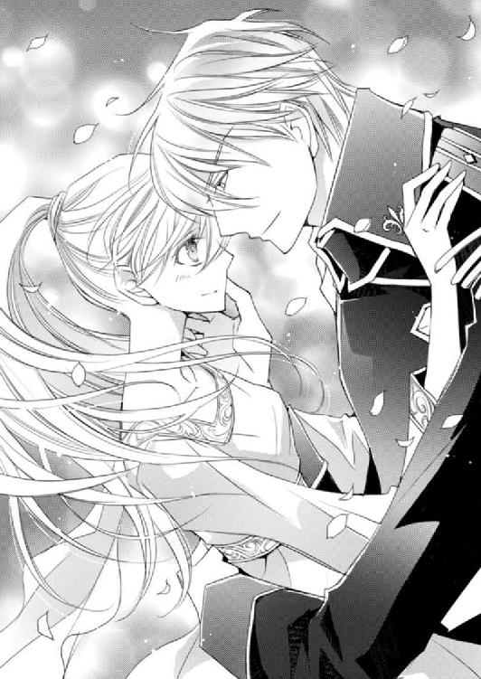

| ダブル・コントラクト7 縁がつたえる初逢瀬!? (ビーズログ文庫) | |
| 香月 沙耶 | |
| (2013) | |
本作品の全部または一部を無断で複製、転載、配信、送信したり、ホームページ上に転載することを禁止します。また、本作品の内容を無断で改変、改ざん等を行うことも禁止します。
購入時にご承諾いただいた規約により、有償・無償にかかわらず本作品を第三者に譲渡することはできません。
本作品は、底本の表現や演出を考慮して本文縦組で制作しております。また一部のページを改変しております。ごらんになるリーディングシステムにより、表示の差が認められることがあります。
それは、オフラ教教堂の通路を伝って、ヴァハラ獣界へと落ちてきた。
その場所には、たくさんのシシハヤが眠っていた。
数十、数百どころではない。空いっぱいにたゆたいながら眠るシシハヤの数は、およそ五千。シシハヤは集団行動をする生き物だが、この一団は一際大きな群れだった。
そこへ、ひと雫がぽとりと落ち──一瞬でシシハヤの身体は溶けるように青く滲み、透け、ゆらりゆらりと揺れる。
雫はこのうえなく芳しかった。
まるで母なる大地のようにふくよかで優しく、身体の芯まで沁み入るような、深く濃厚な甘い香り。
それはヴァハラ獣界に住まう生き物たちにとっての特別な香りと、まったく同じものだった。
青白く透けた五千ものシシハヤは、ひとつの意思を持った。
ゆこう。
この香りの場所へ。
我々を惹きつけてやまない、芳しい香りのもとへ。
さあ、ゆこう。
次に雫が落ちたのは、白と黒の葉が生い茂る、広大な森だった。
遠く目を向けても森の終わりが見えない。それほど広い森の真ん中に、一際高い木が生えていた。
ヴァハラの神を生み、育んだというその木は、ヴァハラ獣界の獣たちに、神宿る木と信じられていた。
神木の傍らにはラハヤがいた。
ラハヤは水の守護者と呼ばれている。
水の衣を纏い、水を従えることができるためだ。
神の木が永劫枯れないように──。
そんな、何者かの配慮があったかのように、神木の根元には、常にラハヤが控えていた。
水の守護者、つまり水を扱える動物は、シシハヤをはじめとして何種類かいるが、中でもラハヤは一番の力を持つ。
神木を守るラハヤに雫が落ちた、その時──。
エフィ。
漆黒の毛色のヴァハラが息を荒らげながら、苦しげに名を呼ぶ。
エフィ、それは許されぬ。
許されぬ？
エフィ、と呼びかけられたヴァハラもまた、全身を波打たせて呼吸を繰り返しつつ、漆黒のヴァハラをきつく睨み据えた。
誰が許さぬと言うのじゃ。イーノス、ゆうてみるがよい──！
エフィ、わかっているだろう。おまえはヴァハラの──なのだから。
わからぬ。妾は妾の思うように生きる。貴様に指図される覚えはない。
エフィ。
邪魔立てするのであれば、貴様を完膚なきまでに叩きのめす。さっさと去ね！
雷鳴の如くヴァハラは叫ぶ。
力がほとばしる。
受けて立つ漆黒のヴァハラもまた、己の力を振り絞り、いくつもの光の輪を出現させる。
力と力がぶつかり合った刹那、ひと雫を受けたラハヤが、恐ろしいほどの速度で膨張を始めた。
──それがヴァハラ獣界を揺るがす、大事件のはじまりだった。
ラハヤという生き物は、『聖なる水纏者』とも呼ばれている。
ラウラ・ファウベルにそう教えてくれたのは、美しい白銀の毛を持つ、ヴァハラの王であるサクリクスだ。
「聖なる、すいてん、しゃ、です、か」
ラウラがぎこちなく首を傾げると、彼女を抱いた腕の持ち主は、そうそう、と陽気に笑った。
「どの世界でもそうだと思うけどさ、綺麗な水って貴重だろ？」
ラウラはうなずく。
人界でもそれは同じだ。
ラウラが暮らすロレンシア王国は、気候が穏やかで自然災害も少ない、恵まれた土地だ。
だが国外では荒涼たる砂漠が広がる地域や、雨がほとんど降らず、また川もなく、真水が手に入りにくいところもあると聞く。
「ラハヤは川や海、それから大気中の水分を身の内に取り込んで浄化し、綺麗な水を服のように纏うんだ。ラハヤによって、好みの水ってのがあるらしいぜ」
サクリクスの説明を、ラウラは興味深く聞きながら、話題のラハヤをそろりと見下ろした。
ラウラが、英雄将軍ヒューバート・ガーディナーと、誓約のヴァハラ・キルラ‐キルレ‐キロルとヴァハラ獣界にやってきて、すでに二ツ日が経っていた。
たった二ツ日だが、とても濃く、めまぐるしい二ツ日間だった。
ことは、ラウラの姉であるクロエ・ファウベルが、ヴァハラ獣界に向かったことから始まった。
どうやらヴァハラと同調しているらしく、しかも彼女とともに、軍人のロムロ・バルディリスまでもがヴァハラ獣界に落ちてしまったのだ。
クロエが同調したヴァハラは、恐らくはリムル‐リシル‐リスレ。
自らヴァハラの女王であると宣言した彼女は、通常のヴァハラとは異なった姿──毛色こそ違うが、ラウラとヒューバートの誓約のヴァハラであるキルラとそっくりだった。
どういうわけか、キルラを毛嫌いしているらしいリムルは、ラウラにも悪戯紛いの攻撃を仕掛けてきた。しかもヴァハラの王、サクリクスを倒したと言ったのだ。
そんなリムルと姉が誓約、同調したとはとても考えられなかった。
ヴァハラ獣界では、人界と同じように過ごすことができない。強い圧がかかり、普通の体力しかない者は、身動きはおろか、喋ることすら辛い。
ヴァハラと同調すれば、その圧も感じずに済む。もしかしたら、クロエはそれを知って、ヴァハラ──リムルと誓約、同調することを選んだのかもしれない。
──それとも、何か別の理由があるのかしら？
疑問を抱くとともに、姉を心配するラウラの気持ちを汲んでくれたのだろう、ヒューバートはヴァハラ獣界まで連れてきてくれた。
姉を探す旅は、獣に襲われたり、キルラの力が暴走したりと、波乱に満ちていた。
途中出会ったイーノスというお喋りなヴァハラと同行することになったのだが、彼は実に曲者だった。
イーノスとは偽名で、実の名はアラステア。
セルリアという地にあるオフラ教教堂の教主であり、イーノスとは彼の誓約のヴァハラの名なのだという。
アラステアはイーノスを探す手伝いをしろと、ラウラとキルラをさらったのだ。
キルラと誓約して以来、ラウラはヒューバートと離れ離れになったことはなかった。
誓約者と誓約のヴァハラは、普段は見えないが鎖で繫がれる。だがラウラとヒューバートまでもが誓約の鎖で繫がれ、離れられなくなってしまったからだ。
どちらかが相手を呼ぶと、鎖が出現し、互いを近づける。鎖がある限り、離れることは不可能だった。
最初こそ、戸惑いや焦燥感を募らせたが、次第にヒューバートとずっと一緒にいたいと願うようになっていた。
ヒューバートもそう思ってくれていると知って、一生一緒に、とも言ってもらえたのだ。
そんな矢先に、アラステアの秘薬により、鎖を断ち切られた。
ヒューバートと離れ離れになったばかりかキルラとの同調まで解除させられ、ラウラはラハヤの海へと沈んでいった。
ラハヤは生き物を眠りへと誘う。
ラウラもまた、猛烈な眠気に意識を失いかけ絶体絶命の危機に陥りながらも、ヒューバートとキルラに再会することを決して諦めなかった。
そしてヒューバートに見つけてもらえたのだ。
この、広大なヴァハラ獣界の中で。
引き合う誓約の鎖がなくとも、ヒューバートはラウラを見つけ、助けてくれた。
──わたしたちに、誓約の鎖は必要ない......。
互いを想い合う心、信じる気持ちさえあれば、自分たちは一緒に......一生一緒に、生きていける。──そう確信したのだ。
そうしてヒューバートの誓約のヴァハラであり、ヴァハラの王のサクリクスとも再会、合流し、キルラをアラステアから取り戻すべく、『はじまりの森』へと向かっていた。
そこに、アラステアが探すイーノスがいるというのだ。
ラウラは、ヴァハラ獣界の地を覆うラハヤを見下ろしながら、サクリクスを呼んだ。
「ん？ なんだい」
「ラハヤに、包まれると、どうして眠って、しまうんでしょう？」
サクリクスは、次第に暮れていく空を見上げつつ、うーん、と首を傾げた。
「それはオレもわからないんだが、恐らくラハヤ自身が水を自分の衣にする段階で、なんらかの物質を発生させると思うんだよ。液体の水を自分の周りに固定させるためにさ」
「......確かに、水のままでは、纏えません、よね」
「で、その纏うための物質が、生き物になんらかの作用を及ぼすんじゃねえかなあってオレは考えているんだ。普段はそれを、ラハヤ自身が制御していて、相手を眠らせたい時だけ使っているんじゃないかな。──ま、これが正解かどうかはわからない」
「そう、ですか......」
「だが、それにしてもこれはどうしちまったんだろうなあ」
サクリクスは高く飛びながら、眼下の様子にため息をつく。
「ラハヤがこんなに増殖したり、手当たり次第生き物を眠らせたりするなんて、聞いたことねえぞ」
ラウラも言うことをきかない身体を宥めながら、ゆっくりと下に目を向ける。
視界いっぱいに広がるのは、水の守護者ラハヤだ。
少なくともラウラの見える範囲すべてが、ラハヤにより覆われている。
増殖しているのだ。
ラハヤにのみ込まれた生き物たちは皆、眠りについている。
大地はラハヤに覆い尽くされ、まるで水底のように見える。
海や川ならば、そこには生き物がいる。けれどラハヤに包み込まれた地に住む動物たちは、皆眠りについてぴくりとも動かない。
ラウラの視線の端に引っ掛かったのは、ヴァハラの天敵と言われているヤトだった。
個体によってはヴァハラ以上に強いと言われているヤトまでもが、ラハヤにのみ込まれ、望まぬ眠りにつかされている。
一度捕まったらなすすべもない。
静かに、だが確実に増殖していくラハヤを見下ろして、背筋に痺れるような寒気を感じる。
──将軍に助けてもらわなければ、きっとわたしも、あの場所に囚われて、眠りについていた......。
ヒューバートが来るまで、辛うじて意識を保っていられたのは、絶対に眠らないという強い意思があったからだが、今考えれば、それは奇跡に近かったのかもしれない。
けれど諦めなかったからこそ、こうしてヒューバートと再会できたのだろう。
ヒューバートもまた、諦めずにラウラを探してくれた。
道標になってくれたという、シシハヤのネムリンだが、よほど疲れたのだろう、ラウラが着る長衣のポケットの中で、すやすやと眠りについている。
雪は、すでにやんでいた。だが頰に触れる風は冷たく、これから夜を迎えるヴァハラ獣界は、ますます冷え込んでいくだろう。
夜になる前にキルラを見つけないと。
言うことをきかない身体を宥めながら、ラウラは遠方へと視線を向けた。
と。
それまで静かに凪いでいたラハヤが、いきなり水しぶきの如く空へと噴出した。
「おっ!?」
よくよく見れば、水しぶきは先端が鋭く尖っている。
ラハヤは勢いよく空へと伸び、容赦なくラウラたちに襲いかかってきた。
「遅ぇよ！」
ヒューバートと同調したサクリクスはラハヤの攻撃を悠々と避け、天高く身を翻した。
その動きは速く、頰に当たる風をなお冷たく感じる。
微かに肩を窄めた動きを目敏く見咎めたヒューバートが、ラウラを守るように、一層引き寄せてきた。
大丈夫か、と気遣わしげな眼差しに微笑んでうなずく。
「ラウラちゃん、ちょっとだけ我慢してくれな！」
「は、い......！」
サクリクスはさらに高度を上げ、飛ぶ速度を速める。ところが地上いっぱいに広がったラハヤは、なおも追い縋り、手足を搦め捕ろうと行く先々で氷のような切っ先を伸ばしてきた。
ヒューバートとサクリクスは、ラウラを抱きかかえながらかわしていく。だがラハヤの追撃はおさまらず、それどころか逃がしたことを悔しがるように、ますます執拗に氷の刃を伸ばしてくるのだ。
「キリがねえな。......ヒュー！」
「ああ」
常から会話がなくとも互いの考えを悟るすべに長けたふたりだ。同調していればなおのこと、言葉など必要ない。
「ラウラちゃんごめんな、もう少しだけ我慢してくれる？」
「大丈夫、です」
ぎこちなくうなずくと同時に、ヒューバートはラウラを自身にもたれかからせるようにし、腰に回した方の腕のみで支えた。
「わ、ぁ」
圧がかかっているために、ラウラが動ける範囲は非常に限られている。普段ならばヒューバートにしがみつくのに、今のラウラにはそれができなかった。
ヒューバートに身を任せるままという状態に、ラウラは焦燥感を覚える。
──将軍とサクリクスさんの荷物になってしまう。
何もできないことが辛い。
こんな気持ちを以前も抱いた。
役立たずの自分が嫌で、でもラウラはその時、自分なりにヒューバートについていこうと決めたのだ。
思うように動けないのはこの場面では仕方ない。自分にできることは、ふたりの邪魔にならないようにすること。それしかない。
ごめんなさい、と言いそうになるのをぐっとこらえて、今自分が持てる力を振り絞って、ヒューバートの肩に指を縋らせた。
ヒューバートはラウラの腰をしっかり支えると、空いた方の手を自らの剣に伸ばした。そして一気に引き抜くや、襲いくるラハヤの切っ先を、一刀のもとに斬り捨てた。
ヂュィィ......！
苦悶の声をあげるも、ラハヤはなおも攻撃を仕掛けてくる。
その時、ヒューバートが一切の動きを止めた。
さらに次の瞬間、ラウラはヒューバートが持つ剣がほのかに発光していることに気づく。
「剣、が......！」
「ヴァハラの王たるオレ様と英雄将軍ヒューバート・ガーディナーの合わせ技だぜ。食らいやがれ！」
サクリクスの威勢のいい声とともに、光を纏う剣が真っ直ぐ振り下ろされる。
ヂュイイイイ──！
剣から放たれた光に触れるやいなや、ラハヤは絶叫した。
「すご、い」
光の軌跡は遙か彼方まで進む。
その圧倒的な光量と剣技の凄まじさに恐れをなしたのだろう、ラハヤからの追撃はぴたりとやんだ。
あとには静かに凪いだラハヤの海が広がるばかりだ。
その様子を確認したヒューバートは剣を鞘に収め、再び両腕でラウラを支えてくれた。
「すごい、です！ 将軍、サクリクスさん......！」
歓声をあげたラウラを見下ろすヒューバートの眼差しは優しい。
「それにしてもラウラちゃん、こんな状態のラハヤにのみ込まれたのに、よくがんばったなあ。ラウラちゃんこそすげえよ」
「え、......そ、そんなことは」
サクリクスはいきなり顔を寄せてくると、ラウラの頰に自らのそれをくっつけてきた。
「わ、サ、サクリクス、さ......？」
「圧も辛いだろうに、ホント、ラウラちゃんは努力家だしがんばりやだよなあ」
「え、っと......」
外見はヒューバートだが、今、身体の主導権を握っているのはサクリクスだ。戸惑いつつドキドキしていると、目の前の顔が──表情が豹変した。
「あ。......、将軍、です、ね？」
こくり、とうなずかれる。
ヒューバート・ガーディナーとサクリクスは、このうえなく相性のいい誓約者と誓約のヴァハラだが、性格はまったく異なる。
ヒューバートは、最近はそうでもないが、基本的に言葉は少なめで表情もなかなか変わらない。対するサクリクスはといえば、立て板に水とばかりに、滑らかに喋る、喋る。喋りまくる。加えて表情も大変豊かだ。
出会った頃に、ヒューバートの顔でサクリクスが話しているのを見ると、とてつもない違和感を抱いたものだ。
表情筋が退化しちゃったんじゃないかしらとすら思ったヒューバートの顔の一瞬一瞬が、あまりにも鮮やかに変化するので。
「ラウラ」
「はい、ぇっ？」
首を傾げたラウラに、いきなりヒューバートがそっと頰を押し当ててきた。
それはつい先刻サクリクスがした行為とまったく同じだった。
「し、将、軍？」
「おいおいお～い、おまえ、オレのことまでライバル視すんじゃねえよ」
「おまえをライバル視したつもりはない」
「はあ？ じゃあなんでオレ様と同じことをするかな」
「先刻頰が触れた時に冷たかった。温めたいと思っただけだ」
胡乱に目を眇めるサクリクスが一瞬だけ見えたかと思うと、再びヒューバートに変わった。
「俺がしたかったからした、ということもあるが」
さらりととんでもないことを口にされて、ラウラは大きく目を見開いた。
「おま......っ、ラウラちゃんのこととなると、ホンット心が狭いよなあ。余裕のない男はもてないぜ？」
「ラウラ以外にもてなくともまったく問題ない」
はわっ、とラウラの喉から妙な声が出てしまうが、ふたりの耳には届かなかったらしい。
サクリクスが、さらに大きなため息をついた音でかき消されたためだ。
「おまえ今からそんなんで、今後どうするわけさ？ 人界の半分は男なんだぜ？ まさかラウラちゃんを屋敷に囲ってほかの男の目に触れさせない、なんてことしねえよなあ？」
めまぐるしくヒューバートとサクリクスが入れ換わるものだから、ラウラは目を白黒させた。
──わたしとキルラが同調している時も、こんな感じだったのかも。
とすれば、そばにいるひとたちは、混乱するし大変かもしれない。
だが、こうしてヒューバートとサクリクスのふたりが無事でいること、そして普段と少しも変わらない会話をしていること、それが今のラウラには、とても心強く頼もしく、そして嬉しく思えた。
一時はヒューバートと離れ離れになり、さらには、ラウラとヒューバートの誓約のヴァハラ、キルラ‐キルレ‐キロルとの同調を解かれ、サクリクスは行方不明という、絶体絶命のピンチに陥ったのだから。
──ここにキルラがいてくれたら......。
大切で大好きな誓約のヴァハラである、キルラ。
今、ラウラとキルラが離れ離れになる原因をつくった人物のことを考えると、気持ちが重く沈み込む。
アラステア教主。
誓約者と誓約のヴァハラは、稀に『同調』をすることができる。
同調とは、誓約者の中にヴァハラが入ることを言う。
オフラ教教主のユリシーズ曰く、「教主といえども同調できるとは限らない」ほどで、できる者は滅多にいないのだという。
この『同調』に対し、アラステア教主は、『逆同調』をしていた。
『逆同調』とは文字どおり、ヴァハラの中に人間が入るのだ。
まず不可能なことを可能にしたのは、彼がある薬品を使ったためだ。
ロレンシア王国の国花であるサーリァに酷似した香りを持つその薬品は、ヴァハラを己の意に従わせることができる。
アラステアはその薬品を使って、逆同調をしてのけた。
そして自身の目的のために、ラウラとヒューバートを繫ぐ鎖を引き千切り、またラウラとキルラの同調を解き、キルラを誘拐した。
キルラがヴァハラ獣界のすべての生き物の言語を理解し、言葉が交わせるからだ。
『吾輩にとって大事なのはイーノスだけなんで』
自分の望みのために、人界やヴァハラ獣界、そしてほかの生き物や人間など、どうなっても構わないのだと、アラステアはあっけらかんと言ってのけた。
あの時、あの瞬間のことを思い出すと、今でも胸の底から怒りが湧き出てくる。
ヒューバートの命が潰えたかもしれない......。そんな絶望に、恐ろしいほどの恐怖を抱いたラウラの思いに、アラステアはまったく頓着しなかった。
──自分と自分の大切なもの以外は、どうなってもいい、なんて......。
アラステアの世界は、彼の誓約のヴァハラだけがいればいいと、そう言うのか。
他者などどうなってもいい、と？
──そんなの、悲しすぎるよ。
「ラウラ？」
キルラのこと、アラステアのことを思い出して、知らず目を伏せたラウラに気づき、ヒューバートが声をかけてきた。
「あ、は、はい？」
「圧が辛いか？」
「それは、大丈夫、です」
ぎこちなく唇をほころばせるものの、ヒューバートは案じるように目を細める。
「あの、ただ、わたし、重いですよ、ね。すみません」
圧の辛さはいくらでも我慢できる。ただ思うように動けないことで、ヒューバートやサクリクスに迷惑をかけていることが、やはり辛い。
「まったく重くない」
「うんうん、むしろ年頃の女の子としちゃ、軽すぎるんじゃないかな。もっと太ってもいいくらいだよ。あ、でもラウラちゃんプロポーションいいからなあ。今のままでも太ってもどっちでも全然ＯＫ！」
「は、......えっと、え、ええ......っ？」
聞き慣れない褒め言葉に戸惑っていると、ラウラを抱く腕の主の表情がふっと変化した。
サクリクスのおどけた表情から、穏やかでやわらかな優しいものへと。
「将、軍？」
「以前言ったことを覚えているか？」
「え、っと、何を、ですか？」
「『俺はそのままのおまえをいとおしいと思っている』」
──あ。
それは、以前オフラ教教堂の光鈴堂で言われた言葉だった。
そしてその時、こうも言われた。
『変わっても、変わらずとも、どんなおまえでも、俺は可愛いと思うが』
と。
あの時にもこうして抱き上げられて、ヴァハラの天敵、ヤトと戦ったのだ。
「あの、はい。覚えて、います」
じわじわと頰が赤らむのを感じながら、ラウラは小さくうなずいた。
「あらためて言おうか？」
微かにヒューバートが笑みを見せる。
滅多に見られないヒューバートの微笑に、にわかにドキドキして目を瞬かせた。
「えっ、と、あの、あらためては、......いい、です」
ふたりきりならともかく──ふたりきりでも、だが──、サクリクスもいるのに、恥ずかしさのあまり、挙動不審になってしまいそうだ。
あの時はときめきすぎて、胸の奥が痛みを覚えるくらいヒューバートのことが好きなんだと、再確認した。
一緒にいればいるほど、ヒューバートへの想いが膨らんでいく。
そばにいたい、ずっと一緒にいたい。
その気持ちはラウラの独りよがりな願いではなく、ヒューバートもそう思っていると、言葉で、行動で、折に触れ信じさせてくれる。
だから、あらためての言葉は、今のラウラには必要なかった。
ヒューバートは穏やかな表情で、そうか、とうなずいた。
──わたしはわたしらしく、自分の力で、将軍と歩いていきたいから。
焦る必要はないと、自分自身にうなずいてみせる。
「なんかさあ、ふたりとも、前と感じが違うんだけど」
「え？」
ヒューバートからふいに変わったサクリクスが、天へと目を向けて、小さく唸った。
「オレがこっちに来てる間になんかあった？ つかあっただろ？ ヒューは前からあからさまにラウラちゃんスキスキって感じだったけどさ」
「ええっ!?」
スキスキって、何それ、とラウラが仰天していると、サクリクスがじっくりと視線を注いでくるから、思わず腰が引けた。
「ラウラちゃんの雰囲気も変わったっていうか」
「そ、そう、です、か？」
「変わった変わった。もともと可愛かったけど、もっと可愛くて、こう、さらにやわらかい感じになったっていうか」
「やわら、かい......」
「あ、今手を回しているところがってんじゃなくて......、うおっ、ヒュー、待て何怒って、おまえホンットラウラちゃんに関してはこらえ性がなさすぎんぞ！」
「サ、サクリクスさ、ん？」
どうやら内でヒューバートとサクリクスの攻防が繰り広げられているらしい。ラウラの前で、めまぐるしく表情が変わる。恐らく身体の主導権をどちらも譲ろうとしないのだろう。
ハラハラと見守るラウラが、目を回しかけていた、その時──。
「......！」
ヒューバートの表情となったかと思うと、一瞬で高度を上げた。
「あ、あ......！」
下に視線を向ければ、戦意喪失したと思っていたラハヤの一部が、再び鋭い先端を、空へと突き出したのだ。
「油断も隙もねえな」
半眼で地上を見下ろしていたサクリクスが、ふいにラハヤが向かった先へと目を向けた。
まるで空に住まう生き物たちを捕らえようとするかのように、ラハヤはぐんぐん伸びていく。そして、ラウラたちより下方を飛んでいた鳥の群れに、いきなり襲いかかった。
十羽ほどの群れのうち、半数はラハヤに捕まり、そのまま引き摺り込まれる。
そしてほかの生き物たち同様に、ラハヤの中に閉じ込められ、やがて意識を失って眠りについてしまった。
生き物に向けて、攻撃ともいえる動きをするラハヤを、ラウラは恐る恐る見下ろした。
ラハヤはただひたすらにヴァハラ獣界の地を覆っていく。
「ラハヤが、すべてを覆い尽くして、しまったら......、どうなって、しまう、んでしょう」
ひっそりと発したラウラの声は、微かに震えていた。
大地を覆い尽くしたラハヤは、すべての生き物をのみ込み、眠りにつかせるだろう。
ラハヤに覆われれば、植物だって成長できないのではないか。
──もし、そうなってしまったら......。
ヴァハラ獣界には、生きて、動いているものはなくなってしまうのではないか──？
その言葉を受けて、ヒューバートの腕がしっかりとラウラを抱きしめ直す。
まるで心配するな、というように、その腕は逞しく頼り甲斐があった。
「オレ様がそんなことはさせねえよ、ラウラちゃん」
「サクリクス、さん......」
「絶対にさせねえ」
「策はあるのか」
サクリクスが断言したその直後に、冷静にヒューバートが問う。
そんなヒューバートへ、サクリクスは胸を張った。
「ない」
はっきりきっぱり返され、ラウラはかくん、と肩を落とした。
「とりあえず一個ずつなんとかしていこうぜ。今はまず、キルキルを取り戻さないとな！」
「そう、ですね」
確かにそうだ。
ラウラもまた決意を込めて、小さくうなずく。
「サクリクス」
「ん？」
「おまえが敗れたというリムル‐リシル‐リスレについてだが」
「はああ!? 敗れてねえよ、不意を食らっただけだっつの！」
「ラウラからの贈り物を戦利品として奪われたのだから、敗れたのだろう」
いきり立つサクリクスに対し、あくまでもヒューバートは冷静にそう返す。
「うっ......。そ、それはそうなんだが、別に敗れたわけじゃ」
「勝敗はどうでもいい」
「どうでもよくねえだろうが。そこはきっちりとだな！」
「リムル‐リシル‐リスレは、なぜあれほどにキルラ‐キルレ‐キロルと似ている。おまえはその理由を知っているのではないか」
「──」
それは恐らく、ヒューバートが初めてサクリクスへ発した、キルラに関しての問いだったのだろう。
サクリクスはふっつりと黙り込む。
だがラウラもまた、じっとサクリクスを見つめていることに気づいたらしい。
息をついて、上空を見上げた。
「ヴァハラってのは、ヴァハラの掟っていう厄介な代物に囚われているから、全部話すわけにはいかないんだ。ヴァハラの王は特に」
そんなふうに前置きをして、サクリクスは口を開いた。
「キルキルとあの黒いヤツの誕生の秘密には、一匹のヴァハラがかかわっている。......とオレは考えている」
「一匹の、ヴァハラ......」
サクリクスはラウラへ、うん、とうなずいた。
「そのヴァハラとは？」
「エフィっていう名のヴァハラだ。じじいの娘なんだよ」
エフィ。
耳にその名が触れた途端、何か、不可思議な感覚がラウラの胸の内に宿る。
──初めて聞く名前。......なのに、この感覚はなんだろう？
戸惑うラウラだが、その感覚を口にはせずに、サクリクスの話に耳を傾ける。
「前々王の娘か」
「そう。オレの前の代の女王でもある」
「女王......！」
ラウラは思わず叫んでいた。
「メスも王となれるのか」
ラウラの驚きの理由を正確に汲み取ってくれたヒューバートが問うと、サクリクスはあっけらかんとうなずいた。
「滅多にないけど、歴代の王の中で、何体かはいたらしいぜ。まあそのエフィってのは、なんていうか、女王になる前から女王気質バシバシのヤツでさ。オレ、ガキの頃いろいろエライ目に遭わされて、大変だったんだぜえ」
エライ目ってどんな目だろう、と好奇心を刺激されたラウラだが、その問いを口にすることは、ぐっと我慢する。
「まあゼノと違ってすげえ優秀なんだけどよ、ひたすら己が信じる道を行くって感じで、じじいですら手を焼いていたぜ」
「？ どうして、そこに、ゼノさんが？」
「ああ、エフィはゼノの妹だからつい」
「え......！」
──ゼノさんと、サクリクスさんの前の代の女王様が、兄妹......！
「ゼノは前々王の息子であり、前女王の兄というわけか」
「そうそう。そういう生まれだから、あいついろいろ知ってることが多いんだ。それなのにすんげえ天然で、大事なことをポロッて言っちまったりするから、エフィとは違った意味で、じじいも苦労したみたいだぜ」
「そうなん、ですか......」
「元帥がゼノの捕獲を命じたのは、それが理由か」
「かもなあ」
『ゼノを野放しにしてはおけないんだ』
ロレンシア王国の王女にして、元帥職につくミルドレッド・ロレンシアが零したひと言を思い出す。
オフラ教の教尊、ジェイラスが亡くなった時、行方をくらましたゼノの捕獲を命じたミルドレッドは、それを危惧していたのだろうか。
確かにゼノはさびしがりやでお喋りで、つい口が滑った、というような場面に遭遇したことも一度ならずあったように思う。
あるいはその中で、明かしてはいけないヴァハラの掟があって、秘密が漏れないようにという配慮があったのかもしれない。
「あいついいヤツなんだけど、思慮深いとは間違っても言えねえからなあ」
サクリクスは苦笑を零しつつぼやいた。
「キルラ‐キルレ‐キロルとリムル‐リシル‐リスレの誕生に、その前の女王というヴァハラがどうかかわっているんだ」
話題の軌道修正を図るヒューバートの問いに、だがサクリクスはふいに口をつぐんだ。
「......サクリクス？」
「んー、うん、ちょっと待て」
「......？」
サクリクスが何かを言いよどむなんて珍しい。
──もしかして、『ヴァハラの掟』というものに抵触しちゃう、とか？
そろりとヒューバートを──サクリクスを見上げると、にこりと笑みを返された。
「あのな、ヴァハラの王はヴァハラ獣界の安定を一番の役目としているんだが、女王は別の役目を担っているんだ」
「役目の、違い......」
「その役目とは？」
「ヴァハラ獣界の成り立ちの根幹にかかわることだから、それは言えない」
きっぱりと言うと、サクリクスはヒューバートの奥に引っ込んだ。
ラウラとヒューバートは顔を見合わせる。
同調しているヒューバートが、微かに目を眇める。
これ以上問いを重ねても、サクリクスは絶対に口を開かないと確信しているのだろう。そしてラウラもそう思った。
「......」
──ヴァハラの女王。その、役目。
それがキルラとリムルの誕生に深くかかわっている、ということなのだろう。
サクリクスの言葉を深読みすれば、キルラとリムルの誕生が、ヴァハラ獣界の成り立ちの根幹に関係しているということではないか。
ラウラの大切な誓約のヴァハラ──キルラ‐キルレ‐キロル。
小さくてふわふわで、姿こそほかのヴァハラとは違うが、ラウラにたくさんの幸せを与えてくれた、大好きなキルラ。
与えられた以上に、ラウラもキルラを幸せにしたい。
ずっとずっとそばにいたい、ラウラの大事なヴァハラだ。
──キルラの、秘密......？
正直なところ、キルラがキルラであれば、どんな背景を持って生まれてきたのかなんてラウラは気にしない。けれど当のキルラは違うだろう。
自分と同じ種はいないと泣いたキルラを、ラウラははっきり覚えている。己のルーツを知りたいという気持ちは、痛いほどわかる。
けれど、とラウラは唇の内側を密かに嚙んだ。
──もし、秘密が明らかになっても、キルラはわたしと一緒にいてくれる？
ヴァハラの儀でキルラの誓約者となって以来、これほどに遠く離れたことはない。
早く、早く、少しでも早く、キルラのもとへ駆けつけたい。
泣いていないだろうか？ 心細さに震えてはいないか？
ラウラがラハヤの海に沈んでいこうとした時に見たキルラの絶望的な表情を思い出して、ギリギリと胸の奥が痛む。
キルラ、キルラ。
無事でいて。
行くから。今、行くから。
──将軍とサクリクスさんと、一緒に......！
己の誓約のヴァハラの無事を心から祈るため、ラウラはそっと目を閉じた。
神宿る木とヴァハラ獣界の獣たちに畏れられ、崇められている神木が、無情にもラハヤにすっぽりと包み込まれている。
その木を、キルラ‐キルレ‐キロルは恐る恐る見下ろした。
ヴァハラに逆同調をしたアラステアにさらわれ、誓約者であるラウラやヒューバートと離れ離れになってから、さびしさ、恐怖、怒りで不安定に揺れていたキルラだったが、今見える光景は、それらの感情を一瞬忘れるほどの衝撃があった。
神木は白黒の森──『はじまりの森』の中にあって、一際異彩を放っている。
まず、通常の木とは比べ物にならないほど幹が太く、また大きい。
幹はまるで炭化したかのように黒く、枝は雪の如く白い。そして枝にびっしりとつく葉は、くっきりとした白と黒だ。
白黒の森のシンボルともいえる、神木の頂に、白と黒のヴァハラが眠りについていた。
その二匹のヴァハラから目が離せない。
どちらのヴァハラも成体のようだ。立派な体格をしていて、本来のヴァハラと比べ、ひと回りほども大きかった。
キルラが知る中で一番大柄で格段に見栄えのいいヴァハラは──絶対に口にはしないが──バカ王ことサクリクスだ。そのサクリクスと比べてみても、勝るとも劣らないほどに、この二匹もまた美しい。
キルラは特に、白いヴァハラの方に目を奪われた。
なんと美しいヴァハラじゃ、とキルラは呟く。
ラハヤに包み込まれているが、長い毛並みは艶やかで、陽光の下で見たなら、さぞかし純白の毛が映えることだろう。
視線が、純白のヴァハラの喉元へと吸い寄せられる。
「......首飾り、じゃろうか？」
見間違いではなかった。
純白の毛色のヴァハラの首には、一際繊細な細工の首飾りがあった。
細い銀色のチェーンに、サーリァを模した花の銀飾りがいくつも添う。
人の手でつくられたものに違いない首飾りは、純白のヴァハラに大層似合っていた。
純白のヴァハラから目が離せないでいるキルラに対し、隣を飛ぶヴァハラはといえば、漆黒のヴァハラを凝視していた。
「──イーノス」
「......む？」
囁くような呼び声が、キルラの耳に辛うじて入ってくる。
キルラは純白のヴァハラから視線を引きはがすと、隣のヴァハラへと目を向けた。
「あれが貴様の誓約のヴァハラか」
「ええそうですよ、新種のヴァハラくん」
隠すこともなく、隣のヴァハラはうなずいた。
キルラの隣にいるのは、額にかかるくるんとした癖毛以外は、これといって特徴のない黒毛のヴァハラだ。
だが彼は普通のヴァハラではなかった。
オフラ教の教主であるアラステアが、ヴァハラに『逆同調』をした姿なのだ。
彼こそヒューバートとラウラの誓約の鎖を無理やり引き千切り、そればかりかキルラをここまでさらってきた張本人だった。
ラウラとキルラを強引に同調解除させ、そしてラハヤに沈むラウラを助けようともしなかった。
あの時、あの瞬間のことを思い出すと、キルラの小さな身体は強い憤怒に腹の底からカァッと熱くなる。
だがそんなキルラなどお構いなしに、アラステアはやりたいことをするのだ。
「なんなんでしょうかねえ、新種のヴァハラくん。あの膜みたいな、菓子のゼリーみたいなふよふよしたのは」
「......」
問われても言葉を返す義理などない。
そっぽを向くと、いきなりアラステアの前肢が伸びてきて、ドンと突き飛ばされた。
「何をするのじゃ！」
「吾輩が訊いているのに無視するからですよお。あれがなんなのか教えてくださいな」
「何ゆえ貴様に教えねばならぬのじゃ」
「まあ、うん、知らなくてもいいけどね。じゃあちょっと協力してよ」
協力？ とキルラが首を傾げた刹那、またしても不意打ちで、アラステアがタックルをしてきた。
「ふぎゃあ──ッ！」
成体のヴァハラに突き飛ばされて、小さなキルラは神木に向かって、くるくると落ちていってしまう。
森全体を覆うラハヤに激突しかけたのを、すんでのところで回避したキルラは、キリキリと目をつり上げた。
「貴様、わかってはいたが、なんというひどいヤツじゃ！」
「だってそのふよふよしたのに触って、イーノスみたいに、吾輩が中に閉じ込められたら困るじゃないですか。だから君に飛び込んでもらうことにしたんです」
「我だって閉じ込められたくなどないわ！ 確かめたいなら自分で確かめるがよかろう！」
「嫌ですよ、そんな怖い」
「怖い、じゃと？ 噓じゃな。貴様に怖いという感情など、ありはせんじゃろう！」
澄ました顔で『怖い』なんて、アラステアはわざとらしく震えるのだが、絶対に噓だ。まったく信じられない。
「てへ。新種のヴァハラくん、吾輩のことよくわかってるじゃない。うん、実は全然怖くない」
「むきゃあッ！ 貴様は何ゆえそれほどに自分勝手なのじゃ！」
頭にきて、地団太を踏むように、キルラは小さな肢を振り回す。
「少しは他者の気持ちを慮るとか大事にするとか、してみるがよい！」
「ええ？ そんなことしたって得なことなんにもないじゃないですか」
「ある！」
キルラが断言すると、アラステアは小バカにしたように片方の目だけを細めた。
「あるんですかあ？」
「相手を大事にする気持ちは、己へとちゃんと返ってくるのじゃ」
「別に返ってこなくても、ねえ？」
首を竦めるアラステアに、キルラは低くうめいた。
「貴様は何ゆえそうなのじゃ。貴様の大事なものはイーノスとやらだけなのか」
「そーですよ。吾輩、イーノスしか大事じゃないですし、イーノスだけいればそれでいいんです」
恐ろしいほどにきっぱりと、アラステアはうなずく。
キルラは呆気に取られ、そして途方に暮れた。
こんな人間──だけでなく、ヴァハラもそうだ──に出会ったことはない。
どうしてそんなにも、イーノス以外の他者を排除しようとするのか。
それがどうにも悔しくてならない。
キルラには、大事なひとや大事なヴァハラ、そして世界には、大好きなものがたくさん散らばっている。それらひとつひとつをなくしたくないし、好きなものをこれからだってもっともっと増やしていきたい。
好きなものがたくさんある世界の方が、素敵だし楽しいではないか。
「見解の相違ですよお、新種のヴァハラくん。しょうがないです。吾輩と君は別の生き物なんだから」
「......別の生き物じゃからといって、わかり合えないことばかりではないじゃろう」
それでも足搔くようにキルラは言う。
「わかり合えないことの方が多いですよ。ていうかですね、ちょっと退いていてくれないですかね」
アラステアはうっすらと目を眇めた。
「やってみましょう」
そう言うや、アラステアの口から、光が溢れ出る。
キルラは慌てて光の進路から退いた。ところが出現した光はあまりにも弱々しく、シャボン玉のように儚い。
じわりじわりと、悲しくなるくらい時間をかけて、ラハヤへと飛んでいく。
「なんともしょぼいのう」
思わずキルラは突っ込んでいた。
「新種のヴァハラくん、なんか言いましたかあ？」
半眼で睨みつけられたキルラは、慌てて首を振った。
「何も申してはおらんぞ。貴様の攻撃がしょぼいなどとは断じてな」
「しょぼいって言いましたねえ......。仕方ないじゃないですか。吾輩ヴァハラじゃないんですから」
「同調をしているからこそ、ひとがヴァハラの力を使えるのではないか？」
「......まあ、このヴァハラとは正式に誓約をしていませんしね」
呟いたアラステアの声は、普段と比べ格段に小さかったため、キルラの耳には届かなかった。
「ヒューバートとバカ王などすごいぞ。互いの力が増して、凄まじい攻撃を繰り出すのじゃ」
「あのひとは別格ですよ、別格！ 同調せずにヴァハラ獣界に来ているっていうのに、圧なんて関係ありませんよーって感じで。なんですか、あの化け物じみた力は。あのひとはもはや人間ではありません！」
「人間でなければ、ヒューバートは何者なのじゃ」
「あれは『ヒューバート・ガーディナー』という新種ですよ、新種」
「なんと、ヒューバートは我と同じか！」
それはなんだかとっても嬉しいぞと思わずにっこりするキルラだったが、すぐに笑っている場合ではないと、顔を引き締める。
そんな他愛ない会話をしている間にも、アラステアの口から放出されたシャボン玉状の光は、ゆっくりとラハヤに近づいていく。
「あ、当たったのう」
だがラハヤの表面に触れた途端、光は空気に溶けるように消失してしまった。
当たったラハヤに、まったく異常はない。
「うーむ。吾輩の攻撃ではやはり無理ということですな」
「そのようじゃの」
「では新種のヴァハラくんよ、ゆきなさい！」
威勢よく叫ぶアラステアを、キルラは白けた顔で見やった。
「何をしているのです。早く！」
「何ゆえ我が貴様の言うことを聞かねばならぬのじゃ」
そこまで言って、キルラはふと先刻聞いたアラステアの言葉を思い出した。
『イーノスを見つけたらいいですよ』
アラステアは、確かにそう言ったのだ。
「そうじゃ、イーノスとやらは見つかったのじゃから、我にもう用はないであろう！」
キルラはパッと顔をほころばせた。
「さらばじゃアラステアよ！ 我はラウラのもとへ帰るのじゃあ！」
「いやいや待ってちょうだい」
その場から飛び去ろうとしたキルラを、アラステアの眷族と化したシシハヤとミュウィンが取り囲んだ。
「何をする!?」
「だから待ってってば。ここで新種のヴァハラくんに去られたら、吾輩困っちゃう。イーノスを助ける手伝いをしてよ。ていうかしろ」
呆れ果てた命令に、キルラはキリキリと目をつり上げた。
「貴様は本当に噓つきじゃの！」
アラステアは息を吐くように噓をつく。
だがキルラが憤慨しても、アラステアはちっとも気にしないし、微風ほども揺るがないのだ。
「イーノスが目を覚まして、あのふよふよの中から無事脱出したら、自由にしてあげるから」
「貴様の言うことは何ひとつ信用できん！」
「信用しなくてもいいからさ、新種のヴァハラくんの力で、ちょっとあれに攻撃してみてよ」
「むう......！」
口を引き結ぶキルラを追いたてるように、シシハヤとミュウィンが迫ってくる。
キルラは下方に視線を向けた。
白と黒のヴァハラは、ラハヤに深く眠らされているのだろう、ピクリとも動かない。
──あのヴァハラはなんなのじゃ？
白いヴァハラなど滅多にいない。
キルラが知り得る限り、サクリクスと前々王のみだ。彼らの口から、ほかに白毛のヴァハラがいると聞いたこともない。
あのヴァハラは何者なのだろう。どうしてアラステアの誓約のヴァハラとともに眠りについているのか......？
「新種のヴァハラくんは、あっちの白いヴァハラが気になるようだね」
アラステアはにんまり笑いながら指摘する。
「む。別に気にしてなどおらん」
「そう言わず、白いヴァハラを助けるつもりでさ、がんばってみてよ」
いちいち癇に障るアラステアの言葉だが、自分が純白のヴァハラから目を離せないのは事実だった。
アラステアの命令に従うのは悔しい。悔しいが、あの純白のヴァハラの目が開くところが見てみたい。
キルラは複雑な思いを抱きながらも、大きく口を開いた。
先刻ラウラと同調していた際に、限界まで光を放出したため、いつもより勢いがない。
だがそれでも、アラステアの攻撃とは比べ物にならないほど強大な光が溢れ出た。
「おお、美しいではないですか、新種のヴァハラくんの光は黄金色ですね！」
アラステアは子どものように喜んだ。それを苦々しく思いながら、キルラはラハヤに向けて光を放った。
もちろん、神木の頂で眠る白と黒のヴァハラを傷つけないようにという配慮から、彼らからじゅうぶんに離れたところへだ。
光はラハヤにぶつかるや、千々に弾け飛ぶ。
「ああ、残念！ やっぱり掠り傷もつかない、か、おお──！」
「うわあああ！」
攻撃されたことに怒ったのか、ラハヤの一部がいきなり変質した。氷状の鋭い牙となり、キルラとアラステアに襲いかかってきたのだ。
津波のように押し寄せてくる何十もの牙に、キルラはもちろん、アラステアもほうほうの体でさらに上空へと逃げる。
ところがラハヤは諦めるどころか、ぐんぐん猛追を仕掛けてきた。
「うわ、ちょっと、吾輩じゃなくて新種のヴァハラくんが攻撃したんだから、そっちに行ってくださいよお！」
「貴様、自分だけ助かろうとしておるのか!? 卑怯者めぇ──！」
「なんとでも言ってくださいな！ シシハヤ、ミュウィン！ 吾輩の盾になるのです！」
アラステアの命令を受けて、数百にも及ぶシシハヤたちが、卑怯者を守ろうと、ラハヤの攻撃の前に立ち塞がった。
「おまえたちが犠牲になることはなかろう！」
逃げるのじゃ、とキルラはたくさんの光の粒を立て続けに放出する。
小さい反撃ながら、ラハヤの攻撃を逸らすことができた。だがシシハヤの一部がラハヤに捕らえられてしまう。氷状の先端はシシハヤに巻きつく寸前で、縄状に変化した。ラハヤに巻きつかれたシシハヤたちは、『はじまりの森』をすっぽり覆い込んだラハヤの海に引き摺り込まれ、そして白と黒のヴァハラ同様、呆気なく意識を失ってしまった。
「......ああ、なんということじゃ」
キルラに危害を加えようとしていたシシハヤだが、それはアラステアの命を受けてのこと。ヴァハラ獣界でともに旅をしたシシハヤのネムリンを思い出して、キルラはがっくりとうなだれた。
「あのふよふよに取り込まれたら眠りにつくと、そういうわけですねえ。本当にあれってなんなんでしょ」
自分を守ってくれたシシハヤが囚われたのに、アラステアは飄々と首を傾げている。その様子が憎らしくて、キルラはキッとアラステアを睨みつけた。
これまで出会ってきたひとたちは、キルラにとって皆大切で大好きな者ばかりだ。
誓約者であるラウラやヒューバートはもちろん、シド・エリクソンやユリシーズ教主、ミルドレッド元帥、ラウラの姉のクロエ・ファウベル。全員のことが好きだと断言できる。
けれどこの男──アラステアだけは別だった。
他者を平気で犠牲にし、踏みにじるその性根が、キルラには我慢ならない。
──何ゆえこんなにねじ曲がった根性になってしまったのじゃ。
そう問うても、きっとアラステアは、「そんなの吾輩の勝手ですよー」なんて笑いながら言うに違いない。
自分の誓約のヴァハラであるイーノスのことだけが大事で、ほかのひとやものなどどうでもいいと言う。
それがキルラにはどうしても解せない。理解できないアラステアに対し、キルラの苛立ちは増していく。そしてどういうわけか、同じくらい悲しい気持ちにもなっていく。
楽しいこと、幸せなことはたくさんあるのに、アラステアはそれを見もせず体験もせず、必要ないとばっさり切り捨てているのだ。
彼にはイーノスしかいない。イーノスだけなのだ。
──悲しいではないか......。
「ねえ、新種のヴァハラくん、何をぶつぶつ言っているんです？ あのふよふよ、なんなのか知ってるんでしょ？ 教えてくださいよ」
「あれはラハヤという、水の守護者じゃ」
「ラハヤ、水の守護者......？ 生き物なんですか？」
「水の衣を纏った生き物じゃ。ラハヤに包まれると、動物たちは眠りにつくのじゃ」
「そうなんだ。──ところでなんでいきなり教えてくれる気になったんです？」
首を傾げるアラステアに、キルラはむ、と口を引き結ぶ。だがひとつ息をつくと、アラステアを睨み据えた。
「貴様にとってイーノスが大事じゃということだけは理解できたからじゃ」
「あれ。もしかして吾輩、同情されているんですか？」
「同情などするはずがなかろう！ ただ我がラウラとヒューバートを大事に思うのと同じように、貴様が己のヴァハラを大切に思っているのじゃとわかっただけじゃ！」
「それが同情なんじゃないかと思いますけどねえ。まあいいです」
アラステアはあっさり会話を打ち切ると、下方に広がるラハヤに視線を送る。
そうして片方の前肢を、もう一方へ擦りつける仕草をした。
「......何をしているのじゃ」
「下のふよふよしたもの──ラハヤがヴァハラ獣界の生き物ならば、吾輩、操ることができると思いましてね」
なんと、と目を瞠ったキルラの前で、アラステアの足先から、黒っぽい色の液体がひと雫滴る。
なんじゃ、それは。
キルラがそう訊ねるより前に、ラハヤの上に雫が落ちた。
刹那。
視界いっぱいに広がるラハヤが、まるで本物の海のように波打ち、うねり、キルラたちに襲いかかってきた──。
「そろそろはじまりの森に着くかな。ラウラちゃん、大丈夫かい？」
「は、い。......でももう暗くなりそうですね」
すでに陽は落ちかけている。
はじまりの森は広大だというし、陽光がなければ、なおさらキルラを探すのは困難だろう。
──キルラ、どこにいるの？
願いを込めて、ラウラは目を凝らした。
だが視界には、うねりながら膨張を繰り返すラハヤしか映らない。
耳に入ってくるのは、ラハヤの声ばかりだ。
ラハヤは大地をのみ込むたびに、ヂュイィィ、ヂュイィィ、と声をあげているようだった。
「ラハヤって、こんなふうに、膨張するもの、なんでしょうか」
「いや、それはない。ラハヤは自身が身に纏う好みの水を求めて、大概一族単位で移動する。ラウラちゃんはラハヤが分裂したりくっついたりするのを見たことがある？」
「はい」
ラウラの姉、クロエを守ってくれていたラハヤは、キルラとの戦いの最中に、いくつも分裂していた。あの日のことは、一ツ月以上経った今も、鮮明に覚えている。
「一族同士だったら、くっついたり離れたりできるんだが、一族以外とは無理だ」
「この下のラハヤがすべて一族ということはないか」
ヒューバートが問うと、サクリクスはないない、と首を横に振った。
「一族は二体から五十体程度だ。まあ、ラハヤの長に立つ一族はもっと多いか。あ、その一族だけは一緒に行動せず、いくつかバラけているって、じじいに聞いたことがあるぜ。長一族なりの役目というのがあるんだ」
その長一族にしても、ここまでの数はないよ。せいぜい百から百二十程度だ。
サクリクスはそう説明する。
「一族でもないのに、こんなふうに、ひとつになってしまった......」
「うーん、......いいか？ ヒュー」
何か思いついたのか、サクリクスが同調しているヒューバートへお伺いを立てている。
一瞬表に現れたヒューバートは、微かに苦い表情を浮かべた。
「......？」
「ま、キルキルと合流してからでもいいか」
「あ、の......？」
どうやらヒューバートの中で、ふたりの話し合いは決着がついたらしい。
気になって、そろりとヒューバートを覗くと、サクリクスらしい笑みが頰に浮かんでいた。
「ほら、ラウラちゃん。そろそろはじまりの森だ」
「え」
慌てて、だが自分が願うほどには速くはない速度で、サクリクスが言う場所に目を向けた。
「......白黒の、森」
その名そのものと言っていいだろう。そろそろ陽が沈みかけた時刻ながら、ラウラの目にははっきりと森の様子がうかがえた。
──ヴァハラ獣界にやってきて、鮮やかな色彩の景色をたくさん見てきたけれど......。
圧倒的迫力で迫ってくる森に、ラウラは息をのむ。
遙か彼方まで延々と続く森には、白と黒、灰色しかない。
あるひとが見れば、陰鬱で気味が悪いと言うだろう。だが一方で、物悲しくも美しい、神秘的な森だと賛美する者もいるかもしれない。
ラウラがイメージする森とは違い、生命力を感じることができない。けれどシンとした静謐な空気がある。
言うならば厳かで侵し難い場所、という表現が、ラウラにはぴったりに思えた。
以前キルラから、この森でヴァハラの神が最初のヴァハラをつくったと聞いている。
──神様が住む森......。
その場所に、キルラがいるのだ。
だがラウラは、はじまりの森を見下ろして途方に暮れる。
ひとつはあまりにも広大なため。もうひとつは、その神秘の森もまた、哀れにも増幅したラハヤにほとんど覆われてしまっていたために。
「さーて、どっから攻略してくかなあ」
「もう陽が暮れる」
急がねばキルラを見つけることができない。
「まあオレ様の目がありゃ、暗くとも見える、......かもしれない」
「え......？」
どうして『かもしれない』がつくのかわからない。
ラウラが不思議に思ったことが伝わったのだろう、サクリクスは幾分慌てたように笑顔を見せた。
「やー、えっと、同調してるからどうかなーって」
「......これまで、夜に、同調なさったことは、ないんです、か？」
問いつつ、いや、以前夜に同調をしたことがあったと思い出す。
──確か、ミルドレッド元帥様のお城で、エジュウトと戦った時、将軍とサクリクスさん、同調したよね......？
ラウラはなおも首を傾げた。
「いやいや、えっとまあ、それはおいおいってことで」
「......あの、サクリクスさ、ん？」
「今普通の状態じゃないからどうかな。普段は暗くなっても大丈夫なんだけど」
それはもしや『祝い森』のように、発光する花や葉が咲いているのだろうか。
そう言ったラウラに、サクリクスは、鋭い、と笑った。
「白い幹や枝、葉っぱが光るんだよ。炎のようにゆらゆら揺れて、木全体を光らせるんだ。それが幻想的っていうか、まあ不気味な感じともいえるかな」
「そう、なんですか」
夜の同調のことをはぐらかされたとは思ったが、恐らくラウラに聞かせたくないことなのだろう。
隠されることを少しだけさびしく思うけれど、サクリクスが言わないのは、ラウラを思いやるがゆえの優しさだと知っている。
ラウラはそれ以上聞かずにうなずいた。
サクリクスは安堵したような顔をし、次いでニッと唇の端を引き上げる。
「さて、キルキルを探そうぜ。まずは、どっちに行くか？」
サクリクスが眼下に広がる、はじまりの森を見回す。多少の高低と白黒灰色の色の違いはあるが、皆葉が生い茂り、地面はまったく見えない状態だ。
もし地に下りていたら空から見つけることは不可能だ......と思ったところで、キルラがこのラハヤの海に取り込まれていないとも限らないではないかと、思い至る。途端に、胸を焼くような焦燥感がラウラの心を席巻した。
「キルラ、ラハヤに取り込まれて、いません、よね？」
「大丈夫だ」
「だいじょーぶ！ オレの養い子は意外とやるぜ？」
ヒューバートとサクリクスのふたりに励まされ、ラウラは誓約者の自分がキルラを信じなくてどうする、と決意も新たにうなずいた。
「そう、ですね......！」
「ラウラ」
ふいにヒューバートに呼ばれて、ラウラはゆっくりと顔を上げた。
「キルラ‐キルレ‐キロルとの誓約の鎖は、今は消えているな」
「はい」
ヒューバートと再会し、キルラのもとへ向かおうとした時に、ふたりの額から、キルラへと続く誓約の鎖が出現したのだ。
黄金色のその鎖は真っ直ぐに、ここ、はじまりの森へと伸びていた。
ヒューバートとサクリクスが同調したあとにその鎖は消えたのだが、あれ以来一度も出現していない。
「そういえば、あの時、将軍、『もしかしたら』と仰っていました、が......、何か、わかったんですか？」
ヒューバートはラウラを見下ろしつつ、内にいるサクリクスにも意識を向けているようだった。
──サクリクスさんがいらっしゃったら、言いにくいことなのかしら？
「ラウラ」
「あ、はい？」
「俺はおまえがいとおしい」
「──は？」
突然の告白に、ラウラはぽかんと口を開けた。
「ずっとともにと思っている。そして何があろうと、どんな相手であろうと、俺のすべての力でおまえを守ろう」
「......」
「先刻一生一緒にと言ったが、あらためてここでおまえに誓う。一生、おまえを守る、と」
声音はいつものままだ。けれど、求婚にしか聞こえないその言葉に、ラウラはじわじわと頰を赤く染め......しまいには顔ばかりか、指先まで熱を上げてしまった。
──こ、こんな時に、どうしちゃったんですか、将軍......!?
普段であれば、この辺りで絶対にサクリクスがチャチャを入れるに違いないのに、どういうわけか今日に限ってだんまりを決め込んでいる。
「俺たちの間に、鎖は必要ない。誓約を解除しても、俺たちは俺たちのままだ」
「あ、の......」
「もう一度訊く。ラウラ、おまえに誓約の鎖は必要か」
「え、......それ、は」
つい先刻も言ったではないか。
ヒューバートと離れ離れになって、アラステアにふたりを繫ぐ鎖を引き千切られて、とても心細かった。
けれど、ヒューバートはこの広いヴァハラ獣界の中で、ラウラを見つけてくれた。
だから思ったのだ。
「わたしたちの間に、誓約の鎖は、必要ありません」
もう一度同じ言葉を唇に乗せる。
そう言った刹那──。
ヒューバートの額から、ほのかな光を纏う鎖が出現した。
そして恐らく自分の額からも現れたはずだ。眉間の辺りが熱い。
ふたつの鎖は『はじまりの森』の奥へと向かっている。
「どう、して......？」
わけがわからず戸惑っていたラウラの脳裏に、天啓がひらめいた。
キルラとの誓約の鎖が出現する時、いつも同じワードがあった。
ラウラは思い出す。
初めてキルラが互いの間に挟まり、ラウラとキルラ、ヒューバートとキルラの間に、鎖が出現した日の夜を。
ヒューバートに恋心を告げ、口づけを交わしたあの夜──。
ヒューバートに、確かに言われたのだ。
『おまえとともに在ることに、鎖は必要ない』
と。
『誓約の鎖がなくても、わたしたちは、そばに、いられますよね』
ラウラもまた、そう言った。
──誓約の鎖が必要ないと言ったことで、鎖が出現し、そしてキルラが......。
ラウラとヒューバートを鎖が繫いだのは、もしかしたらキルラの気持ちが大きく関与しているのではないかと考えたことがある。
ふたりの誓約者と離れたくない、というキルラの強い望みがラウラたちを繫げたのであれば、鎖は必要ないと思った気持ちは、キルラにとっては受け入れ難いことなのかもしれない。
ラウラはそこまで考えたが、そのことと鎖が出現すること、ふたりが接近するとキルラが間に挟まることを繫げることができない。
どうして、とさらに思考を深めそうになったところで、ラウラは小さく首を振る。
今は考えごとをしている場合ではない。
とにかくこうしてキルラとふたりの誓約者を繫ぐ鎖が出現したのだ。鎖が消える前に辿っていき、キルラとの再会を果たさなければならない。
「将、軍」
ああ、とヒューバートはうなずくと、鎖の導きのまま、一気に飛ぶ速度を増した。
「黙ってろって言ったからそのとおりにしたけどさあ、つまりおふたりさん、オレがいない間に結婚の約束をしたわけ？」
ぐんぐん進みながら、サクリクスが面白くない顔をしつつ、問うてくる。
ラウラは仰天して、でき得る限り強く首を振る。
「あの、それは、ですね」
「ラウラの方から一生一緒にいたいと望んでくれた」
「えっ、まさかのラウラちゃんからプロポーズとは──ッ！ マジかよ、いつの間に!?」
「ち、違......」
「そう言ってくれたのはつい先刻だ」
「しょうぐん、ってば！」
「うわマジか。マジなのか......！」
ヴァハラ獣界の圧ゆえに、なかなか唇が思うように動かない。弁解したいのに声にする前に、ヒューバートとサクリクスが勝手に話を進めるから、何も言えなくなってしまうのだ。
ラウラは悔しいやら恥ずかしいやらで、顔を真っ赤にしながら、小さく頰を膨らませた。
──でも......。
心の底から恥ずかしいけれど、サクリクスに話して聞かせるヒューバートの表情が、常になくやわらかく、目の錯覚かもしれないが嬉しそうにさえ見えたものだから、もう仕方ない、とラウラは諦め混じりのため息をついた。
「つーことは人界に戻ったら結婚式か？ ラウラちゃんだったらすげえ可愛い花嫁さんになるよなあ。悔しいけどそれは見てみたい」
「あの、ちょっと、サクリクス、さん？」
「想像したらなんか泣けてきたぜ。ラウラちゃん、不束者だけど、こいつをよろしく頼むな。誓約のヴァハラとしてお願いするぜ！」
「えっ、と......」
まさかサクリクスがここまで突っ込んでくるとは、と途方に暮れていると、ヴァハラの王は、実に彼らしい笑みを浮かべた。
「そうと決まったら、ちゃっちゃと終わらせるぜ！ なあヒュー！」
ヒューバートからの言葉はない。だが中で連携があったのか、サクリクスは嬉しそうに笑う。
「おっ、見えてきたぜえ」
「何が、ですか？」
「神木だ。誓約の鎖は、あそこに向かって伸びてるな」
「......神木。もしかして、ヴァハラの神様がいらっしゃる、木、ですか？」
「不可侵かつ触れてはならぬと代々伝わっているんだがなあ。キルキルがあそこにいるってことは、イーノスも、その誓約者もいるってことだろ？」
サクリクスは笑みを収め、眉間にしわを寄せて考え込む。
「イーノスがあそこに近づくなんて、よっぽどのことがあったに違いねえんだけど」
サクリクスとイーノスは、浅からぬ縁があるという。
かつてサクリクスがヴァハラの王となる時に、一番のライバルであったこと、そして彼には借りがあるのだと言っていた。
神木は、周囲の木に比べ倍は高く、大きく広げた枝葉は、そこだけでガーディナー邸がすっぽり入ってしまいそうなほどだ。
そろそろ陽が落ちる。
ラウラたちがヴァハラ獣界にやってきて二度目の夜を迎えようとしていた。
白い幹と枝葉が、ぽぅ、と発光し始める。その光は淡く幻想的で、サクリクスが言うように、まるで燃えているように立ち上る。
幻想的か不気味か、見る者によって違うと聞いていたが、ラウラの目には幻想的と映った。
──まるで森全体が、熱を持たない白い炎に燃えているような......。
ラハヤに席巻されていても、はじまりの森は白く輝いていた。
順調に飛んでいたヒューバートだが、ラウラを抱える腕に、微かに力が入った。
「......将軍？」
ヒューバートが真っ直ぐに眼差しを向ける先に、ラウラもまた目をやった。と同時に、ハッと瞠目する。
「キルラ......！」
神木の上空に、小さなふわふわの塊──ラウラの大切な誓約のヴァハラ、キルラがいた。
無事でよかったと安堵したのもつかの間、思わず危ないと叫んだ。
ヒューバート──サクリクスが、一気に加速する。
「キルキル、避けろ！」
「うわああああ──！」
キルラ、そしてその隣にいた黒毛のヴァハラと逆同調したアラステア教主が、ラハヤの大波に今にも捕らえられかけていた。
「キルラ、逃げて......！」
その声が届いたのか、キルラはハッとこちらを見た。
「ラウラ？ ヒューバート、それに、......バ、バカ王？」
空を飛ぶヒューバートの白銀の髪を見てか、信じられない、というふうに大きく目を瞠ったキルラが、突然くしゃりと顔を歪めた。
そしてボロボロと大粒の涙を零す。
「ラウラ、ラウラ──！ ヒューバート、バカ王......！」
うわああん、と泣きながらこちらに飛んでこようとしたキルラへ、
「ちょっと、ひとりで逃げないでくださいよ！ 新種のヴァハラくんが攻撃したんだから、君が責任持ちなって」
アラステアはそう言うや、迫りくるラハヤに向けて、無情にもキルラに体当たりをした。
「うわあっ！」
「キルラ！」
「キルキル──！」
くるくると回転しながら、ラハヤの海へ落ちていこうとしたキルラを、ラウラを抱きかかえながら、ヒューバート──サクリクスの右手が摑み取り、ぽぉん、と空へと投げた。
「ぎゃふっ！」
今度は上に飛んでいくキルラを見ながら安堵の息をつく。ところが次の瞬間、ラウラの表情が強張った。
鋭い牙のように尖ったラハヤの波が、次々と襲いかかってきたのだ。
「うおっ！」
一撃目は難なく避けたサクリクスだったが、続けざまに飛んでくる氷の牙の攻撃に、わずかながら遅れが生じる。
自分が負担になっているのだ、とラウラはきつく唇を嚙みしめた。
「キルラ──！」
サクリクスが投げた勢いがありすぎたために、どんどん上空へと飛んでいくキルラへ、ラウラは懸命に腕を伸ばす。
「ラウラ、ラウラ！ バカ王め、力を入れすぎじゃあああ！」
悪態をつきつつ、体勢を変えようと足搔くキルラを必死に見上げていたラウラの背に、ふいに悪寒が走る。
──え......？
ラウラが気づくより先に、ヒューバートとサクリクスが背後を振り返った。
「あ、あ......」
壁のようにそそり立ち、押し寄せてくるラハヤとともに、あの『香り』までもが漂ってきた。
アラステアの、あの『香り』だ。
しかも強い。
香りを吸い込んだ刹那、ラウラはくらりと眩暈を覚えた。
「く、そ、......やべえ」
ラウラを抱くヒューバートの腕から一瞬だけ力が抜けかけ、だがすぐに一層力が入る。
アラステアの『香り』が全身に纏わりつき、がんじがらめに搦め捕られた。
──力が、抜ける......。
それでもヒューバートの腕は、ラウラをしっかりと抱きしめてくれている。
だが強烈な香りを纏いながらぐんぐん迫ってくるラハヤを前に、逃げる場所はなかった。
壁のようなラハヤは、どういうわけかめまぐるしく変化していく。
いきなり紐状になってヒューバートの手足に絡みついてくる。それを抜いた剣で一気に薙ぐと、今度は雹のように粒状となって空から降り注いできた。
「ああ......！」
痛い。思わずぎゅっと目を閉じてヒューバートの胸元に顔を伏せた。
その粒状のラハヤはまたすぐに変わって、うねうねと波打ちながら、円柱状となり、ラウラたちを包囲した。ラハヤはそのまま円を狭めていく。
逃げる場所は上しかない。
空を仰ぐ。
陽は落ちて、藍色の空しか見えなかった。昨夜はあんなにも見事だった満天の星は、今はひとつも見当たらない。
「ラウラ」
せめてラウラだけでも助けようと思ったのかもしれない。まるで天に捧げるように、ヒューバートはラウラを上空へと掲げた。だがラウラは自由にならない腕を精いっぱい伸ばして、ヒューバートに縋りつく。
「将、軍」
離れるのは嫌です。
声にならない、けれど心からのラウラの望みを汲み取ってくれたのだろう、ヒューバートは微かに苦しそうな表情を見せると、きつくラウラを抱き竦めてくれた。
「サクリクス、大丈夫か」
ヒューバートが中のサクリクスへ声をかけるも、いつも元気なヴァハラの王の返事はなかった。
「サクリクス、さ......？」
「ラウラァ！ ヒューバート、バカ王──！」
キルラの悲鳴が聞こえる。
「キルラ......！」
腕を伸ばす。
届かない。
円柱状のラハヤがどんどん狭まっていく。
完全に閉じ込められ......、ラウラはヒューバート、サクリクスとともに、ラハヤの中へと取り込まれてしまった。
目の前の光景が信じられなかった。
「......ラウ、ラ、ヒューバート？ う、噓じゃ、バカ王が、そんな簡単に、ラハヤにのみ込まれるわけが......」
呆然と呟く。
だが現実に、今、キルラの前には、ふたりの誓約者もサクリクスもいない。
彼らばかりではない。
キルラをここまで連れてきたアラステアも、彼に従ってずっとそばにいたシシハヤやミュウィンすらもいなかった。
あとに残されたのは、キルラと、攻撃をやめて、あっという間に凪いだラハヤのみだった。
耳が痛くなるほどの静寂に、キルラはふるりと震えた。
「誰も、おらん......。我、だけ......？」
ぞっとして、あちこちに目を向ける。──やはり誰もいなかった。
「ラ、ラウラ、ラウラ、嫌じゃ」
ぽろぽろと涙が零れ落ちる。
キルラは顔をくしゃくしゃにして叫んだ。
「ひとりは嫌じゃ──ッ！」
「ラウラ、ヒューバート、バカ王──！」
泣き叫びながら、キルラはラハヤの海の上を夢中で飛んだ。
「な、泣いていては見えんのじゃ。泣くのをやめるのじゃ......」
小さな前肢で目の縁をこしこしと擦るが、すぐに新たな涙が溢れてしまう。
「うう、......ラウラァ、どこへ行ってしまったのじゃ」
キルラははじまりの森の上空で、とうとう飛ぶのをやめてしまう。
そうして下を覗いたところで、こくりと喉を鳴らした。
白い枝と葉がほのかに放つ光が、その場一帯をあまさずキルラに見せる。
ラハヤで覆われた世界は、恐ろしいほどの静寂に包まれていた。
透明な棺におさめられているかのように、ラハヤに閉じ込められたたくさんの生き物たちは、まったく動かない。
「......皆眠っているだけじゃ。ラハヤが正気に戻れば、きっと元どおりになるはずじゃ」
自らを奮い立たせる言葉を繰り返すが、気持ちはちっとも浮上しない。
「我は、今、ひとり......」
誰もいない。自分はひとりきりだと、そう呟いた瞬間、血の気が引いた。
まるで底の見えない、真っ暗な穴に落ちてしまったような、そんな感覚を覚える。
震えが止まらない。怖い。怖い。怖い──。
キルラはたまらず、ぽろぽろと涙を零す。
「うわあああああ──ッ！ 本当に誰もおらんのか──!?」
恐怖を振り払いたくて、キルラはがむしゃらに飛び回る。
どこへ行っていいのかもわからないのに、どんどん進む。けれど、どれだけ進んでも、キルラの胸に一度芽生えた恐怖は少しもなくならない。それどころか、どんどん、どんどん膨らみ、キルラを追いつめていった。
「誰か、ラウラ、ラウラ───ッ！」
声の限り叫んだキルラが、ふいにひゅっと喉を引きつらせた。
静かに凪いでいたラハヤが、蛇が鎌首をもたげるように、ゆるりと立ち上がったのだ。
キルラを獲物とでも思ったのだろうか、次第にその身をこちらへ伸ばしてくる。
「う、うう......。我まで捕まるわけにはいかんのじゃ」
たったひとり残ったキルラまでラハヤに閉じ込められたら、いったい誰がこの現状を打破するのだ。
再び己を奮い立たせようとするが、小さく竦んでしまったキルラの心は、なかなか元に戻らない。
音もなく飛んできたラハヤを、悲鳴をあげながら避ける。
ラハヤがやってこないほど空高く飛んで、震えながら見下ろす。だが高度を上げすぎたせいか、下方はほとんど見えなかった。
──これではラウラたちを探すこともできんではないか。
だが下りればラハヤに捕まるかもしれない。
恐怖とラウラたちを助けたいという思いの狭間で、キルラは毛をかき毟らんばかりに、悩みに悩んだ。
「うううう......」
ひとりきりでいるのは辛い、怖い。それ以上に、キルラは自分の誓約者と養い親を助けたい。
震えながら勇気を振り絞って、キルラは恐る恐る下りていく。
ラハヤのゆっくりとした動きが見える。
「ファイトなのじゃ、我は強い。強いはずじゃ......！」
繰り返し声に出しながら、キルラはラハヤに捕らえられたラウラたちを探した。
だが目を皿のようにしてラハヤの中を懸命に覗き込んでも、ラウラもヒューバートもサクリクスも、アラステアさえ見つからなかった。
神木の頂で眠りについていた、白と黒のヴァハラもいない。
いったいどれほど探しただろうか。
少なくとも二ツ刻以上は、はじまりの森の上空をさまよったはずだ。
ラウラたちとの一瞬の再会の時には、ちょうど陽が暮れたばかりだった。重く立ちこめた黒雲が空を覆って、星ひとつ見えないが、体感として夜中といっていい刻限だった。
だがこれだけ長時間探しても、誰ひとり見つからない。ラハヤから逃れて浮上してくる者もいない。
──皆、眠ってしまったのじゃろうか。
声は嗄れ、黒く丸い目は、泣き続けたためにひりひりと痛みを訴えるほどだった。
キルラは絶望に身を震わせた。
このまま誰も見つからなかったら、自分はどうしたらいいのだ。
ラハヤはどんどんヴァハラ獣界を侵食していく。
どうにかしなければ、ヴァハラ獣界全体を覆い尽くしてしまうのではないか？
ラハヤは透明な棺だ。
ヴァハラ獣界はその巨大な棺にすっぽりと包み込まれ、ラハヤに捕らわれた者たちは皆、永遠の眠りにつかされてしまうのではないか......。
そう考え及ぶなり、怖気立つ。
これはヴァハラ獣界の存続にかかわる大事件だ。
「バ、バカ王......。こんな時こそ、ヴァハラの王たる貴様の出番ではないのか。ヴァハラ獣界の一大事であるぞ......！ それなのにどこでどうしておるのじゃ。ああも簡単に、ラハヤに捕らえられよってからに！」
声を震わせながら、キルラは悪態をついた。
『キルキル～、そう怒るなって。可愛い顔が台無しだぜ？』
そばにいれば、きっとそんなふうに軽口を叩くであろうヴァハラの王は、だがキルラの声に応えてくれない。
その時、キルラの落胆を見透かしたかのように、ラハヤが突然攻撃を仕掛けてきた。
「うわああ！」
すんでのところでラハヤをかわしたキルラは、きつく唇を引き結んだ。
「先刻から何度も何度も......。貴様、我の誓約者を返すのじゃあ！」
怒りに身を任せ、キルラは光の攻撃を四方八方へと放ちまくった。
「貴様らいったいどうしたのじゃ！ ヴァハラ獣界を滅ぼそうとしているのではあるまいな！」
ヂュイィィィ
ラハヤの声が、キルラの耳に飛び込んでくる。
「な......、なんじゃ？」
キルラは攻撃の手を止めて、ラハヤの声に耳を傾けた。
ヂュイ
ヂュイィィィ──
ツライ──
クルシイ──
ひどく不鮮明ながら、キルラにはそんなふうに聞こえた。
「辛い、苦しい、じゃと？ どういうことじゃ。何が辛いのじゃ!?」
思わずラハヤに近づいて、もっとよく声を聞こうとしたキルラだったが、この行動があだになった。
いきなり目の前に、ラハヤの波が迫ってくる。
「うおお！」
ラハヤの大波は、小さなキルラを簡単にのみ込んだ。
──しまったのじゃ！
キルラは、己を搦め捕って眠りにつかせようとするラハヤから、全力で逃げた。
眠るわけにはいかない。
ラハヤに捕らえられずに済んだというのに、自分はいったい何をしているのか。
もっと慎重に動いて、自分こそがラウラたちを助けなければならなかったのに、なんという体たらくだ。
自身に対して、強烈な怒りが湧いてくる。
「嫌じゃ、我まで捕まるわけには、ああ──ッ！」
悲鳴とともに、キルラの身もまた、ラハヤにのみ込まれてしまった。
──沈む。沈んでしまう......！
ダメじゃ、我までも捕らわれてしもたら──。
懸命に両肢でラハヤをかき分ける。だが、沈まない代わりに、浮上もできない。
最初こそ勢いよく動いていたキルラの肢だったが、次第に疲労を覚え、少しずつ、少しずつ沈み込んでいってしまう。
──ダメなのじゃ、力が入らない......。
我はダメなヴァハラじゃ。
ヒューバートとバカ王に助けられて、ラハヤの攻撃からひとり逃げ果せたというのに、大切な誓約者を助けることができなかった。
目を閉じてはいけないと必死に我慢するのに、キルラの丸く大きな目は、どんどん伏してゆく。
『我は、キルラ‐キルレ‐キロルじゃ。ラウラ、そなたのヴァハラになってやろうぞ！』
ふいに、初めて人界に行った日、ラウラと初めて会った日のことを思い出す。
気配を消したサクリクスを探すという目的があったが、キルラはあの日、抑えきれない胸の高鳴りを感じながら、人界へと向かった。
以前サクリクスが自慢げに話していた『誓約者』。
『誓約者』と誓約のヴァハラは、強い絆を持ち、家族やそれ以上の存在となる。
『誓約者』ならばきっと、片時も離れず、ずっとキルラと一緒にいてくれる。キルラを愛してくれる。大切にしてくれる。
『誓約者』がいてくれれば、自分はもうさびしくない。
じじやバカ王と姿かたちが違う、と嘆かずにいられる。
同種を望む気持ちはなくせないかもしれないけれど、『誓約者』がいてくれれば、自分は前向きにがんばれるに違いない──と。
同時に、こうも思ったのだ。
我も『誓約者』のために在ろう。『誓約者』が困っていたら、自分の力のすべてで助けになろう。精いっぱい、力の限りがんばるのだ。
愛してくれる分以上に愛そう。
そんな決意を抱いて、人界にやってきた。
オフラ教教堂の舞台上にいたラウラ・ファウベルを見た瞬間、キルラは心の底から喜びを感じた。
ふわふわのドレスにキラキラと輝く装飾品。翠藍色の瞳は美しく、果実色の長い髪は、艶やかでやわらかそうだった。
凜とした少女に、真っ直ぐな眼差しで見つめられ、可愛いと抱きしめられた。
あの時ちょっぴり苦しかったが、ラウラの腕は温かく、なんだかとても安心できたのだ。
そして、
『よし、そなたとも誓約しようぞ、二番目。我の名はキルラ‐キルレ‐キロルじゃ』
そう言ってさらに、ヒューバート・ガーディナーとも誓約した。
黒髪と紺碧色の瞳を持つ、精悍で、驚くほど男前の英雄将軍。
黒衣はあまり好きではなかったが、見惚れるほどに姿がよく、剣と、鞘にある飾りはこの上なく美しかった。
『ふたりとも我の誓約者じゃ。一番目のラウラ・ファウベル、二番目のヒューバート・ガーディナー！』
嬉しかった。
誓約者がふたりだなんて、ヴァハラの王、サクリクスよりすごいではないか。
ふたりもいたら、日々はこのうえなく楽しいに違いない。
実際ふたりの誓約者を得てからは、退屈する間もなかった。
驚くような事件に遭遇し、大変なこともあったけれど、毎日笑って、楽しいことや嬉しいことが盛りだくさんで、こんな日々がずっとずっと続けばいいと願っていた。
キルラの脳裏には、これまでふたりと経験してきたたくさんの出来事が、浮かんでは消えていく。
ラウラとヒューバート、そして自分。
全員で力を合わせ、逆同調されたサクリクスを無事取り戻すことができた。
ヒューバートとサクリクスが、誓約者とそのヴァハラであると知った時には驚いたが、こっそり嬉しかったのも事実だ。
あれほどにサクリクスが自慢していた『誓約者』──ヒューバートは、今や自分の『誓約者』でもあるのだから。
ミルドレッド・ロレンシア元帥の城では、エジュウトとスイカレンカに遭遇した。
もうダメかと思った時に颯爽とやってきたサクリクスは、絶対に口にはしないが、大層カッコよかった。
シド・エリクソンが住む屋敷は、仕掛けがいっぱいで楽しく、そういえばあの頃からラウラとヒューバートは、それまでよりもっと仲良くなったように思える。
ラウラとヒューバートが仲良しだと、キルラはとても嬉しい。
もっともっと仲良くなって、早く『結婚』すればいいのにと思う。
そんな大事なふたりの誓約者と来たヴァハラ獣界での旅は、楽しいというより大変なことが多かった。
ラウラとヒューバートを繫ぐ鎖を、ヴァハラと逆同調したアラステアに断ち切られてしまったのだから。
──ラウラ、ヒューバート......。無事なのじゃろうか。
大好きなラウラと大好きなヒューバート。
ふたりと一緒にいられて、キルラはこのうえなく幸せだった。
ふたりと一緒にいたかった。
──一緒にいたかったのじゃ......。
なすすべもなく諦めかけていたキルラが、ハッと瞠目した。
一緒にいたかった、ではない。
これからだって、一緒にいたい──。ずっと、ずっと、一緒にいたいのだ。
──我が。
キルラ‐キルレ‐キロルががんばらずして、誰ががんばるのだ。
キルラの身の内に、熱い塊が現れる。
塊はどんどん大きくなって、キルラに力を与える。
我はひとりではない。
いつだってラウラとヒューバートと、繫がっているではないか。
──ふたりの危機を救わず、何が誓約のヴァハラじゃ。
奮起しろ。
力を振り絞れ。
今己が持つ最大最強の力を出すのじゃ──！
刹那、キルラの全身が、黄金色に輝いた。
「うおおおおお───ッ！」
キルラを包み込む光に驚愕したのだろうか、周囲のラハヤがじわりと退く。その隙を、キルラは見逃さなかった。
「ゆくのじゃあ！」
空を目指して、キルラは勢いよく進み、とうとうラハヤの海から脱出したのだった。
「やったのじゃ！」
ラハヤから逃れたあとにも、キルラの身体は燦然と輝いている。
それはさながら小さな太陽のように、ヴァハラ獣界を明るく照らす。
「我こそがラウラを、ヒューバートを、ついでにバカ王も助けるのじゃ！」
世界へ向けて、キルラはきっぱりと宣言する。
「む」
ふいに、額に熱を感じた。
むずむずとむず痒い。
その箇所を前肢で擦った途端に、二筋の細い光が真っ直ぐに伸びていく。
「これは」
光は微かに震えていた。そうかと思うと、次第に捩れてゆき、はっきりとした鎖の形となったのだ。
「誓約の鎖じゃ」
この光る鎖の先にいるのはもちろん、
「ラウラ、ヒューバート──！」
大切なふたりの誓約者の名を叫ぶ。
キルラは鎖に導かれ、はじまりの森の上を飛んでいく。
もう恐怖はない。
為すべきことを為さねばならない。
誓約者を助ける。
キルラの決意は固かった。
深く、深く沈んでいく。
──ああ、ダメ。このままじゃ眠ってしまう......。
将軍、サクリクスさん、と口に出したつもりだったが、その声はラウラ自身にも届かない。
ラウラをしっかりと抱きしめてくれていた、ヒューバートの存在が感じられない。
後ろを振り返ってみたが、そこに彼の姿はなかった。
ラウラの目に映るのは、ラハヤに包み込まれながらもゆらゆらと白い炎のような光を発する、はじまりの森だけだった。
その光を頼りに、必死にヒューバートを探すが、どこにも見当たらなかった。
焦りを覚えながら、ラウラはがむしゃらに両腕を伸ばした。
──将軍、サクリクスさん......！
夢中でラハヤをかき分け、上空を目指したラウラの視界の隅に、黒っぽいものが映った。
──あれは。
ラハヤの中を、ゆうるりと流れていくそれは、黒い靄、あるいは黒雲のようでもあった。
水に黒い絵の具を垂らしてかき混ぜるように、ラハヤをじわじわと黒く染めていく。
ラウラはその黒いものを見据えた。
直感が告げる。あれはよくないもの。逃げなくては。
ラウラはそれまで以上に懸命に、両手足を動かして進む。
だがその動きが黒いものを引きつけてしまったらしい。どんどんラウラに迫ってくる。
──ああ......！
黒いものに全身を包み込まれた刹那、ラウラはふっつりと意識を失ってしまった。
『イーノスがいなければ、吾輩は生きてはこられなかったのです』
甲高い男の声が聞こえてくる。
その声に急かされるように、ラウラの意識はゆっくりと浮上する。
視線の先にいる人物が、今の声の主だろうか。
──誰？
声には聞き覚えがあるのに、初めて見る人物だった。
背の中ほどまである金髪を、襟足で無造作にひとつにまとめ、丸眼鏡をかけている。澄んだ青い瞳の、ひょろりとした体軀の持ち主だ。
どこか浮世離れした印象を受ける男で、年齢がわかりづらい。
ヒューバートと同じくらいにも見えるし、ラウラの父であるレアンドロ・ファウベルと同年代にも見える、不思議な男だった。
黒衣に黒マントの男は、杖をついていた。
コツ、コツ、と杖で床を叩く音が聞こえてきて、ラウラはそこで疑問を抱いた。
──わたしは今、ラハヤに取り込まれているはず。
それなのに、こんなにはっきりと床を叩く音が聞こえるなんておかしい。さらに言えば、最初に声が聞こえたのだって妙だった。
ラハヤの中では、ラハヤの声以外、音は聞こえないのだから。
夢？
見たこともない人物が、こんなにも鮮明に夢に出てくるかしらと首を傾げながら、ラウラはそっと男へと手を伸ばしてみた。するとその姿は、煙のようにかき消えてしまう。
『だからね、イーノスがいない世界なら、吾輩別に生きていなくてもいいんです』
今度は背後から声が聞こえてきた。
慌てて振り返ると、一匹の黒毛のヴァハラに向けて笑っていた。
『もし吾輩を長生きさせたいのであれば、イーノスも長生きしなければならないんですよ』
そう言いながら唇の片方だけを上げる笑顔は、ちょっと見れば皮肉のように見えるのだが、細めた青い瞳は、ヴァハラへの慈しみで溢れていた。
誓約者と、誓約のヴァハラ。
──『吾輩』、それに『イーノス』。
その符合で気づく。
黒衣の男こそが、アラステア教主であること、そして黒毛のヴァハラは、彼の誓約のヴァハラだということに。
『そのようなことを言うものではない』
腹にずしんと響くような低い美声で、ヴァハラが諭すように告げる。
美しいヴァハラだった。
毎日丁寧にブラッシングされているのだろう、漆黒の毛は濡れたように艶やかだ。
そのヴァハラを見て、ラウラはハッと息をのんだ。
──目が......。
琥珀色の宝石にも似た瞳はひとつのみ。左目は傷を負い、完全に塞がっていた。
『アラステア、わたし以外にも目を向けなさい。お主の世界は狭い。もっと広げてもよかろうに』
『嫌ですよ。ひととかかわるなど、面倒くさいことこのうえないじゃあないですか』
つん、とそっぽを向くアラステアに、漆黒のヴァハラ──イーノスは、深くため息をついた。
『アラステア』
アラステアは杖をつきながら、ゆっくりとその場を歩き回る。
──教主様が持つ貴杖じゃないわ。
身体を左右に傾けながら歩くアラステアは、どうやら脚が不自由らしい。
『だってつまんないんですよ。皆吾輩の言うことを理解しないのだから』
『理解する人間も稀にいるであろう。──たとえば、あの王族の教主』
『ユリシーズ教主ですか？ まあ、彼は頭もいいですし見所がありますが、ちょっとねえ』
『何が不満だ』
『彼ってば性格が結構黒くて、そこは吾輩と合うかなとは思うんです。でもその黒さが吾輩と違う系統なんですよ。なんだかんだで博愛だしさ』
ふん、とアラステアはつまらなそうに鼻を鳴らす。
『では、ジェイラス教尊』
『彼も高齢のわりには頭がやわらかいんですよね。話もよく聞いてくれるし、吾輩の言うことを理解する頭脳をお持ちだ。でもダメです』
『何がダメなんだ』
『彼は白い。吾輩、他人を信じているタイプって苦手なんですよ』
そう言って首を振るアラステアを、イーノスは諦めずに諭そうとする。
『いいんです。吾輩にはイーノスがいるんですから』
『アラステア』
アラステアは何かを思い出すように、一度虚空へと目をやるが、すぐに己のヴァハラへと視線を戻した。
『だからイーノス、早く帰ってきてくださいね』
アラステアは杖を置いて跪き、いとおしそうにイーノスの黒い被毛を撫でた。
気持ちがいいのだろう、イーノスは美しい琥珀色の右目を細めている。
『一ツ年に一度とはいえ、本当はヴァハラ獣界に戻したくなどないんですよ』
『これがわたしの役目だ』
『ええ、ええ、わかっていますよ。一ツ年に一度、ヴァハラ獣界に戻すというのは、誓約時にした秘密の約束ですから。イーノス以外との約束だったら、破ったって全然心は痛まないんですけどねえ』
あながち冗談でもない口調で呟くアラステアを宥めるように、イーノスは目を細めた。
『半ツ月ほどで戻る』
『できるだけ早く戻ってきてくださいよ。でないと吾輩、イーノスが先日やめるように言っていた実験を再開しちゃうかも』
『あれはダメだ。わたしはおまえを不幸にはしたくない』
『わかっていますよ』
あからさまに渋々といった顔ながら、アラステアはイーノスを送り出そうとしていた。
『イーノス、気をつけて行ってきてくださいね。この通路はもうガタがきていますから』
心配を口にするアラステアへ、イーノスはうむ、と重々しくうなずいた。
「だけど、約束した半ツ月が過ぎても、イーノスは戻ってこなかったんですよ、お嬢さん」
アラステアの声音が、がらりと変わる。
ラウラは我が目を疑った。
アラステアの姿が滲んだかと思うと、一瞬でヴァハラに変わったのだ。
額の毛がくるんとしたその姿を見て、ラウラはすぐに、アラステアが逆同調したヴァハラだと気づいた。
「......アラステア教主」
「最初は、まあヴァハラ獣界にいる一族に、引き留められているんだと思いましたよ。イーノスは優秀でね、一族が使命とする役目をこれからもつつがなく担っていくために、皆彼を一族の長にしたいと願っていたそうですから」
「一族の、長に」
確かサクリクスも言っていた。
イーノスはすごいヴァハラなのだ、と。
「吾輩のイーノスは本当に優秀なのです。だが吾輩のヴァハラの儀に、彼は人界へと来てくれた。──ねえお嬢さん、知っていますか？ 儀式で召喚されるヴァハラは、偶然やってきたというわけではないそうですよ」
「え？」
「その時、その瞬間に、人界にゆこうと考えるのは、自身の気まぐれや思いつきだけでなく、何者かの力が働いているのではないかって。誓約者とそのヴァハラは、偶然結びついたわけではない。むしろ必然ですらあるのだと、イーノスは言っていました。本当なんですかね？」
アラステアはふふ、と笑った。
誓約者とそのヴァハラは、偶然結びついたわけではない──。
ラウラはキルラの顔を、真っ先に思い浮かべた。
そしてラウラの周りにいる、誓約者と誓約のヴァハラたちを思い出す。
ヒューバートとサクリクス。シドとイム。ユリシーズとアイネイアス。ミルドレッドとクイン。そして、クロエとリムル......。
皆偶然ではなく、必然で誓約者と誓約のヴァハラになったというのだろうか。
ラウラは、運命という言葉を軽々しく使いたくない。
いつだって自分の足で、一歩ずつ着実に歩いて生きていきたかった。
悲しく辛い出来事が起きても、それを乗り越えられると、自分の力を信じた。
そんな日々を過ごす中で、『運命』という言葉は、どこか胡散臭くすら感じられるのだ。
けれど。
もし、ラウラが生きる世界の、その外で、何か力が働いているというのならば。
何者かの思惑があるというのなら。
──それでもいいよ。わたしはキルラと会いたかった。わたしの誓約のヴァハラは、キルラじゃなきゃダメだから。
ほかの、どれほどに美しく、強く、立派なヴァハラであっても、欲しいとは思わない。
キルラでなければ。
──わたしのヴァハラは、キルラ‐キルレ‐キロルだけだよ。
「吾輩は無神論者だから、『運命』なんて戯言だと思うんですけどもね。イーノスが言うのなら、まあ信じてやってもいいと思ったわけですよ」
「アラステア教主は、......イーノスさんだけを、信じていらっしゃるのですね」
「ええ。吾輩にとって、イーノスは唯一ですから」
『唯一』
重い。
だがその重い言葉を、アラステアは事もなげに口にする。
彼にとって、その重い言葉は、イーノスだけに向けられるものなのだ。
「アラステア教主。......でも、あなたがイーノスさんを『唯一』って思うように、あなたが顧みなかったひとや動物にだって、『唯一』はあると思うんです」
アラステアはふと、微かに目を見開くが、ラウラの言葉を自らの内で咀嚼すると、口元の牙が見えるほどの笑みを浮かべた。
「いるかもしれませんが、それは吾輩には与り知らぬこと。吾輩は吾輩の『唯一』を取り戻すまで、ですよ。お嬢さん」
──ダメだ。やっぱりこのひとには、わたしの言葉は伝わらない......。
言葉を、気持ちを尽くせば、必ず思いは伝わるなんて、そんな甘いことはラウラだって考えていない。
それでも、ほんのちょっとでも、アラステアの心に、ラウラの言葉が引っかかればいいと願っても、彼自身がそれを拒絶する。
ラウラはぎゅっと拳を握った。
──でも、どれほどイーノスさんが大事で、唯一の存在だったとしても。
どんな理由や事情があったからといって、噓をついて他者を巻き込むアラステアを肯定することはできなかった。
「先刻のふよふよの大波で、またイーノスとはぐれてしまった。まったく困ったことだ」
「イーノスさん、あそこにいたんですか」
「ええ。ふよふよしたものに捕らわれて、眠ってしまっていましたけどね」
ため息をつくや、アラステアの姿がヴァハラになったり人間になったりと、めまぐるしく変化する。
「まあいい、イーノスの姿を確認できたのだから」
アラステアはぐるりと辺りを見回した。
「どうやら神木の頂から流されてしまったようだ。中に取り込まれてみれば見つけられるかなと思って飛び込んだんだが、この方法では難しいみたいだねえ」
「自分からラハヤに取り込まれたんですか」
「うん、イーノスが眠らされるくらいだから、どんだけの睡魔が襲ってくるかと、ちょっとワクワクしていたのにさあ、大したことないね」
吾輩不眠症だからちょうどいいかと思ったんだけどなあ、とのんびり呟く。
──あの圧倒的な睡魔を、大したことない、だなんて。
「普段のイーノスじゃなかったんだなこりゃ。絶不調でもない限り、イーノスがこんなふよふよに捕らわれるはずもない」
──そこまでイーノスさんを信じているんだ。
否、イーノスしか信じていないのだ。
彼は。
「まあいい。また方法を考えよう」
そう言うと、アラステアは煙のように一瞬で消えてしまった。
「......ア、アラステア教主？」
慌てて首を巡らせて辺りを見回すが、彼の姿を見つけることはできなかった。
「どこへ......。というか、ここ、どこなの？」
一帯は薄闇色で覆われている。
そもそも自分は目覚めているのだろうか。それともラハヤの中で夢を見ているのか？
わからないまま、ラウラはそろりと歩きだした。
だが一歩進んだ途端に、ブルーグレーの世界がガラリと変わった。
一瞬で眩いほどの純白へと変化したのだ。
「......ッ！」
陽光を直視した時のように、ラウラは思わず目を閉じた。そうしてもなお、瞼を焼くような光の洪水が押し寄せてきて、たまらず両手で目を覆う。
『やさしいかいなにいだかれて ねむれ わがこよ いとしごよ』
──え......。
『おおきなまなこを さあ とじて たのしいゆめへと むかいましょう』
優しい、けれど少しだけ音程の外れた声で歌われるこの子守唄に、ラウラは聞き覚えがあった。
記憶の底を探る。
これは、この声は......。
目を開けたいのに、眩しくてどうしても開くことができない。
もどかしく首を振って、目を覆っていた片方の手を思いきり伸ばす。
すると指先が何かに触れた。
──これ、え？
その触り心地に、ラウラはハッと息をのむ。
ふわふわで極上の、やわらかな毛の感触......。
「キ、キル、ラ？ キルラ、いるの!?」
目を閉じたまま、ラウラは夢中でそのやわらかい毛の主を引き寄せた。ところがすぐに、仰天して腕を離す。
──キルラじゃない！
それは成体のヴァハラほどもある、大きな獣だった。掌に乗るキルラとはまったく違う。
「誰......」
声が微かに震えた。
優しい風のような感触を頰に得る。肩を震わせて、後ずさると、その感触はふわりと消えた。
『大きくなったのね、ラウラ──』
空気に溶けてしまいそうな、やわらかく、優しい声だった。
聞き間違いではない。この声は確かに......、
「お母さん──！」
痛みを覚悟して、ラウラは目を見開く。暴力的なほどの光に、どっと涙が溢れ出る。
眩しすぎて何も見えない。それでもラウラは、思いきり手を伸ばした。
「お母さん、お母さんでしょう......!?」
どこにいるの、どうして姿が見えないの？
焦燥感が胸いっぱいに広がって苦しい。
これは夢？
ラハヤが見せる夢なのかもしれない。
それでも、もしかしたら目の前に母がいてくれるかもしれないと思えば、どうしても目を閉じることができなかった。
眩い光は少しも褪せず、それどころかどんどん強烈になっていく。
涙が止まらない。
零れ落ちる涙がなおも視界を狭め、ラウラはとうとう目を閉じてしまった。
脳裏に、懐かしい母の面影が浮かんでは消える。
母娘というより姉妹のようによく似ていた母とクロエ。
ふわふわのプラチナブロンドの美しい髪、たおやかな美貌はいつも優しく微笑んでいて、ラウラは母の笑顔が大好きだった。
ラウラはといえば、顔立ちこそ母に似ていないが、翠藍色の瞳を受け継いでいる。
白い服や、繊細な装飾品が似合っていた、美しい母。
父は、上品なレースの襟飾りがついた服や、銀色の花の装飾がついた首飾りなどを、毎年母の誕生日に贈っていた。
──お母さん......。
母の微笑みをはっきりと思い出したラウラは、切ないため息を零した。
目を閉じてじっとしていると、やがて瞼越しでも強かった光が、徐々に薄れていく。
そっと視界を開く。
そこには先刻のようなブルーグレーの薄闇が広がっていて、ラウラが期待した母の姿はなかった。
「お母さん」
うつむいて、つま先をじっと見つめる。
目の縁に溜まっていた涙の名残が下に落ちた。
少しの間動かずに、胸の内に芽生えた嵐が凪ぐのを待った。
ひとつ息をつくと、うん、とうなずいた。
ラウラは真っ直ぐに顔を上げる。
「今はここから抜け出すことを一番に考えよう」
ヒューバートとサクリクス、キルラと再会するのだ。
いまだ心がざわめいていて、普段の自分ではいられない。それでもラウラは、一歩を踏み出した。
その時だ。
額に、やわらかな熱を感じた。
「......え？」
薄闇色の中にあって、やんわりと優しく光る鎖を、ラウラの目は捉えた。
「誓約の、鎖」
ヒューバートとラウラを繫ぐ鎖は、無理やり引き千切られてしまった。けれどキルラとの鎖は、まだ途切れてはいない。
この鎖は、キルラと繫がっている証。この先にキルラがいるのだ。
小さくしぼみかけていたラウラの気持ちを慰撫、あるいは鼓舞するかのように、誓約の鎖は優しい光を放つ。
キルラが力を発する時、いつもであれば、痛いくらい熱く感じる。けれどこの光は違った。
確かにキルラの光だとわかるのに、これまでこんなにも穏やかな力を感じたことはなかった。
この光が、ラウラに力と勇気を与えてくれる。
「キルラ。──キルラ！」
行くよ、今、すぐに......！
力強く叫んだラウラの世界が、一瞬で反転する。
手足に纏わりつくラハヤをまず感じた。
水中にいるかのように、思うように身体が動かない。けれどヴァハラ獣界で感じる圧よりはよほどましだ。
ラウラは鎖の導きに誘われながら、力強くラハヤをかき分けた。
はじまりの森を照らす炎のような光が、幻想的に揺れている。
ラウラは林立する木々の隙間を縫い、上を目指した。
指先が、続いて顔がラハヤの海から出る。
ヴァハラ獣界の圧から、できるだけ影響を受けないよう、顔だけを出した。
「はあ、......っ、はあ！」
乱れる息を少しずつ整えて、ゆっくりと空を見上げる。
完全に陽が沈んでいた。
ラハヤに捕らわれてから、どれほどの時間が経ったのだろう。
時間の感覚がない。
もしかしたらまだ一ツ刻も経っていないのかもしれないし、あるいは夜明け間近かもしれない。
ひとりだけ助かったキルラは、そしてラハヤにのみ込まれる寸前までラウラを抱きしめてくれていたヒューバート、彼と同調したサクリクスは、どこへ行ったのか？
せっかく再会したヒューバートとまた離れてしまったことに、ラウラは一瞬心細さを覚えたが、すぐに額の熱を思い出して、決意を込めて息をつく。
「大、丈夫。皆無事だって、信じなくてどうする、の」
相変わらず圧が強くて、スムーズに言葉は出てこない。けれどラウラは敢えて言葉にした。
負けない。
もっと自分はがんばれる。
──わたしは皆を信じている。
そして自分の力も。
諦めない気持ちが、ラウラにさらなる力を与える。
全員と再会できるように、力を尽くすのだ。
信じる気持ちは、ラウラの心に光をともす。
アラステアに唯一があるように、ラウラにだって大切にしたい、守りたいひとたちがいるのだから。
もう心細くなんてない。
ラウラは自分を信じる。そしてヒューバートを、キルラを、サクリクスを信じる。
「行く、よ！」
はじまりの森が発する淡い光を頼りに、ラウラは鎖が示す方へと顔を向けた。
「ん、む......！」
方向を確かめるや、ラウラは再びラハヤの中へ潜った。
圧を感じない分、移動にはラハヤに潜る方が速く進めると思ったのだが、深く沈めば眠りに囚われる。
ラウラはギリギリのところを狙う。
鎖の向きを確かめながら、ラウラは力の限り進んだ。
朝から動きっ放しのために、体力は限界に近かった。けれど気持ちが前へ前へと、ラウラを進ませる。
──負けない。
眠りに引き摺り込もうとするラハヤにも、止まりそうになる自分自身にも。
そうして、幾度目か顔を上げたその時、上空にふわふわの小さく白い塊を見つけた。
ほとんど同じタイミングで、目と目が合った。
ひゅっと喉が鳴る。
「キ......」
白い塊から、ほろほろと雫が落ちてくる。
ラウラの目も潤んだ。だが涙をぐっとこらえて、力いっぱい笑った。
重い両腕を開いて空へと向ける。
「キルラ！」
「うわああああ、ラウラァ──ッ！」
落下の如き勢いで、ラウラの誓約のヴァハラが腕の中に飛び込んできた。
「キルラ、キルラ」
「会いたかったのじゃ、ラウラ！」
涙で顔をくしゃくしゃにしながら、キルラはラウラに顔を擦りつけてくる。
おかげでラウラの顔もびしょ濡れだ。
涙ぐみながらも、ラウラは笑う。
「うん、わたしも会いたかった」
離れていた時間は、半ツ日にも満たない。けれどもうずっと長い間会えなかったように思う。
「無事で、よかった......。本当に、よかった」
「ラウラもじゃ。助けられずに、すまなかったのじゃ」
無理やり同調を解かれ、離れ離れになった瞬間を思い出す。きっとキルラもそうなのだろう。小さな体軀が、小刻みに震えた。
「辛かったであろう、ラウラ」
「大丈、夫。わたし、頑丈なのが、取り柄、なの」
ラウラがにっこり微笑むと、キルラはようやく安堵したのか、同様に笑った。
「何を言う。ラウラの取り柄はたくさんあるぞー！」
可愛いであろう、美しいであろう、それに凜として凜々しく、それでいて優しく──。
延々と続く賛辞に、ラウラは、顔を赤く染めた。
「あ、ありがたい、けども、ね......キルラ」
「おお、そうじゃ。ラウラ、早く同調をしようぞ！」
一刻も早く、ラウラを圧から解放するのじゃ。
キルラはそう言うと、ラウラの額に、そっと前肢を押し当てた。
やわらかな感触とともに、これまで得たことのない、心に沁み入るような温かさを感じた。
「あ......」
目の前のキルラは、淡い光を纏っていた。
優しいその光は、今までと同じようでいて、どこか違って見えた。
以前はあからさまに『力』を感じさせたが、この光は違った。見ていると、穏やかで、温かな気持ちになる。
「キルラ、......何か、どこかが、変わったみたい」
「うむ？ そうか？」
首を傾げつつ、キルラが近づいてきた。
実にスムーズに、キルラはラウラの中へと入っていく。
同調する時には、少なからず違和感やむず痒い感覚があったが、今はまったく感じなかった。
──同調に、慣れたのかしら？
これまでラウラを苛んでいたヴァハラ獣界の圧が、一瞬で霧散する。そればかりか、限界だった体力が、みるみるうちに回復していく感覚を得る。
今すぐに、どこまででも飛んでいけそうだった。
ラウラは自らの胸元に両掌を重ねて押し当てた。
内にいるキルラへ、ありがとう、と囁く。
「むふん。ラウラ、ゆこうぞ！」
「うん、行こう」
「まずはヒューバートとバカ王を探すのじゃあ！」
「うん！」
ラウラの身が、ふわりと宙に浮いた。そのまま、ぐんぐん進む。
行き先は、キルラとヒューバートを繫ぐ誓約の鎖が示してくれる。
その示す先へと、ラウラとキルラは飛んだ。
「あ、れ？」
「どうしたのじゃ、ラウラ？」
「身体が光ってる」
自らの手を空へと翳してみる。淡く発光していた。
「本当じゃ。どうしたのじゃろう？」
「そういえば、キルラの身体、光っていたよ」
「む、そうか？」
光るキルラと同調したから、ラウラも光ってしまったのだろうか？
だがキルラにも理由はわからないらしい。しきりと首を傾げている。
気になるが、体調が悪いわけではない。むしろいいくらいだ。
「のう、ラウラ」
「ん？」
「あのなあ、我と離れていた間のことを聞きたいのじゃが、いいじゃろうか？」
ラウラのことで、我が知らぬことがあるのが嫌なのじゃ。
そう言うキルラが可愛くて、もし同調していなかったら、力の限り抱きしめたことだろう。
「うん、もちろん。キルラの話も聞きたいな」
「よいぞ！ では我から話すのじゃ」
キルラは力強くうなずいた。
「ラウラから引き離された我は、あの男に、はじまりの森へと連れていかれたのじゃ」
キルラの話は、聞いていて涙ぐみそうになったり、手に汗を握ったりと、臨場感に溢れている。
「キルラ、話が上手だね」
「むふ、そうかのう？ バカ王がお喋りじゃからの。負けぬようにがんばったのじゃ」
それはサクリクスと対等に話がしたかったからなのだろうなあ、とラウラは微笑ましく思う。
「べ、別に、バカ王と話がしたかったわけではないぞ。あやつはお喋りすぎて聞いていて大変じゃから、我がそれを止めるべくじゃな......！」
「うん。ふふ、わかったよ」
「む、本当にわかっておるのかあ？」
くすくす笑うと、キルラもまた、笑いだした。
──ひとりじゃない。
心強い。
それに不思議なのが、自分もキルラも、ほとんど寝ていないうえに動きっ放し、苦しかったり悲しかったり、まるで暴れ馬にずっと乗せられているような、落ち着かない怒涛の一ツ日だったのに、身体の底から力が滾々と湧き出してくるのだ。
この力の源はなんなのだろう。
「あのなあ、ラウラ」
「うん？」
「我はひとりになった時に、とってもとってもさみしくて、怖くて、がんばらねばならぬと己を鼓舞しても、少しも元気が出なかったのじゃ」
うん。
わたしもひとりの時、すごく心細かったよ。
心の内で呟く。
「じゃがラハヤに取り込まれそうになった時にな、思い出したのじゃ。ラウラとヒューバート、ふたりと誓約した時のことを」
本当に、楽しいことばっかりじゃった。
キルラは秘密を囁くように、こっそりとそう言って笑った。
「ラウラとヒューバートと出会えて、ふたりと誓約できて嬉しかった。ずっと一緒にいたかったと思ったのじゃ」
「キルラ......」
ラウラは己の胸元を、掌でそっと押さえる。
内にいるキルラの頭を撫でるように。
伝わったのだろう、キルラの嬉しそうな気持ちがじわじわと伝わってくる。
「我はその時悟ったのじゃ。一緒にいたかった、ではない。これからもずっと一緒にいるのじゃ、と」
「うん。わたしも一緒にいたい。ずっとずっと、一緒だよ、キルラ」
──ああ、キルラは大きくなったんだね。
心が。
今こんなにも気持ちが軽く、力が漲ってくるのは、キルラの成長が関与しているのかもしれない。
ひとりきりになった時、キルラは泣いたに違いない。
ラウラやヒューバート、サクリクスの名を、声の限り叫んだだろう。
けれどキルラは、誓約者を、養い親を助けようと奮起したのだ。
光を纏っているのも、キルラが成長した証なのかもしれない。
──頼もしいな。
キルラの成長を目の当たりにしたラウラは、今ならばキルラもラウラの言葉をわかってくれるかもしれない、とひとつの思いを口にしようと決意する。
「ねえ、キルラ。わたしが考えたこと、聞いてくれる？」
「無論聞くぞ。どうしたのじゃ？」
「わたしとガーディナー将軍は、どうして鎖で繫がったのかって、以前から考えていたの」
「我の誓約者じゃからじゃろう？」
そうだね、とうなずく。
「誓約者がふたりって、多分初めてのことで、前例がないからユリシーズ教主もわからなかったんだと思うけど。──あのね、キルラ。わたしたちが繫がったのは、キルラの心が、そう望んだからなんじゃないかなって」
「我、が？」
キルラはラウラが言わんとしていることが、最初理解できないようだった。
「誓約のヴァハラであるキルラが、わたしと将軍と、ふたりとずっと一緒にいたい、離れたくないと、そう願ってくれたから、わたしたちも繫がれたのかなって思ったんだ」
「我が、望んだから......」
「キルラ」
ラウラは、す、と息を吸い、己の誓約のヴァハラを呼んだ。
「キルラ、覚えていてほしい」
「何を、じゃ？」
「あのね、誓約の鎖がなくても、わたしも、ガーディナー将軍も、キルラと一緒だよ」
「──」
ラウラは胸に両方の掌を当てて微笑んだ。
「大好き、キルラ。わたしの誓約のヴァハラはキルラだけ」
「......ラウラ」
同調をしているから、キルラの顔を見ることは叶わない。けれど伝わってくる。
キルラが戸惑っていること。けれどラウラの言葉を、嬉しく思ってくれていること。
「ラウラは、......ヒューバートも、好きじゃ、よな？」
その問いには、ちょっとだけ頰が熱くなる。
だがラウラは、そっとうなずいた。
「うん。好き。......わたし、ガーディナー将軍と、ずっと一緒にいたいって思っている」
特別な気持ちを、こうして言葉にするのは恥ずかしい。
けれどキルラには自分の想いをわかっていてほしかった。
伝わるだろう、と気持ちを勝手に汲んでもらうような横着はしない。
キルラがラウラの気持ちを知りたいというのであれば、恥ずかしいけれど、ちゃんと伝えようと思う。
「そうか！」
キルラの気持ちがパッと明るさを増した。
「気持ちは見えないけれど、わたし、ちゃんとガーディナー将軍と繫がっているって信じているから。......だからね、鎖はいらないって、そう思ったんだ」
「鎖は、いらない」
「うん。キルラ、そのことを考えてみてくれる？」
互いを繫ぐ鎖がなくても、気持ちは繫がっていられる。
キルラにも、信じていてほしい、と。
「うむ。ほかならぬラウラの望みじゃ。我は考えるぞ」
真摯なラウラの言葉に、キルラはうなずいた。
「キルラ、ありがとう」
素直なキルラが、ラウラには誇らしい。
──アラステア教主。気持ちを通わせることができたら、世界はどんどん広がっていくのに。
その広がる世界には、傷つくこと、辛いこと、悲しいこともあるかもしれない。
でもきっと、同じくらい、嬉しいこと、楽しいこと、心がふわっと膨らんで、たくさんの美しいことや優しい想いが広がっていくこともあると、ラウラは信じている。
「じゃが、むふふ。ラウラはやっぱりヒューバートのことが好きなのじゃな！ うむ、わかっておったが、こうしてちゃんと言葉で聞くと、なんだか我もすごくすごく嬉しいのじゃー！」
飛びながら、キルラはくるくると回りだした。
「ちょ、キ、キルラ......！」
「我の誓約者、ラウラ・ファウベルは、もうひとりの誓約者、ヒューバート・ガーディナーが大好きなのだそうじゃ──！ 我は嬉しいぞ！」
「キルラってば、叫ばないで──ッ！」
「嬉しいから存分に叫ぶのじゃ。ラウラも叫ぶがよいぞ！ ヒューバートが大好きとな！」
「いやいや、叫ばないよ、叫ばないってば！」
「ならば我が代わりに叫ぼう」
「キルラもいいってば......！」
もう、恥ずかしすぎる......！
頰を両掌で覆いながら、ラウラはほんのちょっとだけ、口に出したことを後悔する。
──だけど、まあ、キルラがこんなに喜んでいるんだから、仕方ない......。
キルラが嬉しいと、ラウラも嬉しいのだ。
「ではラウラが大好きなヒューバートを探しにゆくぞ！ ついでにバカ王もな！」
「だ、だから、それは言わないで、......ていうか、ガーディナー将軍がいるところでは言わないでね、ね、キルラ！」
「むふふふ、どうしようかのう」
「キルラ！」
ああ、やっぱり言わなければよかったと、ラウラはさらに熱く火照る頰を意識しながら、もう、と唇を尖らせた。
「思ったんですが」
そろそろ日が傾きかけた頃、ロムロ・バルディリスがふいに声をかけてきた。
「何、ロムロくん」
返事をするクロエ・ファウベルの声には、少々不穏な音が滲んでいる。
クロエの目的は、白黒の森──はじまりの森へ行くことだ。
そのため、森の場所を知っているリムル‐リシル‐リスレの導きに従い、歩を進めていたのだが、これがちっとも到着しない。
あっちに行っては間違った、こっちに進んではここではないと、朝から......正確に言えば、昨日から歩き通しなのに、一向に目的地に到着できない。
これで不機嫌にならない方がおかしいではないか。
──できるだけ早く探し出して、人界へ戻りたいのに。
クロエは最愛の妹、ラウラ・ファウベルに心配をかけたくなかった。だがもしかしたら、クロエがヴァハラ獣界に来たことを、ラウラは知ってしまったかもしれない。
何も言わずに旅立ったのは、目的を果たさずに帰ってくる可能性もあったから、余計な期待をさせたくなかったのだ。
結果やっぱりダメでしたと報告するのは辛かった。
──でもそれは、あたしのワガママだよね。
理由もわからず、クロエがヴァハラ獣界に行ったことだけを知ったなら、ラウラはどれほど驚き、心配することだろう。
目的を伝えて旅立つことと、目的が頓挫することを秤にかけ、どちらがよりラウラにとって衝撃が強いかを考え、何も言わずにここまでやってきた。
妹に何も伝えずやってきた自分の判断は間違っていなかったかと、少しだけ不安になる。
常に後悔しないように生きてきた。
それでも、ラウラに関しては、普段の勢いのよさが、わずかながら鈍る。
──ラウちゃん、自分勝手な姉でごめんね。
あまりにも間違うため、バツが悪いのか、一ツ刻ほど前から、リムルはひと言も喋らなくなっている。
何度か声をかけてみたのだが、「どうせ妾は方向音痴じゃ......」と拗ねてしまっていた。
クロエは、怒っていても仕方ない、と一度息をついた。
「ごめん、ロムロくん、ちょっと態度悪かった」
「いいえ、お疲れでしょう。おぶっていきましょうか？」
「は？ ロムロくんこそ疲れてるでしょうに」
「わたしは鍛えていますので」
大丈夫ですよ、とにっこり笑う。
ついてくる、と言った時には本気で呆れたが、今では来てくれてありがとうと礼を言いたかった。
ロムロの存在は、今やクロエにとって癒しとなっていた。
絶えず浮かべている笑顔と、何があっても動じない、泰然とした物腰。クロエやリムルに対する鷹揚な態度が、一緒にいて心地好い。
──あたしも結構弱いところがあるんだなあ。
それが、自分のことながら意外だった。
「あたしも大丈夫。あ、でも、どうしても動けなくなって生き倒れたら、その時はお願いしたいかな」
「生き倒れ。はい。その時は任せてください」
ロムロはおかしそうに頰を緩めながらもうなずいた。
「それで、何を思ったの？」
「リムル‐リシル‐リスレの意向を聞いてから、という条件つきですが」
「リーに？ 出てくるかな」
──リー。ロムロくんが話したいって。
むう、と唇を尖らせる気配がしたが、リムルはそろりと出てきた。
──リーってば、案外ロムロくんのこと気に入ってるよね。
「気に入ってなどおらぬわ！」
クロエからリムルに変わるなり、小さなヴァハラはカッと吠える。
「ああ、出てきてくれたんですね、リムル‐リシル‐リスレ」
ロムロに、嬉しそうに声をかけられると、リムルはじっと見上げ、ふいにつんとそっぽを向いた。
「話とはなんじゃ」
「リムル‐リシル‐リスレが、はじまりの森の場所を迷っているのであれば」
「迷ってなどおらぬ。ただ少し間違えただけじゃ」
あくまでもそう我を張るリムルを宥めるように、ロムロは顔を寄せ、間近に目と目を合わせる。
「方向を間違える女の子は多いのですよ、リムル‐リシル‐リスレ。別に珍しいことではありません」
「......む」
「できないことがあったら、なんでも自分でやろうとせず、他者を頼って構わないんです。可愛く首を傾げながら『頼むのじゃ』と甘えてごらんなさい。リムル‐リシル‐リスレに頼まれたら、きっと大概はやってくれますよ」
「ロムロくん、そういう女の子が好きなわけ？」
クロエが胡乱な目で見やると、ロムロは一度くっきりと瞬きをした。一瞬後、盛大に噴き出す。
「一般論です。まあ、クロエさんにそうされたら、何かおかしなものを食べたんじゃないかって、別の心配をしそうですけどね」
「それどういうことかな？ あたしだってやる気になれば結構いい線行くと思うけど？」
腰に手を当てて、ロムロを睨みつける。
「やる気にならなくても、クロエさんは大層魅力的ですよ」
「......」
さらりとこんなことを言える男が、ちょっとだけ憎らしい。
なんだか負けてしまいそうではないか。
なんじゃ、其方こそ、こやつを気に入っているのではないか。
中でリムルに茶々を入れられ、クロエはむう、と黙り込んだ。
「話が逸れましたが、リムル‐リシル‐リスレ」
「なんじゃ」
「この場には、ラハヤとシシハヤ、そしてあまたの動物たちがいます」
「そうじゃな」
「彼らは『はじまりの森』を知っているのではありませんか？」
「む、......ん？」
......ヂュイヂュイ
ンピチュー！
......知ってはおりますが
知っているべさ！
ロムロの声に反応して、ラハヤとシシハヤがそう言う。
リムルと同調しているクロエには、彼らの言葉がはっきりと聞こえた。
「知っているって。あ、そうか！」
クロエが通訳すると、ロムロはにこりと笑った。
「彼らに『はじまりの森』まで案内してもらうというのはいかがでしょうか」
「やだ、名案。ていうかどうしてあたし、それに気づかなかったの！」
「妾より格下のこやつらを頼るというのか!? ダメじゃダメじゃ！」
クロエとリムルが、ほとんど同時にそう叫んだ。
「ちょっとリムル、君がわかんないから、ラハヤたちに聞くんだよ。それがなんでダメなのよ」
「じゃから妾より格下......」
「下だろうが上だろうがこの際どっちでもいいでしょうが」
「よくない！ ヴァハラ獣界の女王たるもの、常に上にいなければならぬのじゃ！」
言い争いを始めるふたりを予想していたのだろう、ロムロは頃合いを見て、待ったをかけた。
「リムル‐リシル‐リスレ」
「貴様がおかしなことを申すから、クロエがその気になってしもたではない、......うお？」
ロムロがクロエ──リムルの肩を優しく摑んだ。
「な、なんじゃ」
「あなたには望みがあると聞きました」
「......」
「その望みを叶えるために、クロエさんと誓約を交わした、と」
「そう、じゃ」
「その望みは、他者の力を借りる行為よりも下ですか？」
「......む」
ロムロの黒い瞳が、リムルを覗き込む。
「自身が持つ願いや望みを叶えるために、折れる必要もありますよ」
リムルはロムロの言葉を吟味しているのか、目を伏せてふっつり黙り込んだ。
その間もロムロの眼差しは一貫して穏やかで、リムルをじっと見つめている。
クロエの内で懊悩していたリムルが、やっと顔を上げて、ロムロに視線を向けた。
「妾は別に迷っているわけではなく、ちょっと間違えただけじゃ」
ロムロは反論もうなずきもせず、にこりと笑った。
「妾はまったく疲れてはおらぬが、脆弱なクロエは違うようじゃの。仕方がないから、其方の案に乗ってやってもよい」
噴き出しそうになるのを、クロエは漸うこらえた。恐らくロムロもそうなのだろうが、役者なことに、笑顔をわずかほども崩さない。
「ええ、ぜひ、乗ってください。わたしたちは彼らの言葉を理解できないのですから、あなたがいなければこの案はなんの役にも立ちません」
うまいなあ、とクロエは感心していた。
リムルだって、おだてられていることは承知しているだろう。けれどにっこりしながら嫌みなくそう言われれば、自然と「まあしてやってもよいだろう」という気持ちにさせられたようだ。
リムルはつんと上向いて、クロエに従うラハヤを見据えた。
「ラハヤ、妾たちをはじまりの森へ案内するのじゃ」
ヂュィ......
クロエ様......
「ラハヤ、あたしたちをはじまりの森に連れていって」
クロエからも頼むと、ラハヤたちは小刻みに震えはじめた。
──はじまりの森へは近づかない方がいいって言ってたもんなあ。
ラハヤはクロエの願いを聞き届けてくれるだろうか。
ンピチューピチュ！
ラハヤたちが嫌ならおいらたちが案内するべさ！
ロムロに懐く四匹のシシハヤたちがそう言って、勝手にふよふよ進みはじめた。
ヂュ、ヂュイヂュイイイイ！
べ、別に嫌だなどと言ってはおらぬ！
ヂュイヂュイヂュイイイイ！
クロエ様、私どもが責任を持って、貴女様をはじまりの森へお連れいたしましょう！
ラハヤはシシハヤを猛然と追い抜いて先頭に立った。
クロエが通訳せずとも、ラハヤとシシハヤのやり取りは、ロムロに伝わったらしい。喉を震わせて笑っている。
「何を笑っておるのじゃ。さっさとゆくぞ」
「ええ」
クロエはロムロをちらりと見上げた。
リムルをその気にさせてくれてありがと。
口にすると、またリムルがむくれそうだから、視線だけで礼を告げる。
ロムロからの返事は、クロエを妙にホッとさせる、穏やかな微笑だった。
キルラとヒューバートを繫ぐ誓約の鎖は、はじまりの森の遙か先へと向かっている。
キルラと同調をしたラウラは、快調にはじまりの森の上を飛んでいく。
ずっと苛まれていた圧から解放され、身も心も、驚くほどふわふわと軽い。
「ラウラ、気持ちよさそうじゃの」
「キルラのおかげだよ。ありがとう」
漲る力は、同調した直後からまったく変わらない。それどころか、どんどん大きく膨らんでいくようだ。
はじまりの森を覆うラハヤは、今はとても静かだった。
時折声があがるのだが、キルラと同調しているにもかかわらず、何を言っているのかよくわからなかった。
「あのね、キルラに聞いた話から、わたし考えたんだけど」
「うむ？」
「ラハヤがこんなふうに膨張して、何もかものみ込もうとした原因って、アラステア教主がつくった、あの薬が原因なんじゃないかな」
キルラはラウラと引き離されてから再会するまでのことを、事細かに話してくれた。
その中で、ヴァハラに逆同調したアラステアが前肢を擦り合わせ、そこから落ちた黒い雫を受けた途端に、ラハヤが荒れ狂った、という話があった。
ヒューバートからも、離れ離れになった時のことを聞いている。
アラステアは、つま先に『薬』を仕込んでいるのだ、と。
「じゃがラウラ、あやつにずっと従っていたシシハヤやミュウィンは、あのように豹変はせんかったぞ」
「うん、あくまでも想像だから、違うかもしれない。ラハヤが変化するのは、もしかしたらほかの要因もあるのかもしれない。でも原因のひとつとして、あの『薬』が関わっているってことはないかなって思ったんだ」
「そうかもしれぬが、原因のひとつということは、ほかにも原因があるということじゃろう？ それはなんなのじゃろう」
「わかんないね」
ラウラとキルラは、うーん、と一緒に首を傾げた。
「そもそもあの『薬』ってなんなのかしら。サーリァの香りにそっくりだけど、アラステア教主がつくったわけだから、あれって合成なんだよね......」
「我にはそっくりとは思えんかったのじゃ」
「え、そうなんだ」
「確かに匂いは似ているのじゃが、サーリァの花の香りに包まれると、穏やかでふわふわした気持ちになったものじゃ。じゃがあの『薬』は違う。ひどく禍々しくて、嫌な気持ちになったのじゃ」
そう言うキルラの声には、嫌悪や恐怖といったものが微かに滲んでいる。そんなキルラの声を、ラウラは滅多に聞いたことがなかった。
──キルラにとって、よっぽど嫌な匂いなんだね。
「そっか。生き物たちを自分の自由にできるんだもの。怖い『薬』だね」
「うむ」
──アラステア教主は、どうしてあんな『薬』をつくったのかしら。
胸の内での呟きは、キルラにも聞こえたようだ。
「わからんが、あやつのことじゃ。深く考えてのことではないと我は思うぞ」
『ちょっと興味がありましてねー』とか、『意味はありませんがなんか楽しそうじゃありませんか』とか、そんな程度ではないのか？
アラステア教主の口真似をするキルラに、ラウラは思わず小さく噴き出した。
「そう、かもね」
ラウラが笑ったのが嬉しかったのか、キルラもまた、むふふと笑う。
「それにしても、ヒューバートとバカ王はどこまで行ってしまったのじゃろうのう？」
誓約の鎖の先──サクリクスと同調したヒューバートの姿は見えない。
「ラハヤの中で、流されてしもたのじゃろうか？」
「うーん、......将軍、が？」
それはちょっと考えづらい。
「サクリクスさんも同調しているのに、そういうことってあるのかな」
「わからんぞ。あのバカ王のことじゃ。何かとんでもないヘマをしたのかもしれんしの！」
口では悪態をつきつつ、同調しているラウラには、キルラが養い親のことを心配している気持ちがじわじわと流れ込んでくる。
──そういえば。
サクリクスは怪我をしていると言ってはいなかったか？
普段のサクリクスではないのだとしたら、と考えて、ラウラは慌てて首を振った。
「ラウラ、どうしたのじゃ？」
「あ、ううん、なんでもないよ。早く将軍を見つけよ......」
「な、なんじゃ？」
それまで順調に移動していたラウラたちだったが、突然ラハヤがうねりだした。
ラハヤは渦を巻き、まるでのたうち回るように波打つ。
「なんだろう......、苦しそう？」
「おお、そういえばあの時、ラハヤは、『辛い』、『苦しい』とゆうておった」
「え？」
ラハヤに捕らえられた時に、そう聞いたのだとキルラが早口で告げる。
「苦しがっているの？」
ラウラはそろりとラハヤを見下ろす。
うねるラハヤが、小刻みに震えはじめた。
「ラウラ！」
一瞬の躊躇も許さず、キルラが上空へと飛んだ。ラウラが今いた場所に、ラハヤが鋭い棘状となって攻撃を仕掛けてきた。
「危ないのじゃ。ラウラ、早くゆこうぞ！」
「う、うん」
だが一度攻撃を始めたラハヤは、ラウラたちが進む方向を予測して追撃してくる。
「あっ」
ラハヤが長衣の裾に触れる。すんでのところで回避して、なおも上昇した。
「ラウラ、速度を上げるからがんばるのじゃ！」
「うん！」
ぐん、と速度が増した。
「う、わ......！」
頰に当たる風が強く、長い髪はめちゃくちゃに煽られる。
「うおっ、先回りとは小癪な！」
ラウラたちを待ち構えるラハヤが、前方で網目状となって立ち塞がっていた。
急きょ方向を変えたところで、長い髪が顔に思いきり当たる。
「ぶはっ！」
──じゃ、邪魔！
ラウラは飛びながら、器用に髪を一まとめにした。
「髪を下ろしたラウラも可愛いが、いつものラウラはより可愛いから大好きじゃ」
「キルラってば......。あ、前！」
「任せるのじゃ！」
ほのかに発光していた全身から、さらにやわらかい光が放たれる。
その光に触れるや、ラハヤは驚いたように攻撃の手を引っ込めた。
「キルラの光、なんだかとっても綺麗」
「むふ、そうか？」
「でもこんなに光を出して、苦しかったり辛かったりしない？」
「大丈夫じゃ。むしろとっても元気じゃぞ！ というか、意識して光らせているわけではないのじゃ」
「え」
「不思議じゃのう。どうしてじゃろう？」
「え、っと、本当に大丈夫？」
同調しているラウラも、特に辛くはない。むしろ気持ちがいいくらいだった。
──大丈夫、だよね？
これまでと違うキルラに、一瞬だけ不安を感じた。
その不安がキルラに伝わる前に、ラウラは慌ててその気持ちを打ち消した。
「おお、ラウラ、神木じゃぞ」
視界の端に、辛うじて神木の姿が映る。
「うわ、ずいぶん流されちゃっていたのね」
恐らく百ガラン（歩数にして百歩ほど）は離れているが、夜だというのに、神木の姿がはっきりと見える。
神木の巨大さには驚かされる。
少なくともラウラは、あれほど大きな木を見たことがなかった。
遠くからでも、白い枝と葉の光が、幻想的にゆらりと揺れているのがうかがえる。
「あの神木の頂に、白と黒のヴァハラがおったのじゃ」
「白と黒の、ヴァハラ」
「黒いヴァハラが、あの男の誓約のヴァハラらしいのじゃ」
「白いヴァハラは？」
キルラは、わからん、と首を振った。
「のうラウラ。我は、白きヴァハラは、じじとバカ王しかおらんと思っておった」
「滅多にいないっていうものね」
その、滅多にいない白いヴァハラが、アラステアの誓約のヴァハラとともに、神木の頂で眠りについていた──。
それは何か、理由があるのだろうか。
ラハヤに捕らえられた時に見た、夢ともうつつとも取れる、あの光景を思い出す。
アラステアの誓約のヴァハラ、イーノスには役目があって、一ツ年に一度はヴァハラ獣界に戻ってきていた。けれどその日は帰ってこず、だからアラステアは自らのヴァハラを探すため、ヴァハラ獣界にやってきたのだ、と。
もしそれが事実だったとしたら、役目のために帰ってきたはずのイーノスは、どうして白いヴァハラと一緒に、ラハヤに捕らわれてしまったのだろう。
「あのなあ、ラウラ」
「うん？」
「あの白きヴァハラなのじゃが......」
「うん」
キルラはそこで、言いよどんだ。
それは、言いづらいことを告げるという躊躇ではなく、何か、照れているように思えたから、ラウラは首を傾げる。
「その白いヴァハラが、どうかした？」
「あのなあ、......とっても綺麗だったのじゃ」
「......へえ」
「長い白毛はやわらかそうで、あったかそうじゃった。眠っていたからどんな目の色をしているかわからぬが、きっとラウラの瞳のように美しいと思うのじゃよ」
キルラはそう言って両手を頰に添えた。
なんだか恋でもしているような、ふわんとした声音だった。
「そ、そっか......。また会えるといいね」
「うむ。あのヴァハラも助けて、ちゃんと話をしてみたいのじゃ」
こくり、とうなずいたキルラは、だが刹那、表情を豹変させた。
「うおっ!?」
突然何かがぶつかってきたのだが、すんでのところでそれを回避する。
「なにや......」
「何ゆえ貴様が来ておるのじゃ！」
悲鳴めいた叫び声が、夜闇に漂う静寂を台無しにする。
その声には聞き覚えがありすぎた。
ラウラとキルラは同時に声の方へと目を向け──愕然と瞠目する。
「ね......」
「さっさと去ね！ 貴様はその誓約者と、人界で思う存分きゃっきゃうふふしておればいいじゃろう！」
ラウラと同様に、宙に浮く姿。
どういうわけか、ラハヤがつき従うかのように、背後に控えている。
風になびく豊かな髪。美しいグレーバイオレッドの瞳。
軍人でもないのに、なぜか紫色の軍服を着用し、さらに台無しの色彩感覚健在、と誰もがため息をつくであろう、真紅のショールを身につけた、華奢な人物──。
それは探し求めていたラウラの姉、クロエ・ファウベルに間違いなかった。
だが、美しいプラチナブロンドの髪が、今は漆黒に変わっている。その理由を、ラウラは嫌というほど知っている。
自分だって今、『美しい夕焼け色、あるいは果実色じゃな』とキルラが褒めてくれる髪の色が、純白になっているのだから。
「ね、姉さん......」
「ラウラの、姉？」
「ラウちゃん、こっちに来ちゃってたのね」
クロエの顔が、苦く歪む。
「姉さんが、ヴァハラ獣界に落ちたって聞いて、......将軍が、連れてきて、くれたのよ」
クロエは切なそうに、目を細める。
「ごめんね。あたし、ちゃんと言っておいた方がよかった。心配かけて、こんなところまで来させて、ホントにごめんなさい」
唇を引き締めて、クロエは頭を下げた。
「ぶ、無事だったら、そんなの......」
突然の再会に呆然としていたラウラだったが、あらためてクロエを見つめる双眸が、歓喜に潤んだ。
「姉さん！」
クロエへと飛び寄ろうとしたその時、突然表情が変わった。クロエが、クロエではなくなる。
「ええい、クロエ、妾に話をさせるのじゃ！ 貴様、とっとと人界へ帰るがよい！」
指先を突きつけ、雷鳴の如く叫んだのは、小さな黒きヴァハラ、リムル‐リシル‐リスレに違いなかった。
──やっぱり、姉さんはリムルと誓約したんだ。
リムルは、キルラを親の敵のように敵視し、憎しみに燃える眼差しを向けてくる。
「何ゆえじゃ。何ゆえそなたは我をそれほど嫌がるのじゃ」
キルラの傷心と不審が、身を包む光となって溢れる。その光を見て、リムルの顔がバカにしたように歪んだ。
「貴様、その駄々漏れの光はなんじゃ。己の力を誇示しておるのか」
「誤解じゃ。これは」
「どちらでもよい。とにかくさっさと帰るがよい」
自分で問いながら、キルラの答えには耳も貸さず、にべもない態度を取るリムルに、ラウラはムッとする。
「ちょっとくらい、キルラの話を聞いてもいいでしょう」
「聞く耳が穢れるわ」
そんなひどいことを言われては、キルラの誓約者として黙っていられない。
ラウラはそれでも、ひとつ息をついて自らを落ち着かせながら、リムルを見据えた。
「そういう言い方はないと思う」
詰め寄るラウラに、クロエ──否、リムルの双眸が、険吞な光を放つ。
「妾に逆らうのは許さん！」
「ラウラ！」
「ラウちゃん、避けて！」
キルラとクロエが、ほとんど同時に叫ぶ。
リムルからの攻撃は早かった。
クロエの長い髪が乱れたかと思うと、その背後から、勢いよく水流が立ち上り、ラウラに向かって飛んできた。
「あ......！」
オフラ教教堂の、光鈴堂でのことを思い出す。
姿を消したリムルが水を使って、ラウラとヒューバートに攻撃を仕掛けてきたのだ。今のように。
ラハヤのものとは違うその攻撃を辛うじて避けたラウラは、次を予測して身構えた。
ところが攻撃はやってこない。
あれ、と前方に目をやると、そこには一瞬ごとに忙しなく表情が変わるクロエ──とリムルがいた。
「クロエ！ 邪魔するなや！」
「邪魔するに決まってるでしょう！ なんでラウちゃんを攻撃するかな」
「其方の妹の中にいるヤツを攻撃しているのじゃ。攻撃されるのが嫌ならば同調を解けばよいであろう！」
「同調してるんだから、当たったらラウちゃんも怪我しちゃうじゃない。そもそもリーが攻撃しなければいいんでしょうが」
「妾はあやつが、だいだいだいだいだーい嫌いなのじゃ！」
「あーもう、ロムロくん、来て！ このわからずやをあやして上手に丸め込んで！」
ロムロさん、いるの!? とラウラは辺りを見回すが、それらしき姿は見当たらない。
下ははじまりの森で、そのほとんどをラハヤに侵食されている。普通のひとが、そうおいそれと入れる場所ではない。
「な、何ゆえあやつを呼ぶのじゃ。妾は別に、あやつにあやされたことなど一度としてないぞ！」
「よく言うよ。ロムロくんの言うことだったらちゃんときくじゃない。リー、ロムロくんのこと好きでしょ」
ど、どういうこと、と驚いている間にも、ふたりの言い合いはどんどんエスカレートしていく。
くるりと変わったリムルが、うろたえたように首を横に振った。
「そっ、そんなことはない。好きなのは妾ではなく、其方ではないか！」
「もちろん嫌いじゃないよ。ロムロくん、いいひとだもん。一緒にいて居心地いいし、疲れないし、いろんな面があって楽しそうだし、退屈しそうもないし」
え、ちょっと会わない間にそんなことになってるの、とラウラは目を白黒させる。
きっぱり言い切ったクロエの勢いに押されたのか、リムルが黙り込んだ。
「とにかくあたしのラウちゃんに攻撃するなんてもってのほかだよ。キルちゃんが気に入らないっていうなら、ふたりだけの時に話しなよ」
クロエはそう言うが、リムルは納得していないようだった。
忌々しげにラウラを──中にいるキルラを睨みつけてくる。
「よい。クロエの顔を立てて、攻撃はやめてやろう。じゃがそれは、今すぐこの場から、妾の前から去ればの話じゃ。とっとと去ね！」
だが、それにはラウラもキルラもうなずけない。
「帰るわけにはいかないのよ」
はっきり首を振ると、リムルのまなじりがつり上がり、悔しそうに唇を引き結ぶ。
「ふたりもの誓約者を得て、さぞ鼻高々なのじゃろうの。母上に褒めてもらいたいか。『我は妹より優れておるのじゃ』と自慢したいのであろう！」
力の限り叫んだリムルの言葉を、ラウラも、キルラも、すぐには理解できなかった。
『母上』、そして『妹』。
キルラがひどく動揺していることを、ラウラは我がことのように感じる。
胸を打つ鼓動は速く、それが自分の心音なのか、あるいはキルラのものなのかわからなかった。
「は、母、上、とは、誰のことじゃ。それに、妹？」
動転して、キルラはリムルへと不用意に近づく。だがリムルはキルラを厭い、それ以上近づくなと言わんばかりに、ドンと肩を押し返した。
「貴様は何も知らぬ。己の出生の秘密も、サクリクスとじじ様に大事に大事に育てられた貴様を、妾がどれほど憎んでいたかも！」
全身を激情が包み込む。
リムルはキルラ同様に光を放ち、さらに背後には水流がゆらりと立ち上った。
「時を同じくして生まれたのに、何ゆえ貴様だけのうのうと暮らしておるのじゃ。......妾は、妾は、母上、に、......あんなにも、あ、あ......」
リムルはわなわなと唇を震わせた。
「ラウちゃん、逃げて！」
「アアアア───ッ！ 妾の眷族よ、あやつを妾の視界から消すのじゃ！」
クロエを押し退けてリムルが表に現れる。刹那、リムルの纏う光と水流が、一気に襲いかかってきた。
「うわ！」
一度は辛うじて避けた。だが水流は一旦バラバラに散らばったかと思うと再び一筋にまとまり、またしてもラウラへと向かってくる。
「リー、やめなってば！」
「口出しするなや！」
視線の端で、クロエとリムルが身体の主導権を自分こそが握ろうと、言い争いをしている。
「姉さん、無茶しないで......！」
身体の弱い姉が、二ツ日間、ずっとこのヴァハラ獣界にいたのだ。いくらリムルと同調しているからといって、そんなに無理ができるはずもない。
ましてやリムルが何を考えているのかわからない今、もしクロエが危機に陥ったらと思うと、気が気ではなかった。
しつこくラウラを追いかけてくる水流から逃げながら、どうしても姉に目を向けずにはいられない。
キルラもまた、たった今リムルから聞かされた事実に混乱しているようだった。
ラウラの内で、母、妹、と何度も呟いている。
「キルラ......」
「ラウラ、あの、黒きヴァハラは、......我の」
妹、なのじゃろうか。
キルラが消え入りそうな声で、そう問うてくる。
恐らくその想像は正解なのだろうと、ラウラも思う。
キルラ‐キルレ‐キロルとリムル‐リシル‐リスレは、兄妹。
そしてリムルは、自分たちの母を知っている。
──母親。......お母さん。
ラハヤの中で見た光景を、再び思い出す。
『大きくなったのね、ラウラ』
母、そして父が失踪して、すでに六ツ年以上経つ。
だから本当は、母の声がどんなものだったのか、記憶は曖昧なのかもしれない。
それでもラウラは思う。
あの時聞いた声は、確かに母のものだった、と。
ラウラが記憶の底を浚うように、母の声を思い出していると、ふいにキルラが息をのんだ。
「ラウラ──！」
ハッと我に返ると、目の前にリムルの水流が迫っていた。
「ああっ！」
ぶつかるのを覚悟したラウラだったが、寸前でキルラが取って替わり、纏う光を、水流の一点に差し向けた。
水流は雫となってバラバラと落ち、今度は再生しなかった。
「むう！」
悔しがるリムルに、腹に据えかねたのか、クロエが怒りを抑えながらも、低い声で宣言する。
「リー、聞いて。これ以上ラウちゃんを攻撃するつもりなら、あたし、リーの望みは叶えないから」
「叶えぬ、じゃと？」
ギリ、と歯ぎしりが聞こえた。
内で、激しい争いをしているのだろう、少しの間、クロエは微動だにしなかった。
ラウラはハラハラとその様子を見守った。
一瞬、クロエの表情が、どちらともわからないものとなる。
──ね、姉さん......？
表情がない。
不安がラウラの胸を席巻し、思わず近づこうとした刹那、クロエの双眸が、カッと見開かれた。
「ならば誓約は無効じゃ！」
リムルはそう叫んだ。
「ああっ」
リムルがクロエの中から出てくる。
同調解除。
一瞬でクロエの髪は、見慣れたプラチナブロンドに戻る。そしてほとんど同時に、クロエはガクン、と身を震わせるや、意識を失った。
ヴァハラ獣界の圧は、身体の弱いクロエにはとても耐えられなかったのだろう。
勢いよくはじまりの森──その森を覆うラハヤの中へと、落ちていった。
「姉さん──！」
クロエを救おうと、ラウラは全力で飛ぶ。だがラウラより早く、クロエを包み込んで、落下を食い止めた者がいた。
「あ、れは......」
「ラハヤじゃぞ！」
意識を失うクロエを、水の膜のように透明なラハヤが、大切に包み込んでいた。
ヂュイ、ヂュイィィ......
クロエ様は私どもが守りまするぞ......
そう、確かに聞こえた。
「ラウラ、あのラハヤは下のラハヤとは違うようじゃ。本来のラハヤじゃの」
「うん、うん......！」
もしかしたら、以前クロエを守るため、眠りにつかせたラハヤなのかもしれない。
ありがとう、と礼を言うと、クロエ様をお守りするのが我々の使命だ、と返ってくる。
「使命でもなんでもいい。本当にありがとう」
「ラハヤめ、そんな者のことは放っておけばよかろう。貴様の主は妾であるぞ！」
黒くて小さくてふわふわなリムルは、以前見た時と変わらず、姿だけは格別に可愛らしい。
ヴァハア獣界にいるにもかかわらず、同調を解いたら、身体の弱いクロエがどうなるかわかっているはずだろうに、その仕打ちにラウラは憤りを感じずにはいられなかった。
けれどその怒りを口に出す前に、内にいるキルラの心情を思い、ぐっと唇を嚙みしめて我慢する。
ラウラはラハヤに包まれるクロエに近づいた。
「......姉さん」
無事とはいえないが、こうして広いヴァハラ獣界で再会することができて、本当によかったと、ラウラは胸を撫で下ろした。
クロエがヴァハラ獣界にやってきた理由を聞きそびれてしまったが、それはあとで構わない。ラウラの中のキルラも、よかったのう、と喜んでくれている。
「ラハヤ、姉さんを守ってね」
ヂュイ
無論です
ラハヤははっきりと言いきった。だがそれがさらに、リムルの悋気に触れたようだ。
「どいつもこいつも妾の言葉を聞かぬ。妾はヴァハラ獣界の女王であるぞ。何ゆえ妾ばかりこのような目に遭わねばならぬのじゃ」
「別に姫はそれほど苦労していないように感じるんですけどねえ」
苦悩にふるふる震えるリムルの下方から、そんな声とともに、黒毛のヴァハラが出現する。
「どーも！ お嬢さん、ご無事だったんですねえ。よかったよかったー」
「......っ！」
「貴様、よかったよかったーではないぞ！ 貴様のせいで、ラウラは大変な目に遭ったのじゃぞ！」
「それはすみません。でも無事だったんですからいいじゃありませんか。おや、そこにいる眠り姫は、もしや探していたお嬢さんのお姉さん？ やったじゃないですか。おめでとうございます！」
「......」
陽気に笑うヴァハラ──否、ヴァハラに逆同調したアラステア教主を、ラウラは油断なく見据える。
さり気なくクロエの前に立つラウラを見て、アラステアはやははと朗笑する。
「やだなー、別に吾輩、なんにもしないですよ」
「吾輩？ その言葉遣い、そして姫。......貴様、アラステア、か」
訝しげに首を傾げるリムルに、アラステアはそーでーす、とうなずいた。
「なんじゃそのおぞましい姿は！ ヴァハラの中にひとが入るなど、ヴァハラの神は許さぬぞ！」
身を震わせて、リムルはアラステアを睨みつける。
リムルは、目の前にいるアラステアが、気持ち悪くて仕方がないようだった。だがアラステアはまるで構わず、ふーんふーんふーむ、といつもの調子で笑う。
「別に神様に許してもらわなくても吾輩構わないんですよお。でね、お嬢さん、そして中の新種のヴァハラくん、お願いがあるんですけども、聞いてもらえません？」
「聞くはずがなかろう！ 貴様なぞ、あっちにゆけ！」
子どもじみた言葉ながら、キルラが嫌悪も露わにアラステアに向け叫んだ。
「行くわけにはいかないなあ。君たちにはまた、イーノス探しを手伝ってもらわなきゃ」
アラステアはそう言うと、にんまり笑ったのだった。

アラステアの表情を見るたびに、ラウラは違和感を拭えずにいた。
今もそうだ。
にんまりと笑うその表情は、やはりヴァハラではありえなかった。
──ヴァハラと逆同調をしていたなんて......。
自身の誓約のヴァハラではなく、なんの関係もないヴァハラを巻き込んでいる時点で、ラウラは彼に対し、好意的な気持ちにはなれない。
だが一方で、行方不明になった己の誓約のヴァハラを案じて、ヴァハラ獣界にまでやってきた想いに対してだけは理解することができた。
もし、キルラがヴァハラ獣界に行ったきり、人界に戻ってこなかったら、恐らくラウラだって、矢も盾もたまらずヴァハラ獣界に行こうとするだろうから。
それでも、関係ないひとやヴァハラを巻き込んで迷惑をかけたことを、後悔も反省もしないアラステアだから、全面的に協力ができないのではないか。
無理やりラウラたちとヒューバートを引き離し、ふたりの誓約の鎖を引き千切り、脅してイーノスを探すよう強要した。さらにはラウラとキルラの同調を、己の望みのためだけに解除したのだ。
今、こうしてラウラはキルラと再会できた。けれどもし何かひとつでもタイミングがずれていたら、ラウラはキルラと、もう二度と会うことはできなかったかもしれない。
あらためて考えると、背筋が震える。
そんな現実もあり得たのだと思えば、キルラをさらったアラステアに従う気には、とうていなれなかった。
もちろん、キルラも同様だろう。
「ようやく吾輩のヴァハラを見つけたというのに、さっき新種のヴァハラくんがラハヤを怒らせたから、あそこから流されちゃったみたいなんですよお。中に入ってみたけど、見つけられませんでした」
アラステアはわざとらしくため息をつく。
「だから、責任取って、新種のヴァハラくんもイーノスを探してくださいな」
「確かに我が攻撃したことでラハヤを怒らせたかもしれぬが、そもそも貴様が我にそうするよう仕向けたからであろう」
「嫌だなあ、新種のヴァハラくん。自分のしたことには責任持たなきゃ」
「それこそ貴様が責任を持つのじゃ！」
キルラの感情と連動しているのだろう、纏う光が一層強く放たれる。
「わたしたちは、ガーディナー将軍とサクリクスさんを探します。ですから、あなたに協力はできません」
ラウラもまた、はっきりとそう告げた。
「キルラ、まずは姉さんを」
「うむ」
アラステアから目を離さないようにしながら、背に庇ったクロエにも気を配る。
「ふむ、お嬢さんは後ろの眠り姫が大層大事のようだ」
「たったひとりの姉ですから」
アラステアはラウラの言葉を聞くや、バカにしたように鼻を鳴らした。
「家族を大事になさっているんですねえ。でも家族って、吾輩そんないいものじゃないと思うんですよ」
「そんなことありません」
ラウラが首を振ると、アラステアはそうなんですか？ ととぼけた口調で呟く。
「吾輩にはとうてい理解できませんねえ」
「貴様とて父や母がおるであろう。親がいなければ貴様は生まれてこなかったのじゃから」
アラステアは、んー、と上目遣いに、夜空を見上げた。
「そりゃあいたんでしょうけど、知りませんよ。吾輩生まれたての頃に、教堂前に捨てられていましたんでね」
微かに顔を強張らせたラウラに気づいたのだろう、アラステアはいつものようににんまり笑う。
「お嬢さんは本当に優しいですなあ。そういう話を聞くと、なんだか居たたまれないような、悪いこと言っちゃったな、みたいに思うんでしょう」
「......」
「もし悪いなと思ったんなら、手伝ってくださいよ。ああ、姫、姫もぜひ。吾輩、姫が新種のヴァハラくんと同じ能力を持っているなんて知りませんでした。ずるいですよ、教えてくれてもいいじゃないですか」
「何ゆえ貴様に妾のことを話さねばならんのじゃ」
ぷいとそっぽを向いた姫──リムルに、アラステアは音もなく近づいていく。
「そんなこと言わないでくださいよ。実験には協力してくれたじゃないですか」
「実験？」
「実験とはなんじゃ」
アラステアの『実験』には、不穏な匂いしか感じられない。
ラウラとキルラは、ほとんど同時に訊ねていた。
「吾輩がつくった例の薬が、ヴァハラ以外にも効くかなあと思いまして。姫に、ローデリー地区のオフラ教教堂の舞台から、ヴァハラ獣界へと撒いてもらったんですよ」
「え......!?」
「何ゆえローデリー地区の教堂なのじゃ。貴様は教主なのであろう？ 己の教堂で、思う存分撒いたらよいではないか」
キルラの問いに、アラステアはもちろん撒きましたよ、と返す。
「だけど、この、吾輩が今逆同調をしているヴァハラしか来なかったんですよ」
アラステアは緩く首を振った。
「セルリア教堂の舞台は、吾輩が着任した頃から劣化が激しくてね、ヴァハラの儀をおこなっても、ちっともヴァハラがやってこなくなっちゃったんです」
「通路が、劣化？ そんなこと、あるんですか」
「ありますよ。劣化が進むと、中で迷うそうでね、だから薬を撒いても、すべてがヴァハラ獣界に届かなかったようで。それで、セルリアから一番近いローデリー地区の教堂で、姫に実験をしてもらったというわけです」
「姿を消して」
「ええ、姿を消してもらって」
透けた姿のシシハヤの大群や、巨人のピムニーがやってきたのは、ローデリー地区の教堂舞台から『薬』が撒かれたからだったのだ。
「でも姫ってば、薬を入れていた瓶を舞台に落としてきちゃったって言うんですよ。意外とドジッ娘ですよねえ、姫」
「なっ!? 貴様、妾を召使いのように扱ったうえに、その言いざまはなんじゃ！」
「だってそのあと、姫戻ってこなかったじゃないですか。てっきりユリシーズ教主に捕まってしまったのかと思って、吾輩待ちくたびれて、ヴァハラ獣界に来ちゃいましたよ」
そしたらヴァハラ獣界に来てるんですから、びっくり仰天しましたよ、とおどけるように肩を竦める。
「姫が薬を撒きやすいように、吾輩細工までしてあげたのに」
「細工？ このうえ何をしたのじゃ、貴様は」
キルラが尖った口調で問うが、アラステアは聞いていなかったのか、聞こえても無視することにしたのか、ふふ、と笑った。
「ホーント、役立たずですよねえ、姫ってば」
「なんじゃと──ッ!?」
リムルの丸い体軀が、ぶわっと膨らんだような錯覚を覚えるほど、毛が逆立つ。
「わ、妾を愚弄するヤツは、誰であろうと許さんぞ！」
そう叫ぶや、リムルは怒りそのままに、四方八方へ光の攻撃を放ちまくる。
「うわ......！」
逃げようとして、けれどラウラの背後には、クロエがいる。逃げられない。
「ラウラ！」
光の粒がぶつかる寸前、キルラもまた、己の光で防御をした。
アラステアはといえば、これまで同様にシシハヤとミュウィンを盾にして、攻撃から身を守っている。
リムルの攻撃は一度のみではなかった。
得意の水流での攻撃も、一瞬遅れて向かってくる。
ラウラとキルラは、繰り返しやってくる攻撃を、ある時は余裕を持って、ある時はすんでのところで防御する。
見ればアラステアもまた、同様に一撃も受けていないようだ。
「リムル、やめて！ 姉さんに当たったらどうするの......！」
「そやつはもう妾の誓約者ではない！」
ラウラの制止の声にも、リムルは攻撃をやめようとしない。
──ああ、もう......！
「キルラ！」
「うむ、まずはラウラの姉を安全な場所に逃がさなければ」
本当はもっと時間をかけてリムルを説得して、もう一度同調をしてもらった方がいいのだ。だが今のリムルでは、どんな言葉も受け入れないに違いない。
続けざまに攻撃しながら、それが一度も当たらないものだから、怒りもマックスのようで、キリキリと目をつり上げている。
「そうだ、ロムロさん......。ロムロさん、どこにいるんだろう」
ヂュイヂュイヂュイヂュイィィ
ロムロ殿ならばはじまりの森に入ってこられぬゆえ、入り口で待機しておりますぞ
クロエを包み込んで守っている、正常なラハヤが、ラウラの問いに答えてくれる。
「お願いラハヤ、ロムロさんのところまで、姉さんを運んでほしいの！」
「くれぐれも気をつけるのじゃぞ！」
ヂュイヂュイヂュイイイ！
もちろん愛しのクロエ様に、傷ひとつつけますまいぞ！
勇ましく宣言したラハヤは、だが思うほど速く移動はできないようだ。
ラウラがハラハラするほどゆっくりと移動を開始する。
「アラステア、妾が役立たずという言葉、今すぐ訂正するのじゃ！」
「ええ？ だって本当のことじゃありませんか。せっかくユリシーズ教主が舞台に向かわないよう、オージアルで襲っておいたのにさ」
「ユリシーズ教主様を襲った犯人......！」
王都のオージアルで襲った、ということは、最初の襲撃の犯人は、アラステアだったということか。
──どうしてそんなに簡単に、ひとを傷つけようとしたり襲ったりできるの。
「貴様は、たったひとつの目的──イーノスを探すというそのためだけに、たくさんたくさん悪事を働いたのじゃな」
「それでイーノスが戻ってくるなら、やらない手はないじゃないですか」
「貴様がしたことを知ったイーノスは、それを喜ぶと思うのか!?」
「イーノスが喜ぼうと喜ぶまいと関係ないんですよ。吾輩がしたかったことですからね」
「イーノスが悲しんでもそう言えるのか」
キルラの問いが、アラステアにはひどく癇に障ったようだった。
眇めた目で、じろりと睨みつけてくる。
「はああ、新種のヴァハラはどいつもこいつもこうるさいですね」
「そこに妾も入っているのか!?」
「入ってるに決まってるじゃないですか」
アラステアは白けたように、そっぽを向いた。
「お嬢さんと新種のヴァハラくんは、このひろぉいヴァハラ獣界で、よく出会えましたね。素晴らしいことです」
素晴らしい、と言いながら、まるで感情がうかがえない。
アラステアが今、何を考えているのか、ラウラには少しもわからなかった。
アラステアの周囲にいたシシハヤたちが、ふいに波にも似た動きを始めた。
ゆらゆら、と揺れながら、広がってはまとまり、さらに大きく広がっていく。
その動きはあるいは、アラステアの心情を表しているのかもしれない。──ラウラは、ふいに、そう思った。
「君たちはこんなにあっさり再会できたのに、どうして吾輩はイーノスとまだ会えないのでしょうねえ」
そう言いながら、ため息をついた。
「あっさりではないぞ。我もラウラも、すごくがんばったのじゃぞ！」
キルラの叫びは、アラステアには届かなかった。
「イーノスに会えなくなって、そろそろ一ツ年。何やら吾輩、情緒不安定になっているようですよ」
「......アラステア教主」
自らが言うように、アラステアの語調が、普段とは違って聞こえた。
それがラウラには不気味で、そんな誓約者の気持ちに気づいたのだろう、キルラが表に出てくる。
「とにかく協力してくださいな。でないと、吾輩どうにかしちゃうかもしれません」
かもしれません、と言いつつ、アラステアは前肢を擦り合わせる仕草をする。
アラステアの足先から、液体が落ちた。
サーリァの花の香りにそっくりな、だが明らかにそうではない、あの忌々しい匂いが、その場にじわりと広がっていく。
「ラウラ、逃げるのじゃ......！」
「うん、......う、わぁ──ッ！」
それまでともに話を聞いていたのではないかというほど静かだった、はじまりの森を覆うラハヤが、突然壁のように前方に立ち塞がった。
「なんじゃこれは!?」
リムルの仰天する金切り声が聞こえてきた。
ハッと振り返るラウラの目に、リムルが鋭い棘状のラハヤに取り囲まれている姿が映った。
「キルラ！」
「うむっ」
言葉はなくとも通じ合うラウラとキルラは、鳥籠のようにラハヤの棘に囲まれて閉じ込められたリムルの周囲に、光を放った。
氷が割れるように、ラハヤは散っていく。
「貴様、余計な手出しはするなや！」
キルラに助けられたというのがよほど悔しいのか、リムルは拳を振り回して叫んでいる。
「べ、別に其の方を助けたわけではない。たまたまそっちに光が当たっただけじゃ」
「たまたまじゃと!? 妾に光が当たったらどうしてくれるのじゃ!?」
「......なんでそういう言葉だけ頭から信じるかなあ」
キルラの言葉をそのまま受け入れるリムルに、呆れるとともに、それどころではないのだが、苦笑が零れてしまう。
だが、小さく上がったラウラの口元が、ふいに強張った。
アラステアがラハヤに落とした液体は、間違いない、例の『薬』だ。
もともとアラステアに従っていたシシハヤやミュウィンは、何度も薬を使われたためか、姿が不安定に揺れていた。消えそうなほど薄れたかと思えば、いきなり強烈な青白い光を瞬かせる。
シシハヤやミュウィン以外にも、飛べるヴァハラ獣界の生き物たちが、続々と集まってきた。
「まずいぞ、ラウラ」
「うん、まずい、ね......」
集まる生き物の中に、できたら再会を避けたい動物がいた。
「あれ、スイカレンカとエジュウト、だね」
「うむぅ......」
黄金の羽を持つ美しい鳥、スイカレンカと、掌ほどの大きさの、小さなエジュウト。
スイカレンカは、さほど大きくないにもかかわらず、人間を持ち上げて運べるほどの力持ちなのだ。
スイカレンカに乗る真っ白な毛皮を持つエジュウトは、とても臆病で、常にスイカレンカと一緒に行動している。
エジュウトの特性はふたつあって、ひとつは擬態。もうひとつは精神支配だ。
スイカレンカたちだけでなく、その場に集まった動物たちは、皆透け、ゆらゆらと姿が揺らいでいた。
あの姿になったら、全員がアラステアの意に従うことを、ラウラたちは知っている。
普段精神支配をする側のエジュウトが、アラステアに精神支配をされたら、どうなってしまうのだろうか......。
「な、なんだか、すっごく嫌な予感がするよ」
「我もじゃ」
ラウラとキルラは、同時にうなずいた。
「ここは逃げるのじゃ──！」
キルラが凄まじい勢いで、その場から飛んで逃げる。
「ああっ、逃げるなんて卑怯ですよ、お嬢さん、新種のヴァハラくん！」
「そうじゃぞ、この弱虫め！」
「ひ、卑怯......、弱虫、じゃと？」
その言葉を、キルラは無視できなかったようだ。だが緩みかけた速度が、またすぐに元に戻る。
「うむうううっ、じゃが我はラウラの安全の方が大事じゃあ！」
キルラは悔しそうに叫びながらも、どんどん進む。
「ヒューバートとバカ王に再会するまで、我がラウラを守るのじゃ。ラウラには傷ひとつ負わせぬ！」
「キルラ」
ああ、わたしのヴァハラは、本当に大きく成長したと、ラウラはキルラを誇りに思う。
ただ、ほんのちょっとだけ、無邪気で幼いキルラもいてほしいな、とワガママな誓約者は願うのだ。
「お行きなさい！」
アラステアのかけ声が聞こえてきたかと思うと、彼に従う動物たちが、一斉にラウラたちを追いかけてくる。
「わ、わ......！」
一気に距離を縮めてきたのは、スイカレンカとその上に乗るエジュウトだった。
空はスイカレンカにとっては独壇場なのだろう。ほかの鳥たちに比べ、飛ぶ速度が格段に速い。
シェイン城での悪夢再び、は絶対に避けたい。
スイカレンカは鋭い嘴を突き出して襲いかかってくる。それを、すんでのところでかわしたキルラは、スイカレンカに負けないほどの速さで、空をぐんぐん駆けた。
「やめるのじゃ、スイカレンカ！」
「やめて、スイカレンカ！ あんまりスピードを上げたら、乗ってるエジュウトが落ちちゃうよ！ っていうか、もう落ちかけてるってば......！」
スイカレンカは構わず、がむしゃらに突っ込んでくるから、エジュウトの小さな身体が風圧に負けて、ぐらぐらとかしいでいた。
「キルラ！」
「うむむ、わかったのじゃ！」
キルラは敢えてその場に留まると、スイカレンカと対峙する。
そして相手を傷つけるのではなく、あくまでも防御の意味を持って、やわらかな光を放った。
キィィィ──！
「キャァ」
その光に触れるや、スイカレンカは急停止する。眩しいのか、翼の間にいるエジュウトは、小さな両掌で、自らの目を覆っていた。
スイカレンカの羽毛を摑んでいた手を離したものだから、ラウラが危惧したとおり、エジュウトは翼の間から身を滑らせてしまう。
「わ、わ......！」
ラウラは慌てて両手を差し出して、落ちかけたエジュウトを掬い上げた。そしてスイカレンカが気づく前に、エジュウトを元いた位置に戻す。
「よかった......」
だが、安堵の時間はつかの間だった。
「さ、次、行きなさーい！」
またしても、アラステアの声が響き渡る。
アラステアのかけ声のもと、翼を持つ生き物たちが、ラウラたちに襲いかかってきた。
「やめるのじゃ──！」
キルラは全身にさらなる光を纏って放出する。
やわらかな光は、絶えず打ち寄せる波のように、あるいは降りしきる恵みの雨のように、操られる動物へと届き、降りかかる。
澄んだ黄金の光を纏うキルラは、まるで神憑りと思うほどに神々しい。
光は汲めども尽きぬ泉のように、滾々と湧き出てくる。
──これだけ光を出しているのに、全然苦しくない。
以前キルラが暴走した時は、頭の中がぼんやりして、何も考えられず、このまま自分が消えてしまうのではないかと、そんな恐怖を抱いた。
だが、今は違う。
キルラの成長と、このやわらかく温かな光の出現は繫がっているのだろうか。
そのことを深く考える暇はない。
まずはこの危機を乗り越えなければ、とラウラは目の前に並ぶ動物たちを、力を込めて見据えた。
動物たちは、その場から動けず、それどころかどんどん後退していく。
とうとうアラステアのいる場所まで戻ってしまった。
「すんばらしい......！ 新種のヴァハラくんはやはりただ者ではなかった！ 吾輩の長年の研究の成果たる薬によって意のままにできるはずのこれらを、光ひとつで退けるとは！」
顔をほころばせながら、アラステアは近づいてくる。
「どうなっているんでしょうねえ。前に言ったでしょうかね？ 新種のヴァハラくんの中身を吾輩見てみたい。中身、見せて？」
「見せるわけないでしょう！」
キルラより先にラウラの方が怒りを爆発させ、寄せられた顔を、思いきり突き飛ばしてしまった。
「キルラを解剖なんて、絶対にさせないんだから！」
ラウラは腰に手を当てて、顔を掌で突かれてぽかんとするアラステアを、鋭く睨みつけた。
「あなたの言うことはきかないし、あなたの思うようにはさせませんから！」
キルラはわたしが守ります！
ラウラは強い語調で宣言する。
その時、視界の隅でリムルがひくりと肩を震わせるのを捉えたが、それがどういう意味なのか、ラウラはまったく意識しなかった。
アラステアははっきりと拒絶され、わずかに鼻白む。そうかと思うと、白けたように上空を見上げた。
「お嬢さんって、ホント『白い』んですねえ。まるでジェイラス教尊のようじゃないですか」
「ジェイラス教、そ......え？」
「あの方も、『ヴァハラは儂が守らなければね』なんて言っていましたよ。だからヴァハラを、兵器として軍にも政治目的利用にも絶対にさせなかった」
アラステアは低く、そして暗く、呟く。
それは、ラウラが初めて聞く声音だった。
陰鬱な呟きに、ラウラは眉をひそめる。
「知ってます？ 二ツ年と少し前に、クーデター騒ぎがあったでしょう。あなたの将軍が、ぶっ潰した」
「......ええ」
「あのあと、オフラ教内部は大変だったらしいですよ。ヴァハラを諜報活動に使うべきだって軍部から突き上げられて。自身が間抜けで能無しであることを棚に上げて、よくもまあそんなことを言えたものだと、吾輩呆れましたけどねえ」
たっぷり皮肉を込めて、アラステアは嘲笑する。
「そんなことが」
そういえば、ラウラもその話を以前サクリクスに聞いたことがある。
それは最近ではなく、もっと昔の話だと思っていた。
「ヴァハラを大量に召喚しろとかね。そんなの、あの教尊が、あとヴァハラバカの教主たちが、許すはずないじゃないですか。ま、もともとヴァハラ持ちの元帥も強く反対していたってこともあって、軍部とは交渉決裂。──その後、どうなったと思います？」
交渉決裂したのであれば、それでおしまいなのではないか。
だがアラステアはふーんふーん、と笑いながら、首を振る。
「ヴァハラを持てなかった幹部たちがね、個別に教主を勧誘に来たんです。ヴァハラを召喚しろってね。大概の教主は突っぱねたでしょう。吾輩は楽しそうだなと思ったんですが、イーノスにダメだって言われたから断りましたけどもね」
──イーノスさんが常識のあるヴァハラでよかった......。
ホッと胸を撫で下ろしたラウラだったが、アラステアがどうしてこんなことを話しはじめたのか、その理由がにわかに気になってくる。
「その時吾輩の教堂にやってきた軍人が言ったんですよ。『貴様のように、満足にひとりで動くことすらできない輩がヴァハラを持つなど宝の持ち腐れだ、そのヴァハラを寄越せ』ってね」
「......」
ラウラははっと息をのむ。
先刻ラハヤの中で見た、夢ともうつつともわからない光景を思い出した。
アラステア教主はその中で、杖をついていたのだ。
「もちろんイーノスが烈火の如く怒って、その軍人を叩き出しましたけども、ふふ。でもね、吾輩はその軍人の言葉に対して怒りはなかったんですよ」
「え？」
「何ゆえじゃ」
おまえは誓約者として相応しくない、だなんて、他人に言われたくなどない。
アラステアはひょいと首を傾げた。
「吾輩は五体満足、優良健康児ってわけじゃありませんからねえ。イーノスにはもしかしたら、もっと相性のいい誓約者がいるんじゃないかって。ま、思ったわけですよ」
一瞬ですけど。
飄々とした物言いに、屈託は見当たらない。
けれどアラステアは噓つきだと、ラウラもキルラも知っている。
軍人にそう言われたことで、アラステアはいったいどんな思いを胸に募らせたのだろう。
「それで、今回の薬をつくることにしました」
は？ とその場にいた全員がぽかんと口を開けた。
「話が繫がっておらんじゃろう。どうして、『それで』になるのじゃ？」
リムルのもっともな問いに、ラウラもキルラも、うんうん、とうなずく。
「だって逆同調できたら、吾輩のポンコツの身体はいらなくなるじゃありませんか」
ポンコツって......、と眉間にしわを寄せると、ポンコツですよと自らをにべもなく罵倒する。
「右脚は動かないし、生まれて間もなく寒い夜にほっぱらかしで外に放置されたから、内臓もすぐイかれるし。吾輩が自慢できるのは、この脳だけですよ」
鼻をすんすんと鳴らして、自嘲しているのか自慢しているのかわからないことをあっさり言う。
「それは、あの、逆同調ではなく、同調じゃいけなかったんですか」
ラウラも問いかける。するとアラステアは、ひどく嫌そうに顔をしかめた。
「吾輩のみすぼらしく脆弱な身体の中にイーノスを入れるなんて、そんなの絶対嫌ですよ。どうせならカッコよくて美しくて逞しくて健康なヴァハラの中に、吾輩は入りたい」
「......」
「というかですね、吾輩はヴァハラになりたいんですって」
ヴァハラになりたい──。
それが、逆同調の薬をつくった理由か。
ラウラは言葉を失った。
まさかアラステアが、ひとの身を捨てて、ヴァハラになりたいと願っていたなどと、考えも及ばなかった。
キルラも、そしてリムルも同様だろう。
呆気に取られている。
「......正気かえ、貴様」
「ええもちろんこのうえなく正気ですとも」
アラステアは、はっきりとうなずく。
「ヴァハラになって、イーノスと一緒にヴァハラ獣界で暮らす、というのが、吾輩の究極の夢ですねえ。でもヴァハラになったら誓約者にはなれないと思うんで、そこがちょっと悩みどころなんですよお」
誓約者ではなくなった吾輩と、イーノスは一緒にいてくれますかね？
本気で悩んでいるらしいアラステアに呆れたのか、リムルは首を横に振っていた。
「じゃがアラステアよ。このようにラハヤに侵食されたヴァハラ獣界では、貴様の安住の地はないであろう。そもそもこのラハヤの暴走は、貴様の薬が原因なのではないか」
「は？」
「じゃって、先刻も、その前も、貴様の薬を落とした途端に、ラハヤがうねりまくり暴れまくったではないか」
「えー、そうなんですか？」
「もしその薬のせいでラハヤが暴走したのであれば、イーノスが、あの神木の頂で眠りについたのは、貴様のせいということになるぞ！」
厳密には、アラステアのせいばかりとはいえないのかもしれない。
けれどアラステアがあの『薬』を撒きさえしなければ、ヴァハラ獣界はこんな騒動に巻き込まれることはなかったはずだ。
キルラがきっぱりそう言うと、今度はアラステアの方が、ぽかんとした。
「え」
「貴様がつくった薬のせいでラハヤは暴走した。そしてその暴走したラハヤにのみ込まれて眠りについて、だからイーノスは貴様のもとへ帰れなかったのではないじゃろうか」
キルラの推理を聞いて、一瞬鼻白んだアラステアだったが、ふいにひゃははと笑いだした。
「えええ──ッ!? それ、ホントですかねえ？ そしたら吾輩、自分で自分の首を絞めてたってことですか！ バカバカしいにもほどがある」
ひゃははぶははと笑うアラステアだったが、突然真顔になった。
「まさに自分で撒いた種──これは撒いた薬ですが──ってことですねえ。ああ、おかしい」
「おかしくはないじゃろう。貴様のせいで、ヴァハラ獣界は大混乱じゃ。どう収拾をつけるのじゃ！」
「そんなの知りませんよ」
アラステアはぷいとそっぽを向いた。
ムッとしたのはラウラだけではなかった。キルラもまた、憤りを感じたらしい。
「とにかく吾輩は、神木の頂から流されてしまったイーノスを探しますから。新種のヴァハラくん、手伝──」
「待て」
ふいに、リムルがアラステアの言葉を遮った。
「なんです姫。吾輩が話している途中ですよ」
「神木の頂から流された、じゃと？」
「ええ。先刻新種のヴァハラくんがラハヤを攻撃した時に」
無造作にアラステアがうなずくと、リムルはいきなり神木に向かって、凄まじい勢いで飛んでゆく。
「ど、どうした、の？」
ラウラとキルラが戸惑っている間に、再びリムルは戻ってきた。
顔は見えない。うつむいているのだ。
「あの、......リムル？」
リムルはわなわなと震えだした。
「どうしたんです、姫？」
リムルの震えはどんどん大きくなっていく。
とてつもない衝撃を受けたであろうことはうかがえるのだが、その理由に思い至らない。
「......リムル？」
不審を覚えたラウラが、リムルに近づいていく。
だが十ガランほどまで接近したその時、リムルは顔を上げると、炎のように吠えた。
「貴様らのせいじゃぁぁ──！」
リムルの叫び声と同時に、彼女の眷族たる水流が、光を帯びながら凄まじい勢いで立ち上った。
それは、ラウラやアラステアの背丈を簡単に追い越していく。
「──ッ！」
光と水の粒を撒き散らしながら水流はぐんぐん上っていき──そして、まるで槍のように、ラウラの頭上に容赦なく降り注いできた。
一度はこの腕の中に取り戻したラウラを、再び失った。そればかりか、同調したサクリクスに引き摺られ、一時とはいえ意識を途切れさせてしまった。
気づいた時には、ラハヤの最奥──はじまりの森の地面にまで落ちていた。
周囲は林立する木々の幹ばかり。見上げても、枝葉が邪魔をして、空はまったく見えなかった。
物心ついてから、命を脅かす危機に遭遇したことは幾度となくあったが、そんな時ですら、意識が混濁するようなことは、一度しかなかった。
その一度というのも、初めてサクリクスと同調をした三歳の時だから、実際のところ、自分がその時どんな状態だったのかよく覚えていない。
先刻ラウラと再会し、そして駆けつけたサクリクスと同調したと同時に、ヒューバートは己の誓約のヴァハラが、凄まじい疲労と脱力感、倦怠感に苛まれていることに気づいた。
そればかりではない。
全身を、鈍痛と疼痛が交互に襲う。
心音がするたびに、ずきずきと身体中が痛む。
特に、白銀の長い毛に隠れた箇所にある首の傷は、相当辛かったはずだ。少し押さえれば、今にも鮮血が溢れてしまいそうなほどの、生々しい痛みを訴えている。
極めつきは、ほぼ目が見えていない状態であること。
ヒューバートと同調しているため、一時的に見える状態になっているが、同調を解いたら、サクリクスは物を見ることができないのだ。
こんな満身創痍の状態でありながら、ヴァハラの王は見栄っ張りでカッコつけで、特に可愛い女の子の前では、絶対に弱いところを見せようとしない。
誓約者たるヒューバートでさえ、よくぞそこまで我慢ができたものだと感心するほどだった。
おかげでラウラは、サクリクスの不調にはほとんど気づかなかっただろう。
だが神木の手前でラハヤに包囲され、のみ込まれた時、あの『匂い』に、サクリクスは決定的ダメージを受けた。
奈落に墜落するように、意識を失った。──そしてサクリクスと深く同調していたヒューバートもまた、不甲斐ないことに引き摺られてしまったのだ。
短時間で二度もラウラの腕を離した己の弱さに、ヒューバートの強い自制心が揺らぐ。
守ると決めた少女だ。たとえ何があっても、腕が引き千切れたとしても、決して手放さないと、そうできると己の力を信じていた。
オレのせいだ、ヒュー。すまなかった。
ラハヤの褥に深く沈んでいきながら、サクリクスは無念そうに呟く。
ヒューバートは首を振った。
──俺も鍛錬が足りなかった。
いやいや、おまえそれ以上鍛えたら、人外になっちまうからやめておけって！
サクリクスはそう言うと、ふっと黙り込んだ。
──サクリクス？
あのよお、ヒュー。
──......？
ここで同調解除しようぜ。
サクリクスは、ヒューバートが思いも寄らぬことを言いだした。
自然に、眉間にしわが寄せられる。
──どういう意味だ。
どういう意味もこういう意味もねえよ。今のオレは、おまえにとって、完全にお荷物だろーがよ。同調解除した方が、おまえ、よっぽど身軽に動けるんじゃねえの？
サクリクスが一気に言った内容を理解するなり、ヒューバートはさらに眉根を寄せた。
──サクリクス。
......おう。
──俺と誓約して、何年経つ。
十九ツ年だろ？ ちゃんと覚えてるさ。
──十九ツ年ともにいて、俺の答えがわからないか。
ヒューバートは素っ気なく告げる。
サクリクスからの返事はないが、聞こえていることはわかっているから、言葉を続ける。
──俺は、俺の誓約のヴァハラを捨てるような真似はしない。
いやっ、捨てるとか捨てねえとかじゃなくってだな、おまえ、今すぐにでもラウラちゃんを助けに行きたいだろ？ このままどんどん流されて沈んでいっちまったら、再会できるかどうかもわかんねえし、ここはオレを置いていってだな......！
──同調解除をしたら、おまえはすぐに意識を失う。
うっ。
──意識を失ったおまえを置いて、ラウラを探しに行けと、そう言うわけか。
ヒューバートは淡々とサクリクスに言葉を返す。
ヒュー、あのな、オレはおまえの荷物には......。
──同調解除をしてもいいが、その時には俺がおまえを担いでいくから、そのつもりでいろ。
......は？
ヒューバートは、微かに唇の端を上げた。
──置いていくはずがない。おまえは俺の誓約のヴァハラだ。
これまでも、これからも。
ヒューバートは静かに言った。
一瞬、サクリクスは言葉を詰まらせる。だがすぐに、いやいや、と首を振った。
だけどラウラちゃんが！
──ヴァハラをこのうえなく愛するラウラに、おまえをラハヤの褥の中に置いてきたと言ったら、烈火の如く怒るだろう。一生根に持たれそうだ。
そ、そりゃ、そう、だろうけど、も。でも自分を助けるために何もかも犠牲にして駆けつけたって言ったら、普通女の子は嬉しがるもんだろ。
──そんな一般的な女とラウラを比べるな。
ヒューバートはあっさりと返す。
......なんかすげえ惚気られた気がするんだが。
──そうか？
そうだよ。
──ラウラは俺だけが助けに行くより、俺とおまえがともに助けに行った方が喜ぶだろう。
......そうかもしれねえけどさ。
──仮にもヴァハラの王が、『けど』、『でも』を多用するな。
うっ、とサクリクスは言葉を詰まらせる。
──俺はおまえを置いてはいかない。だからサクリクス。
なんだよ。
──死に物狂いで、ラハヤからの眠りの誘いに抗え。
絶対に眠るな。目を閉じるな。二度と弱音を吐くな。
......おまえ、なんか変わったなあ。
サクリクスは感心しきりといったふうに呟いた。
──変わったか？
おうよ。そもそもこんなに話すおまえなんて、初めてだぜ。それもこれも、ラウラちゃんの影響かな。
──ラウラと、そしてキルラ‐キルレ‐キロルの影響だ。
そうか。キルキルの影響でもあるんか。
サクリクスはうははと陽気に笑った。いつものサクリクスだ。
そうしてひとしきり笑ったあとで、サクリクスは、おし、とうなずいた。
がんばるさあ。ヒュー、迷惑かけてすまない。よろしく頼むぜ。
──任せろ。
ヒューバートは、低くそう言ってうなずいた。
行き先は、再び現れた、ヒューバートとキルラを繫ぐ誓約の鎖が示してくれる。
鎖が纏う光は淡く、今にも消えてしまいそうなほど儚い。
ラハヤの中にあって、だがその光は先を照らす道標だ。
ヒューバートとサクリクスは、天高く育った林立する木々の間を、一歩一歩進んだ。
開けた場所に出ればラハヤをかき分けて泳ぐが、密集した木の間は、歩いた方が体力を使わずに済む。さながら海中散歩といった趣だ。
そこかしこで、ヴァハラ獣界の獣たちが眠りについている。
安らかな寝顔のものもいるが、中には最後まで眠ることに抗ったのだろう、牙を剝き出しにして苦しげな表情の動物もいた。
最悪の体調のサクリクスをわずかでも休ませたいヒューバートは、いざという時以外は表に出てくるなと言い置き、ラハヤの底を力強く進んだ。
ヒュー、ますます人外じみてきちゃったなあ。
ヴァハラの王が呆れるほど、どうやら自分は通常の人間とは、かけ離れた体力を持つようだ──と、他人事のように思っていると、サクリクスが深々とため息をついた。
おまえホント、ブルーノじいさんの血をひいてるなあってつくづく思うぜ。
──......。
ふはっ、おまえでも苦手なものがあるってのが面白いが、そっくりだぜ。
サクリクスは陽気に笑ったが、次の瞬間、苦しそうに息をついた。
──少し黙っていろ。いざという時まで力を蓄えておけ。
やはり先刻『薬』を再び浴びてしまったことが原因だろう。
ヒューバートとて一度あの『薬』をアラステアに嗅がされ、意識を奪われている。だがサクリクスの方がより強く影響を受けたようで、刻一刻と弱まってきている気がした。
恐らくは、最初に浴びた量が、尋常ではなかったのかもしれない。
この『薬』を作成したというアラステアが言っていた。
薬半滴で、獣を言うとおりにさせることができる、と。
ヒューバートが静かに告げると、サクリクスは大丈夫だ、とでもいうかのように表に現れようとしたが、すぐに無茶をしている場合ではないと悟ったのだろう、素直に力を抜いた。
......すまん。
──詫びは先刻聞いた。二度は必要ない。
......ああ。
サクリクスはふっと笑った。
それからしばらくは、喋ることもなくヒューバートの内で静かに休んでいるようだった。
だが眠っているわけではなかった。
先刻ヒューバートが、絶対に眠るなと言ったことをちゃんと守っているらしい。
ラハヤの褥の中で自分が眠ったら、ヒューバートにもその眠りの気が押し寄せてくると思っているようだった。実際にラハヤは、己の内側で動くヒューバートを異物と感じているのだろう、眠りの触手を伸ばしてくる。それを、強い気を放つことで退けていた。
──この中で、よく正気を保っていた。
普通の少女であるはずなのに、驚くほど強い精神力の持ち主だと感心する。
急く気持ちを抑えられるのは、ラウラの強さを信じているからだ。
『助けたり、助けてもらったり、そうやって一緒にいたいです』
頼られるばかりではなく頼ってほしいのだと、笑ったラウラを思い出す。
あんなにも少女らしい華奢な姿と優しい感性を持ちながら、大の男を支えようと本気で思う、その気持ちが愛らしく、いとおしい。
ヒューバートは、一歩一歩確実に進んだ。
時間の感覚がなかったが、意識を失っていた間も含め、数刻は経っているはずだった。
──ラウラ。
最愛の少女の名を胸の内で呟く。
その声が聞こえたのか、サクリクスが浮上してきた。
おまえさ、人界に戻ったらどうするわけ？
──どうする、とは？
ホントにラウラちゃんをお嫁さんにもらうのかなあってさ。
──一生一緒にいるとは、そういう意味だろう。
や、それはそうなんだけどさ、ほら、ラウラちゃん家、ご両親が行方不明なんだろ？ お父さんとお母さんが帰ってくるまでは、お嫁には行きませんって言いそうじゃね？
確かに、家族思いのラウラならば、そう言いそうだ。
ならば。
──両親の捜索に協力する。
協力じゃなくて、陣頭指揮執りそうな口ぶりなんですけど。
ヒューバートは微かに口元を緩めた。
──俺はラウラの望みをまず叶えたい。両親や姉に祝福されたいと言うのならば、家族を探し出すし、待ってほしいと言われれば待つ。
......へえ？
──ラウラには幸せでいてほしい。俺といることで一番幸せだと感じてほしいと思う。
穏やかながら、はっきりと言うと、サクリクスは一瞬言葉を詰まらせた。
だがすぐに、ヒューバートの中で、じたばたと暴れだす。
おまえ、いっつもラウラちゃんに、そんなこと言ってんのか!?
ギャーッ、こいつもうヤダ！ とサクリクスが叫ぶのだが、ヒューバートは何が嫌なのかが理解できず、軽く首を傾げた。
──何が嫌なんだ。
そーいうところがだよ！ つーかラウラちゃん可哀相、いや、もしかしたら内心は嬉しいのかもしれないけど、所構わずこんな状態じゃあ、気が休まる暇もねえだろうしッ！
──そうか？
サクリクスは盛大にため息をついた。
昔は絶世の美女に迫られても、顔色ひとつ変えず、態度も一切変えず、あまたの女の子を泣かせてきたおまえがなあ......。
しみじみと呟かれたヒューバートだったが、自分が変わったという認識はなかった。
ただ、ほかの誰にもなり代われない特別な存在に、初めて出会えた、というだけのことだ。
ああもうわかったよ、おまえがラウラちゃんにメロメロだってことは。
──メロメロ。......これがか。
そーだよ、それがメロメロってことだ。
呆れたのか、もう放っておこうとでも思ったのか、投げやりにも聞こえる声で、サクリクスはそう言った。
あーあ、オレも嫁さんが欲しくなってきたあ。
──......もらえばいい。
ヒュー、オレ様が獣だからって、メスだったら誰でもいいってわけじゃねえんだぜ。オレ様結構好みうるさいよ？
美形で優しくて狩りがうまくて子育て上手で、ああ、まずキルキルを自分の仔のように可愛がってくれないとダメだなあ──などと好みを挙げていくサクリクスの戯言を聞き流しながら、ヒューバートはなおも歩き続けた。
体感として、二ツ刻以上は歩き、泳いだろうか。
ふいに、キルラと繫がる誓約の鎖が、ぐんと輝きを増した。
なんか呼ばれているみてえだな。
ヒューバートは微かにうなずき、歩む速度をさらに増した。
前方に、ほかの木々とは明らかに大きさの異なる巨木が見えた。
神木だ。
キルラと再会したのは、この神木近くだったはずだ。
こんなにも流されていたのか、とヒューバートは上が見えないほど大きな神木を見上げた。
つーか、オレも神木をこんなに近くで見たのは初めてだぜ。
巨木を支える根元の部分は、ごつごつと大きく隆起し、ヒューバートが立つ場所からは、向こう側が見えないほどだ。
ヒューバートは地面を蹴り、鎖が引かれる方へと泳ぎはじめた。
鎖は、神木の逆側へと向かっている。
根を避けて、ヒューバートは浮上した。
その時、視界の端に、見慣れない色彩が引っかかった。無意識の内にそちらに目を向けたヒューバートは、微かに双眸を見開く。
──あれは。
神木の根と根の間に、ぽっかりとウロがあった。
そのウロの中から、今、はじまりの森を覆い尽くそうとしているラハヤとは明らかに違う、虹色の水のようなものが噴き出していた。
赤、青、黄色、紫といった、美しい彩をしている。
ヒュー、あれはラハヤだ。
──ラハヤ？
この周りのラハヤとは違うように見えるが、と問うと、
『果てなしの海』の水を好んで纏うラハヤで、特別なラハヤなんだ。
そう返ってきた。
──特別な、ラハヤ。
さっきラウラちゃんと話しただろ。ラハヤの長たる一族のことを。
『聖なる水纏者』とも呼ばれるラハヤには、長一族がいるのだと。
──あれがそうだと？
長一族は女王に仕える。女王は光だけでなく、水も従えることができるんだ。
水......つまり、水の守護者であり聖なる水纏者のラハヤを従えることができる、と。
──女王とは、エフィというヴァハラのことか。
サクリクスはうなずいた。
あそこに何かある。
それはサクリクスの、獣としての直感だったのだろうし、ヒューバート自身も、何かしら感じるものがあった。
虹色のラハヤの出どころ──根元のウロへと泳ぐ。
ウロの中はほんのりと明るく、広かった。
ヒューバートが地面に足をつけても、頭がぶつからないほどの高さがあり、また奥行きも相当あった。
ヒューバートの自室ほどもあろうか。
明るいのは、ウロの奥にいる、一際大きな虹色の塊であるラハヤが、やわらかな光を放っているからだ。
虹色の塊にじっと目を凝らしたヒューバートは、微かに息をのむ。
な、......なんだ、ありゃ。
サクリクスも、不審と戸惑いゆえか、いつもより早口だ。
虹色のラハヤが、まるで繭のように包み込んだその中には、人形のような......だが紛うかたない人間が、眠りについていた。
おい、ヒュー、このふたり......。
──捜索に協力する必要はなくなった、か。
驚愕して単語を繫げるような言い方になったサクリクスに対し、ヒューバートはあくまでも落ち着いている。
そりゃそうだけどよ！ なんで驚かねえんだよおまえは。
──驚いている。
ぜんっぜんそうは感じられねえ。
虹色のラハヤに包まれているのは、ふたりの男女だった。
ウロの入り口から向かって、左に男性が、右に女性が横たわっている。
男性は三十代半ば頃だろうか。穏やかな表情をしている。
女性はといえば、十代のようにも、あるいは男性と同年代にも見える、不思議な印象を受ける。
このひと、クロエちゃんのお母さん、だな。
サクリクスはぽつりと呟いた。
ラウラの姉、クロエとの血縁を疑う者は、誰ひとりいるまい。
胸元ほどまでの長さの、ふわふわのプラチナブロンドの髪。驚くほど長い睫毛と、華奢なつくりの鼻と、唇。──そのどれもが、クロエとうりふたつで、双子ではないかと思うほど、そっくりの顔立ちをしていたのだ。
そして。
こっちの男は、ラウラちゃんのお父さん、か。
ラウラの、美しい夕焼け色の髪は、この男から受け継いでいるのだろう。髪色が同じだった。
──このふたりが、ラウラの両親、か。
ふたりにそっくりだし、間違いないだろ。
男女は特別なラハヤに包まれ、眠りについていた。ふたりが生きているのは、微かに波打つ胸元を見ればわかる。
ラウラちゃんたちの両親って、六ツ年以上前に失踪したって言ってたよな。......つーことは、もしかして、ずっとヴァハラ獣界にいたって......うわ、オレ今すげえヤな予感がした。
──嫌な予感？
そーだよ、だって長一族のラハヤは女王に仕えるだろ。で、ラウラちゃんとクロエちゃんの両親が、その虹色のラハヤに包まれて眠ってるってことは......はあああ、やべえ、あいつ何しでかしたんだ。つか、何してるんだよお。
思わずといった体で、サクリクスが表に現れ、頭を抱えた。
──何を言っているのか理解できない。
いや、うん。......あとで説明する。とにかく、このふたりをどうするか、だ。
──連れていく。
考える間もなくはっきりと言いきったヒューバートに、いやいや、と首を振ったのはサクリクスだった。
待て待て落ち着けヒュー。もちろんこのままにしておけないのは確かだが、動かしていいのかもわかんねえだろ。こいつら、エフィの言うことしか聞かねえよ。
ヒューバートが、軽く眉尻を上げる。
──では、どうする。
エフィを探す。
サクリクスが眉根を寄せつつそう言ったその時、ふたりを包む虹色のラハヤがキラキラと光を放ちはじめ──ふわり、と浮かび上がった。
突然、意味もわからず激昂したリムルの攻撃が、容赦なくラウラを襲う。
「うおおッ！」
槍のように飛んできた鋭い水流を、キルラはすんでのところで回避する。
「な、何をするのじゃ！ ラウラが傷ついたらどうしてくれるのじゃ!?」
「うっ、うるさいうるさい──！」
「何を怒っているんでしょうねえ、姫は」
のんびり首を傾げるのはアラステアで、リムルはそちらにも鋭い眼差しを向けた。
「そもそも貴様が悪いのじゃろう。妾を怒らせるなや！」
リムルの怒りに同調し、水流は、今度はアラステアに襲いかかる。
「ふーんふーんふーむ、吾輩を攻撃してもムダですよ」
その言葉どおり、アラステアの前には、もともと従っていたシシハヤとミュウィンだけでなく、新たに『薬』で引き寄せた動物たちが盾となって立ち塞がる。
水流の勢いに負けて、その中の三分の一が周囲に散った。だがすぐにほかの動物が、空いた穴を塞ぐように、アラステアを守ろうとする。
「リムル、やめて！」
「うるさぁぁぁい！」
悲鳴めいた甲高い声をあげるリムルを見ていられなかったのだろう、キルラはツ、と顔を上げた。
「鎮まるのじゃ、リムル‐リシル‐リスレよ！」
その声とともに溢れ出したキルラの光は温かく、そして美しかった。
──ああ、やっぱり、これまでの光と違うよ。
光はキルラとラウラを中心に、どこまでも優しく広がっていく。
やわらかい木漏れ日のような光。
見ていて涙が出てきそうな光だった。
輪のように広がりを見せる光に触れるなり、アラステアに支配されているはずの動物たちが、一瞬だけ、ふっと己を取り戻したかのように、その場に留まる。
「皆も、もうやめるのじゃ。今は諍いをしている場合ではない。このままでは、ヴァハラ獣界はラハヤに覆われ尽くしてしまうのじゃぞ！」
凜と言い放つ。
宙に浮いた状態で背筋を伸ばすその姿の背後から、陽光が差す。
夜の闇を駆逐するように、日が昇る。──朝が、やってきた。
「リムル‐リシル‐リスレ、そなたは我が嫌いじゃという。じゃが我は、そなたを嫌いと言うほど知らん。じゃから我は、そなたがどうして我を嫌いなのか、話を聞かせてほしいのじゃ」
静かに語りかけるキルラを、リムルは悔しそうに睨みつける。
「妾は、妾、は......」
リムルはその言葉を口にしたくないのか、何度も言いよどむ。
リムルのプライドが山よりも高いことは、接した時間が短いラウラにも、じゅうぶんわかっている。
キルラに言いたくてたまらないことがある。けれど言うのは己の矜持が許さない。
そんな気持ちが、あの小さな体軀の中でせめぎ合っているのだろう。
「姫はね、母上に認められたいんですよ。ね」
そう言ったのは、リムル自身ではなく、アラステアだった。
リムルは微かに身を震わせた。恥じ入るように目を伏せたが、それも一瞬のこと。すぐにアラステアへ食ってかかる。
「貴様、勝手に妾の心情を代弁するなや！」
「姫が言いづらそうだから、吾輩が代理で言ってあげたんですよお」
「貴様が話すとややこしくなる。少し黙っておるのじゃ」
「だってそっちのペースに任せていると、いつまで経ってもイーノスを探しに行けないじゃないですか。早く話を終わらせて、イーノス探しを手伝ってくださいよ」
──なんてブレないひとなの......。
リムルの怒りを受けてもまったく動じず、アラステアは飄々とそう返す。
ここまで来ると、天晴れと言いたいくらいの揺るぎなさだ。
「妾には関係ないことじゃ。貴様はとっととイーノスを探しに行けばよかろうが！」
「探したのに見つからないから協力してくださいって言ってるんじゃないですか。新種のヴァハラくん、この間みたいに、シシハヤを使って、イーノスの居場所を探してくださ、......おや？」
アラステアがいつものように長々と喋っている間に、彼をずっと守ってきたシシハヤとミュウィンが、小刻みに震えはじめた。
「どうしたのかな、シシハヤくん？」
様子がおかしいシシハヤたちに、アラステアが顔を近づける。
「もしかして薬が切れそうなのかな？」
アラステアはいつものように、前肢を擦り合わせかけた。
ピ、ピチュ──！
それまで姿すらあやふやで、命じられなければ言葉を発することもなかったシシハヤが、一斉に叫んだ。
──え......？
シシハヤが叫んだのは、名前だった。
「今、......」
ラウラがシシハヤの群れに進み入りかけるも、そこに、突如として巨大な水の壁が出現した。
「おお！」
アラステアは目の前にそびえたつ水の壁を見上げて、歓声をあげた。
「すごいな！」
「アラステア教主！」
その巨大な水壁が、ドォッと崩れ落ち、アラステアを押し流そうとする。
「うわ、おお──ッ！」
すんでのところで水壁を回避したアラステアだが、彼に従わされていた動物たちが、半分ほども大波に流されていってしまう。
その、圧倒的な水の量は、リムルの水流とは比べ物にならないほど多くまた激しかった。
まるで瀑布だ。
流された動物たちは、あっという間に見えなくなってしまった。
「な、何......。今の水はなんなの？」
戸惑い、ラウラは辺りを見回した。そして己の背後の存在に、ようやく気づく。
ラウラが振り返った刹那、ふわり、と甘やかな香りが鼻腔をくすぐる。
──これ。この、香りは......！
だがもう一度確かめようと、大きく息を吸ったが、その香りは大気に溶け、もう感じることはできなかった。
「おや」
アラステアも気づいたようだ。軽く目を眇めている。
そこにいたのは、驚くほど美しい純白の被毛を持つヴァハラだった。
──なんて、綺麗......。
艶やかな長毛は昇ったばかりの朝日を受けて、光の粒子を纏っているかのように輝いている。
立派な体軀だ。ヴァハラの王、サクリクスには及ばないものの、ほかのヴァハラに比べ、ひと回りほども大きい。
特筆すべきは、その瞳だった。
澄んだ大きな瞳は、満天の星を閉じ込めたようにキラキラと瞬き、まるで宝石......否、それ以上に美しい。
ラウラはこんなにも美しいヴァハラを見るのは初めてだった。
神木の頂で眠りについていたヴァハラじゃ。
同調したキルラがそう囁く。
キルラの言っていたとおりだ。
──本当に、すごく綺麗なヴァハラだね、キルラ......。
たっぷり純白のヴァハラに見惚れていると、ラウラの背後で、リムルがぽつりと呟いた。
「......は、母上」
「え」
その声、そしてその意味に、ラウラは我に返る。同調しているキルラも同様だった。
「母、上......？」
キルラはリムルに、そして勢いよく純白のヴァハラに目を向けた。
食い入るように見つめるキルラに返す眼差しは、たっぷりと愁いを帯びている。
「礼を申す」
声は艶のある低音だった。紛れもない女声だが、抑揚がほとんどなく、それゆえどこか冷たく聞こえた。
「れ、い？」
「其方の光を受けて妾は覚醒できた。その礼じゃ」
ゆったりと、そして少し気だるげな調子でそう言われ、ラウラはそれが、キルラが放った光のことであると気づく。
「あの！ さっきシシハヤが呼んだ名が、あなたの名前ですか？」
「名？ 妾はシシハヤの言葉を解さぬ。よってシシハヤがなんと言ったのかわからぬのう」
「あの、あなたのことを、『エフィ様』って呼んでいました」
「確かに妾はエフィじゃ」
エフィ。
それはサクリクスから聞いていた名だ。
前々王の娘であり、ジェイラス教尊の誓約のヴァハラ、ゼノの妹であり、そして──
「ヴァハラの女王、様......」
「うむ」
純白のヴァハラ──エフィは、ゆっくりうなずいた。
──えっと、え、......ちょっと待って。
目の前のヴァハラはヴァハラの女王、エフィ。
そしてそのエフィを、リムルは『母上』と呼んだ。
つまり。
「キルラのお母さんって、ヴァハラの女王、様......!?」
頓狂な声で叫んだラウラを、エフィはうっすら眇めた眼差しで、じっと見やる。それは、茫洋としているようでいて、底に儚げな光が見えた。
「なるほど、白い方と同調しているのか」
エフィは掠れ声で、そう呟いた。
「え？」
「先刻の光は、白い方が発したものか。──成長したものじゃ」
エフィはふっと目を細めた。笑っているのだろうか。
白い方。それは即ち、キルラ‐キルレ‐キロルのことか、とラウラはようやく気づいた。
──キルラ......？ あの、大丈夫？
突然の『母』の出現に、動揺しているのだろうか、キルラの存在が、消え入りそうに小さく感じる。
心配になって、そっと名を呼んだが、なんだかもじもじしていて、外に出てこようとしない。
「白い方と同調したのが、よもや其方とは。......これは運命か」
エフィの声は低くて聞き取りづらい。けれどその言葉だけは、はっきりとラウラの耳に届いた。
運命。
──運命......？
どうしてそこに、『運命』という言葉が出てくるのだろう。
ふいに、ラハヤに捕らわれていた時に交わした、夢かうつつかもわからない、アラステアとの会話を思い出す。
『儀式で召喚されるヴァハラは、偶然やってきたというわけではないそうですよ』
イーノスに聞かされたという、その言葉。
『その時、その瞬間に、人界にゆこうと考えるのは、自身の気まぐれや思いつきだけでなく、何者かの力が働いているのではないかって。誓約者とそのヴァハラは、偶然結びついたわけではない。むしろ必然ですらあるのだと』
それは『運命』ではないか、と。
今、ヴァハラの女王から同じ言葉を聞かされて、ラウラはなんだか違和感を覚える。
出会いを、必然で運命だったと、そう決めるのは自分自身なのかもしれない。
せっかく出会ったとしても、タイミングや互いの気持ちが合わなければ、離れていくことだってある。
どれだけ相手と繫がっていたいか、想い続けていけるかを、『必然』とか『運命』とかいう言葉で括りたくなかった。
──だってたとえ出会ったことが『運命』だったとしても、その関係をずっとずっと続けていくには、お互いに努力や協力や思いやりや想い合うことが必要だから......。
出会いだけに重きをおきたくない。それからのことを、一緒に続けていきたい。
きっかけを『運命』にもらったとしても、それから先は自分たち次第だと、ラウラは思うから。
そう言いかけたラウラに、だがふいに、やわらかな声が聞こえてきた。
『大きくなったのね、ラウラ』
それはラハヤの褥の中で聞いた、母の声だった。
「......え」
どうして今、この時に、あの声を思い出すのかと戸惑うラウラの前で、エフィは頭を空へと向けた。
喉元が露わになり、そこに飾られた首飾りが目に入った。
銀色の細い鎖に、サーリァを模した、小さな銀飾りがいくつもついた首飾りを見た瞬間に、ラウラの頭の中に、稲妻のような衝撃が走った。
──あの首飾り、見たことがある。
いつ？ どこで？
ラウラは己の記憶の底をひっくり返して探る。
そして思い出す。
「──お母さん......！」
ラウラの声に呼応するかのようなタイミングだった。
エフィが空に向かって長く吠えた。
高く、低く、まるで歌うように。
エフィの身体から、銀色の光が溢れ出す。
キルラの黄金の光が陽光ならば、エフィのそれは、月光かもしくはシンシンと降り注ぐ雪のようだ。
銀色の光は辺り一面を照らす。
「......な、なんじゃ、あれは」
最初に『それ』を見つけたのはキルラだった。
白と黒の森の中にあって、『それ』は場違いなほど眩い七色の光を放っている。
大きな繭のように、楕円の形をした『それ』が、神木のある方から、ゆっくりと飛んできた。
『それ』は、エフィの前まで進み、そして停止した。
「な、んですか、それ」
恐る恐る覗き込んだラウラは、繭状の『それ』の中を見るや、絶句した。
ぐら、と身体が傾ぐ。
「ラウラ、しっかりするのじゃ......！」
「あ、......あ」
低くうめく。
──いったい、......どういう、ことなの。
混乱しながらも、ラウラは繭状の『それ』に縋り寄った。だが触れようにも、虹色の『それ』が邪魔をして、ふたりに手が届かない。
「お父さん、お母さん、どうして......!?」
虹色の『それ』の中には、ふたりの人間──六ツ年前に失踪し、行方がわからなかった、ラウラとクロエの両親がいたのだ。
目を閉じ、ピクリとも動かない両親を見て、ラウラの心は絶望で真っ黒に塗り潰される。けれど、ごくわずかに、胸元が上下していることに気づいて、ふたりはちゃんと生きているのだとわかって、泣きたいほどに安堵した。
「お父さん、お母さん......」
虹色の『それ』を掌で撫でる。やわらかいその感触に、ラウラは覚えがあった。
──これは、ラハヤだわ。
姉のクロエが五ツ月間眠り姫と化した日々の中で、毎日、毎日、幾度となく撫でて触れたあの感触と同じだった。
「どういうこと？ どうしてお父さんとお母さんがラハヤに包まれているの」
ラウラは純白のヴァハラへと目を向けた。
「エフィさん、あなたは知っているんですか。父と母が、こんな......六ツ年前と、まったく変わらない状態で、年を取らないまま、ヴァハラ獣界にいる理由を......!?」
ラウラの叫びが、エフィには確かに聞こえたはずだ。
けれど返事はない。
「エフィさん！」
思わずエフィに詰め寄る。
「言えない」
「......え」
「今は言えぬ」
エフィが再び高く吠える。
すると、アラステアに従い、つい先刻水壁に押し流されてしまったシシハヤとミュウィンが、両親の前にずらりと立ち塞がった。
驚いたことに、透けた状態──アラステアの薬が効いた状態──だったシシハヤとミュウィンの姿が、すっかり元に戻っている。
つまり彼らは、アラステアの支配から脱したことになる。
「ラウラよ。其方にふたりは渡せぬ」
「ま、待って、どこへ行くんです!? エフィさん、お父さんとお母さんを返して......！」
「邪魔立てするのであれば、ラウラ、其方とて容赦せぬ」
「......えっ？」
追い縋ろうとしたラウラのゆく手を阻むのは、正気を取り戻したはずのシシハヤたちだった。
本来の姿を取り戻したシシハヤの動きは速く、生き生きと空を駆ける。その力強さそのままに、ラウラへと突っ込んできた。
「ラウラ、危ないのじゃ！」
慌ててキルラがラウラから代わろうとしたが、一瞬遅かった。
──ぶつかる......！
きつく目を閉じたラウラは、力強い腕に掬い上げられる感触に、慌てて目を開けた。
「し......」
「すまない、危険な目に遭わせた」
抱き上げられ、そのままぎゅっと胸に引き寄せられる。
「しょう、ぐん......。将軍......！」
いつも、いつも、ラウラの危機を、この腕の主が救ってくれた。
ラウラは力の限り、ヒューバートに抱きつく。
「将軍......！」
ヒューバートに再会できて嬉しくホッとしながらも、六ツ年ぶりに無事がわかった両親と、理由もわからず引き離されようとしていることへの、混乱や怒り、戸惑いで溢れ、ラウラの心は千々に乱れる。
涙声でヒューバートを何度も呼んだラウラは、ふいに大きく息をのんだ。
「お父さん、お母さん!?」
シシハヤの攻撃から庇ってもらった、ほんの少しの間に、両親とエフィの姿は、忽然と消えていた。
そしてエフィとともに、アラステアの姿もまた消え失せたことに、この場にいた誰もが気づかなかった。
ラウラは愕然とし、ただただ首を横に振り続ける。
「どうして、......お父さん、お母さん......」
声が、滑稽なほど震える。
「ラウラ」
「ラウラ、ラウラ」
「ラウラちゃん」
ヒューバートやキルラ、そしてサクリクスが、優しく名を呼んでくれる。けれどラウラは、涙をこらえきれなかった。
喉が震えたその時、ラウラではない別の者が、うわあああ、と盛大に泣きだした。
「......え」
涙も引っ込みそうなほどの泣き声に、ラウラは思わずその声の主、リムルに顔を向けた。
「な、何ゆえ、泣いておるのじゃ。リムル‐リシル‐リスレ」
「うぇっ、うわああっ、貴様のせいじゃあ！」
「わ、我？ 我は何もしておらんぞ！」
理不尽な罵倒に、キルラも黙ってはいられなかったのだろう。だがリムルは、キルラの言葉を聞いてはいなかった。
「うっ、うっ、妾が、わ、妾がクロエとともに、眠りについた母上を起こそうと思っておったのじゃ！」
「え」
リムルはしゃくり上げながら、小さな前肢で零れ落ちる涙を拭う。その前肢で受け止めきれなかった涙が、ぽろぽろと下に落ちていく。
「どれほど妾が手を尽くしても、ラハヤに取り込まれた母上を起こせんかった。じゃから、力ある人物と、せ、誓約し、て......」
最後まで聞かずとも、リムルの訴えたいことは想像できた。
──だから、『能力』のある姉さんと、誓約を......。
リムルは、不思議な力を持つクロエならば、変質したラハヤに捕らわれ、眠りについた己の母を起こすことができると、そう思ったのだろう。
だがエフィは、結果的にキルラのあの温かな光が引き金となって、目覚めることができた。
リムルが人界にまで来て、誓約者を探し、クロエを連れてヴァハラ獣界に戻ってきた、その苦労が水の泡になったと、そう言おうとしているのだ。
「じゃから妾は貴様が嫌いなのじゃ......」
「リムル」
「だいっきらいじゃ──！」
リムルは泣きながら、その場から飛び去ってしまったのだった。

泣きながら、リムルは前も見ずに、どんどん進む。
頭の中も心も涙でいっぱいで、リムルはどこを飛んでいるのかもわからなかった。
涙が止まらない。
悔しくてたまらない。そして己の為すべきことを為せなかったことに対する、強烈な劣等感に、心が苦しくて仕方がなかった。
「リムル‐リシル‐リスレ」
その、リムルの耳に、すんなりと入ってきた声があった。
「リムル‐リシル‐リスレ」
もう一度。
リムルは泣きながらその場に留まる。
いつの間にか、はじまりの森を抜けていた。
地上にいる男が目に入る。
「......」
リムルはふらふらと男の方へと下りていった。
涙は止まったが、どういうわけか、鼻水が止まらない。すんすんと鼻を鳴らしていると、男はポケットからハンカチを取り出してリムルの顔を拭いた。
「なっ、何をするのじゃ、やめるのじゃ」
「女の子が涙でくしゃくしゃの顔をしているのを見過ごすわけにはいきませんね」
男──ロムロ・バルディリスは優しくそう言う。
「はい、綺麗になりました」
ぼそぼそと礼を言うと、小声であったにもかかわらず、ロムロの耳に届いたようだ。にっこり笑って、いいえ、と首を振った。だがその顔が、やがて優しいものから、生真面目なそして厳しいものへと変わった。
「ところでリムル‐リシル‐リスレ、クロエさんはどうしたのです」
訊かれると思ったが、今は言いたくなかった。だから知らん、とそっぽを向く。そんなリムルを、ロムロの両掌が包み込み、引き寄せてきたものだから、仰天して身を捩った。
「なっ、何をするのじゃ」
「リムル‐リシル‐リスレ、あなたと同調解除をしたら、クロエさんは何もできなくなる。動けなくなるし、下手をすれば意識すら失うかもしれない。ここで、そんな状態となったら、どうなるかわかりますね」
厳しくも諭す口調のロムロに、リムルは最初こそ聞く耳持たぬと顔を背けていた。
「リムル‐リシル‐リスレは、ヴァハラの女王ではないのですか。上に立つ者は強者でなければなりません。同時に、それ以上に他者に優しく在らねばなりません」
──ヴァハラの、女王。
その言葉を聞くなり、胸を潰さんばかりの悲しみが、どっと押し寄せてくる。
ふいに、収まったはずの涙が、再び溢れだした。
「リムル‐リシル‐リスレ？」
「は、母上は、......妾のことが好きではないのじゃ」
そんな泣き言が、涙とともにぽろりと零れた。
そして一度出てしまえばもう、収めることはとても難しかった。
自分でも気づかなかったが、リムルはきっと、誰かに聞いてほしかったのだ。──己の気持ちを、想いを。
誰か。
本当は、一番身近な存在......リムルを大切に思ってくれる、誓約者に。
けれどクロエは、リムルより妹のラウラを選んだのだ。
互いに打算があって交わした誓約だ。リムルだって、クロエが一番大事なわけではない。
けれど、あんなにもはっきりとラウラを庇ったクロエに対して、少しばかりショックを受けたことは、誰にも言わない、リムルの秘密だった。
誓約者でもない相手に、妾は何を言おうとしているのじゃ、と自らに戸惑いながらも、リムルは言葉を止められなかった。
「母上が一番大事なのは誓約者じゃ。それ以外など、どうでもいいと思っておるのじゃ」
「リムル‐リシル‐リスレの母上には、誓約者がいるのですか？」
こくり、とリムルはうなずく。
「妾の母上はヴァハラの女王なのじゃ。無学の其の方は知らぬじゃろうが、ヴァハラの女王は、ほかのヴァハラとは違う。王とも違う役目を担っているのじゃ」
ロムロは余計な口を挟まずに、リムルの言葉を聞いてくれる。
それがリムルには心地好かった。
──ああ、クロエも心地好いとよく申していた。
リムルはふ、と息をついた。
「その役目のための、唯一無二の大事な力すらも、誓約者のために使いおった。......母上は本当に、誓約者のことしか、好きではないのじゃ」
震える声で、己の心を傷つける言葉を口にする。するとその傷を優しく癒すように、ロムロが掌で包み込んでくる。
その温かさが、今のリムルには切なすぎた。
なおも涙が零れてきて、ロムロの手を濡らす。
「母上だけではない。だ、誰も、妾のことなど大事ではないのじゃ。クロエとて、妾ではなく妹を選んだ。......それなのに、あやつは」
ひく、と喉が鳴った。
「あやつは、ふたりもの誓約者を得、どちらからも、溢れんばかりの愛情を注がれている。誓約者ばかりではない。養い親たるサクリクスからもじゃ」
「リムル‐リシル‐リスレ」
「妾は母上と似ても似つかぬ黒毛じゃから愛されぬのか？ 何ゆえじゃ。何ゆえ妾はあやつではないのじゃ。あやつばかりずるい。ずるい。ずるい！ あやつなど大嫌いじゃ」
うぇぇん、と幼子のように泣くリムルを、ロムロは優しく抱きしめる。
しゃくり上げるリムルの、心の傷を癒すような、温かな掌だった。
「は、母上は、妾のことを一瞥すらしなかった。どれくらいぶりか、わ、妾の功績ではないが、久しぶりに目覚めたというのに、全然、まったく、妾などいないかのように、目を合わせもしなかったのじゃ」
ロムロの手に縋って、リムルはか細い声で啜り泣く。
ロムロは、そんなリムルの背をさすって、頭を撫でて、涙を拭う。
ロムロの指は、本当に温かい。
その温かさがじわじわと身体に、心に沁みて、リムルは小さく息をついた。
「リムル‐リシル‐リスレ」
リムルがわずかながら落ち着いたのを見計らって、優しく声をかけてくる。
「愛されるのは、確かに嬉しいけれど、愛するのも同じくらい嬉しいことだよ。リムル‐リシル‐リスレは、好きなひとはいる？」
「そ、そんな者はいない」
ふるふる首を振ると、ロムロはそうなんだ、と軽くうなずいた。
「じゃあ一度誰かを好きになってみるといいよ。なんなら俺でもいいから」
そう言って笑う。
よく見るロムロの笑顔だ。
リムルはぽかんとロムロを見上げ──だがすぐに、爆発するように声を発した。
「なっ、ならんぞ！ 貴様など、誰が好きになるものか！」
勢いよく首を振ったリムルを、ことのほか楽しそうな眼差しで見つめてくる。
「そう？ 俺はリムル‐リシル‐リスレのこと好きだけどな」
「な、なんじゃと──ッ!?」
「うん。俺手強い子好きなんだよ。一緒にいて楽しいだろう？ リムル‐リシル‐リスレの、ツンなところとか意地っ張りなところとか、ああ」
ふわふわなところも好き、と頭や背中を撫でられる。
リムルははうわっ、と奇妙な声をあげると、ロムロの掌の中から飛び出した。
「貴様、妾はヴァハラ獣界の女王であるぞ！ むやみやたらと、さ、触るでない！」
そう言って怒ると、ロムロは朗らかな笑い声をあげる。
「それは失礼いたしました、ヴァハラの女王よ」
いかにも優雅に礼をすると、あらためて手を伸ばしてきた。
「......なんじゃ」
「リムル‐リシル‐リスレ、一緒にクロエさんを探そう。そしてちゃんと、もう一度話し合おう」
「......」
不思議な男じゃ、とリムルは胸の内で呟く。
『ロムロくん、リーの理想に近いんじゃない？』
そんなクロエの声を思い出す。
賢く逞しく健康で地位のある血筋のよき者で、さらに理知的で行動力がありかつ思慮深く優しく温かい心持ちでちょっぴり悪戯心のあるひと。
それがリムルの、理想の誓約者だ。
「......別に理想ではないぞ」
「何か言った、リムル‐リシル‐リスレ？」
「貴様に地位はないし血筋もよくなかろう」
ロムロは笑った。
「実は俺、自分の国に帰ったら、王子と呼ばれる身分なんですよ」
「はあ!?」
「母親が寵姫だったんだけど、俺の姿が魔者のようだから、生まれた直後に城から追放されて、市井で暮らしていたんだ。まあ、珍しい色のうえに王子だってばれたから、奴隷として繫がれてたんだけどね。だから、一応血筋からいえば、王子」
「──ま、まことか」
「さて、まことか噓か、どっちでしょう」
ロムロは悪戯げに、目を細めた。
リムルは、カァッとなった。
「からかうなやあ！」
いつもの調子で感情を爆発させるリムルを見て、ロムロは朗らかに笑う。
「そうそう。リムル‐リシル‐リスレはそうやってぎゃんぎゃん言っている方がらしいよ」
「むうっ！」
らしい、と言われてちょっとだけ嬉しい自分がいる。
それを言ったのがロムロだからでは、ない。断じてない。
「......クロエを探すのか」
「最初に言ったはずだよ。クロエさんとリムル‐リシル‐リスレと、一緒に人界に戻るって」
ロムロはリムルへと手を伸ばしたままだ。
しばし、その掌を見ていたリムルだったが、やがてその上に乗った。
一向に引っ込まないから、バツが悪くなっただけじゃ、と呟きながらも、掌の温もりをもう一度感じてみたかった自分に、リムルは気づいていた。
掌に乗ったことで、リムルが「クロエを探す」ことを了解したと理解したロムロは、いつものように、にこりと笑う。
「では行きましょう、リムル‐リシル‐リスレ」
胸の痛みが、少しだけ和らいだ気がした。
小さくて黒い後ろ姿を、ラウラは言葉もなく見送る。
──なんだかいろいろありすぎて、気持ちが追いつかないよ......。
ラウラは胸を押さえて、小さく吐息を零した。
やらなければいけないことが押し寄せてきて、混乱と緊張で、どうにかなりそうだった。
「ラウラ」
だがその時、落ち着いた穏やかな声が、ラウラを呼んだ。
「は、はい」
上向いたラウラの頰に、ヒューバートのそれが、優しく押し当てられる。

小さく首を竦めたラウラだったが、その頰の感触に、ほぅ、と息をついた。
「ガーディナー将軍......」
ヒューバートがそばにいてくれる。それだけで、ラウラは気持ちが安らぎ、そして落ち着くことができる。
ああ、本当に好きだ、とラウラは熱っぽく潤む心を意識しながら、思いきって自分からも、同じようにヒューバートの頰に、己の赤くなった頰をくっつけた。
すぐに離して、ヒューバートを見上げると、このうえなく優しい視線が降ってきた。
「将軍、......ご無事で、本当によかった。それから、さっきはありがとうございました」
少しだけ落ち着くことができた。まだちょっとぎこちないけれど、口元に笑みを浮かべることもできる。
「遅くなってすまない。どこか怪我はしていないか？」
「そんな、あの、わたしは大丈夫です。将軍は、大丈夫ですか」
うなずいたヒューバートに、ラウラは安堵の息をつく。
「つーかさー、オレらいつ口挟んでいいのかなあ」
「バカ王め、もう少し気を利かせたらどうなのじゃ。我はちゃーんと空気を読んで静かにしておったぞ」
サクリクスとキルラにそう言われ、ラウラは、そういえば今ヒューバートとふたりきりではなかったのだと、なおも頰を赤くした。
「じゃあラウラちゃんとの再会を喜んだあとは、こっちだ。キルキルー、無事でマジよかったぜ。やっぱオレの養い子はすげえな！」
「そういう貴様は人界に戻らず、どこでくたばっておったのじゃ。どうせどこかの沼に嵌まって動けなくなっておったのじゃろう」
「うっ、......あれ、ラウラちゃん、キルキルに話した？ って、そこまでオレ喋ってないよね!? ええっ、じゃあキルキルもしかして千里眼かよ!? すげー！」
「なんと、本当に沼に嵌まっておったのか、このバカ王め──ッ！」
キルラに罵倒されながらも、サクリクスは照れたように笑うばかりだ。
「やー、マジバカだよなあ、オレってば。ま、無事合流できてホントよかったよ」
ひとしきり、互いが無事だったことを喜びながらも、現状の問題の多さに、ラウラはため息をつかずにはいられない。
「えっと、まずは何から片付けりゃいいんだ？ クロエちゃんは無事見つかったんだよな？」
「はい、今、正常なラハヤが、ロムロさんのところへ運んでくれています。......あの、さっきは、アラステア教主がそばにいたのと、リムルが癇癪を起こして、あちこち攻撃を仕掛けたので、とにかく遠ざけないとって焦っていたからラハヤに頼んでしまったんですが、できたら最初に、姉のところに、行きたいんですが......」
「そうだな。クロエちゃんがヴァハラ獣界にやってきた目的はわかんないけど、彼女にはそのまま人界に戻ってもらった方がいいだろ。ロムロにそれを頼むか」
──姉さんが、ヴァハラ獣界にやって来た目的は、......多分。
「ラウラの姉は、父上と母上に会いに来たのじゃろうか」
キルラが、首を傾げつつ、皆に問う。
「あの黒っちいヤツと接触して、クロエちゃん、両親がヴァハラ獣界にいるって知ったんだなきっと」
キルラとサクリクスの推理に、ラウラは小さくうなずいた。
『先見占いのクロエ』と呼ばれている姉は、当たることで有名な占者だ。
「どうして姉さんは、それをわたしに言ってくれなかったんだろうって考えたんです」
「だよな」
「わたしに心配をかけまいとしたんだと思うんですが、もしかしたら、両親を連れ帰ることができないかもしれないと考えていたんじゃないかって」
クロエはよく突拍子もないことをするが、彼女なりに計算をしている。意外と堅実な人間だ。
成功するかどうかわからないことを吹聴して回るタイプではない。
すべて終わってから、実はこうだったんだ、と種明かしをする方が多い。
そういう性格だからこそ、今回も、ラウラに何も言わずにヴァハラ獣界にやってきたのだと思う。
「水臭いなあ、クロエちゃん。言ってくれりゃあ」
「その時貴様は人界にいなかったじゃろうが」
「あ、まあ、そうなんだけどさ、女の子が気軽に来られる場所じゃないからさ」
確かにそうだ。丈夫なラウラですら辛い圧なのだから、身体の弱いクロエは、リムルとの同調を解除された時、どれほどの衝撃を受けたことだろう。
今はラハヤに守られているが、心配だった。
「クロエちゃんの無事を確認して、そのあと、ラウラちゃんのご両親のことだな。エフィのヤツ、どこ行っちまったんだ」
ンピチュー！
「わ、ネムリン、起きたの？」
ラウラの長衣の内側にあるポケットにそっと入れていたネムリンが、ようやく起床したようだ。
おはようだべさ！ と元気に挨拶をして回りながら、赤いリボンを結んだ尾びれを、勢いよく振っている。
ンピチュピチュピチュピチュピチュー！
「わ、お願いできる？ ありがとう！」
「なんてなんて？」
サクリクスが興味津々という体で、ネムリンを覗き込む。
「ネムリン少し前から起きていて、話を聞いていたそうです。それで、シシハヤネットワークで、エフィさんの居場所を探ろうって」
「なるほどー、シシハヤ使えるなあ、すげえ」
ンピチュー
もちろんだべさ
胸を張るネムリンが、いつものように、頭をぐるりと回して、仲間との交信を始める。
ネムリンが仲間から得た情報を、その都度キルラがヒューバートとサクリクスに伝える。
「ん、そっちってことは」
エフィが通ったルートを頭の中に思い描いていたサクリクスが、ピンと来たようだった。
「じじいのとこだ」
「じじい......、前々王のところ、ですか」
「エフィの父親だ。ラウラちゃんの両親も一緒にいるし、助けを求めに行ったか？」
「じじのところに、......」
キルラが、ぽつりと呟いた。
「キルキル？」
キルラは少しの間、黙り込んだ。
ラウラの内で、激しく葛藤していることがうかがえて、ラウラは胸を押さえた。
──わたし、両親のことで頭がいっぱいになってたけど、キルラも初めてお母さんや妹のことを聞かされたんだものね......。
ごめんね、と謝ると、
「ラウラは何も悪くはないのじゃ！ ただ、あの、『エフィ』という者が、本当に、我の......母上なのじゃろうかと思うと、とっても不思議というか、胸がさわさわするのじゃ」
「キルキル」
「サクリクス」
それまで黙っていたヒューバートが、低く、己の誓約のヴァハラを呼んだ。
「なんだ？」
「ヴァハラの女王の役目を、俺たちは知ってはいけないか」
「......」
「キルラ‐キルレ‐キロルの母親であること、その母親が、なぜラウラの両親とともにいるのか。──ヴァハラの女王の役目と関係しているのではないか」
懊悩しているのだろう、サクリクスはずいぶんと長い間、言いよどんでいた。
その間、ラウラもヒューバートも、そしてキルラも口を挟まず、サクリクスの答えを待った。
だがやがて覚悟を決めたのか、小さくうなずく。
「ヴァハラの女王は、ヴァハラ獣界にとって特別な存在だ」
「......特別な、存在」
「ヴァハラの女王は、またの名を『ヴァハラの女神』と呼ばれる」
『女神』。
神、って、とラウラは戸惑った。
「女神、......ですか」
サクリクスはこくりとうなずいた。
「どうして女神なのか」
サクリクスの中で、激しい葛藤があったのだろう。そこで再び、口をつぐむ。
一度大きく息を吸い、吐き、そして決意を込めて、顔を上げた。
「ヴァハラの女王は、──自分の力だけで、新しい種をつくることができるからだ」
え、と口を開いたまま、ラウラは呆気に取られた。
「これはヴァハラの掟の中でも、極秘中の極秘だ。歴代の王と女王、ごくごく近しい親族しか、それを知らない。今生きている中でそれを知っているのは、当のエフィとオレとじじい、ゼノ、くらいか」
そこまで言って、あともうひとりいた、とサクリクスは息をつく。
「それは誰だ？」
「イーノスだよ。あいつ、監視者なんだ」
「監視、者？」
「ヴァハラ獣界が正しく機能しているか、それを見守る役目を担っている一族さ。特に、王や女王のおこないを監視する役目がら、ヴァハラの掟に精通している」
サクリクスは、普段とは比べ物にならないほど慎重な声音で、新しい情報をラウラたちに与える。
次々に知らなかったことを聞かされて、頭を整理したいのに、どうにもまとまらなかった。
中にいるキルラも同様らしく、「考えがまとまらんのじゃ」と嘆いていた。
「ラウラ、キルラ‐キルレ‐キロル」
「あ、はい......！」
キルラと頭を悩ませていたラウラの肩に、ヒューバートは優しく触れてくる。
「エフィというヴァハラを追おう。そしておまえの家族全員で、人界へ戻る」
ヒューバートの思考は潔くはっきりとしている。
悩むことや疑問はたくさんある。
そもそもどうしてエフィが、ラウラの両親をヴァハラ獣界に連れてきて、しかもラハヤで眠らせていたのか、まったく理由がわからない。
ヒューバートは悩むラウラに、もっともシンプルで、けれど一番大切なものを、示してくれたのだ。
家族全員で、無事に人界に戻る。
そうだ。
わからないことがあっても、それが一番の望みではないか。
──将軍は、わたしの前を照らしてくれる光のようなひとだ。
ヒューバートといられて幸せだ。
今までも、これからも。ともにいれば、ラウラはずっと幸せだと、そう信じられた。
──同じくらい、将軍に幸せでいてほしいよ。
自分と一緒にいることで、そう思ってもらえたらとても嬉しい。
「はい。皆一緒に、人界に」
ラウラははっきりとうなずいた。
「のうのうヒューバート」
ラウラに代わって表に現れたキルラが、甘えるようにヒューバートを見上げる。
「なんだ」
「あのなあ、ヒューバートが無事で、我はとっても嬉しいのじゃ。アラステアがの、ヒューバートがどうなったかわからんとゆうた時、我もラウラも、すごく心配したのじゃぞ」
そう言ったキルラに、ヒューバートは心配をかけた、と髪を優しく撫でる。
むふん、とキルラは気持ちよさそうに目を細めると、あのなあ、とさらに言葉を続けた。
「ラウラにはぎゅっとしてもろたのじゃ。ヒューバートにもしてもらいたいぞ」
──え。
成長したなあと感心していたキルラの、思いも寄らぬ甘えに、ラウラが目を白黒させているうちに、ヒューバートはキルラの望みをあっさりと叶えた。
宙に浮かびながら、ヒューバートはキルラ──というか、ラウラの背中と腰に手を回し、優しく抱擁をした。
そればかりではない。
額と頰に、やわらかく唇を押し当てられる。
──う、わ......。
嬉しそうに目を閉じるキルラとは逆に、ラウラはどきどきする胸を宥めようと必死だ。
「よくがんばった。キルラ‐キルレ‐キロル」
「むふふ。我はがんばったのじゃ」
「ラウラも」
「......えっと、はい。お互い無事で、本当によかった、です」
嬉しいけれど、やっぱり少し恥ずかしい。
そろそろ距離を取りましょう、とラウラはそっと離れかける。
「むーん、何ゆえ離れようとするのじゃ、ラウラ。もっとくっついていたいのじゃ」
「いや、えっとね」
「ラウラもゆうておったではないか、『わたしも将軍のことが好き』って。好きならもっとイチャイチャするがよ......」
「キルラ──ッ！」
ダメ、ばらしちゃダメ......ッ！
慌てて叫んだラウラだったが、しっかりヒューバートに聞こえてしまったようだ。
「えーえー、ラウラちゃん、ヒューのこと、そんなに好きなの？ やけるなあ」
「えっ!? えっと、あの......、き、聞かなかったことに......！」
「──ラウラ」
焦るラウラを、いまだ抱きしめたままのヒューバートが、優しい声で呼びかけてくる。
だが、キルラが勝手に代わりに告白したことが恥ずかしくて、ラウラは上を向けない。
「できればキルラ‐キルレ‐キロルに言うのではなく俺に言ってほしい。そしてキルラ‐キルレ‐キロルの口からではなく、おまえの口から聞きたい」
「～～～ッ！」
顔を真っ赤にしてうつむくラウラを、優しく促してくる。
「ラウラ」
「うう......、そ、それは」
「それは？」
ヒューバートは逃がしてくれない。
「じ、人界に帰ってから、ふたりきりの時に......」
漸う、ラウラはそうとだけ言う。
「わかった。人界で、楽しみにしている」
ふっとヒューバートが笑う気配がした。
──ああ、告白する約束をしてしまった......。
恥ずかしくて、なかなか顔を上げられないラウラだった。
小高い山頂から、ラハヤが暴走する様を見下ろしていた白毛のヴァハラは、やれやれとため息をつく。
「また厄介なことになったものじゃ」
美しいヴァハラだった。
体軀のほとんどを白い長毛で覆われているが、背の部分だけが、銀色に輝いている。
穏やかかつ深い叡智を感じさせる瞳は、澄んだ空色だ。
サクリクスともエフィとも違う、その白毛のヴァハラは、どんどん膨張し、ヴァハラ獣界を覆っていくラハヤを、切れ長の両の眼でじっと見据えていた。
「バカ王に戻ってきてもらわんと」
いつまでも年寄りを頼ってもらっては困るぞ、と白毛のヴァハラはぼやいた。
「そういえばキルラは元気かのう」
キルラの名を呟いた時、白毛のヴァハラは懐かしそうにうっすらと目を眇めた。
「ふたりと誓約したとバカ王から聞いておるが、楽しくやっているならよいよい」
そう呟いたヴァハラは、ふと、視界に奇妙なものを捉えた。
「なんじゃ、あれは」
ふわ、ふわ、と頼りなくこちらに向かって飛んでくる。
よくよく見れば、ラハヤに包まれた人間ではないか。
面倒そうにひとつ息をつくと、ヴァハラは音もなく浮かび上がった。
「ラハヤ、こっちに来るのじゃ」
その求めに、わずかに躊躇を見せたラハヤだったが、再び請われ、ゆっくりとやってくる。
「いい子じゃ」
ヴァハラは笑うように目を細めると、ラハヤに包まれた人間を覗き込んだ。
細めた両の眼が、微かに見開かれる。
「こりゃ、ずいぶんな別嬪さんじゃ」
紫色の軍服に、真紅のショールを羽織った姿の女性を、ヴァハラはマジマジと見下ろす。
「ひとと会うなど、どれくらいぶりじゃろうのう。ブルーノがやってきたのは、確か......おお、いかんの。年寄りは独り言が多くて」
自らを年寄りとはいうが、純白の被毛は艶やかで、瞳も生き生きとして美しい。
ヴァハラはラハヤについてくるよう指示する。
面倒な拾い物だが、放っておくわけにもいかない。このままでは、大地を侵食していく狂ったラハヤに、あっさりのみ込まれてしまうだろう。
白毛のヴァハラはため息をつくと、ラハヤに包まれた少女を連れて、己の寝床へと戻っていったのだった。
了
香月沙耶です。
このたびは『ダブル・コントラクト 縁がつたえる初逢瀬!?』をお手に取っていただき、本当にありがとうございます！
第七巻となります今巻、ヴァハラ獣界編も早いもので三巻目です。
もう三巻なのねと振り返ってみましたら、ラウラたちがヴァハラ獣界にやってきて、まだ二日しか経っていなかったという驚愕の事実。
しかも今巻の（ちゃんと喋っている）新キャラったら、ヴァハラばかりですよ。
このままでは、ダブコンは少女小説ではなく獣小説（もしくはもふもふ小説）と呼ばれてしまうかもしれないと恐れつつも、全キャラあまさず楽しく書いています。
今回は作品のことだけでなく、ちょっとプライベートも書きますね。
プロフィールにも書いた猫ですが、もともとは外猫で、昨年末にうちの子として保護しました。
実はこれまで一緒に暮らしてきた生き物って、金魚とかクワガタとかカブトムシくらいで、哺乳類は初めてなのです。
事前に勉強はしたものの、見ると聞くとではやっぱり違いますね。想像していたよりちょっとだけ大変で、そしてそれ以上に楽しくて幸せです♪
自分が幸せな分、同じくらい幸せでいてほしいなあと思いつつ、一緒に生活しています。
毛がふわふわしているので、「キルラの触り心地もこんな感じかも」と、もふもふしながら、今作を執筆いたしました（笑）。
皆さんが、わんこにゃんこと暮らしていらっしゃったら、ぜひもふもふしつつ、当作を読んでいただけたら嬉しいです。
それでは、今回もお世話になった皆様に謝辞を。
いつも素敵すぎるイラストを描いていただきます、椎名咲月先生、今巻も本当にありがとうございました。
皆さん、今回の表紙イラストの帯の下、ご覧になられましたか？
これまでラウラとヒュー、キルラのトリオを描いていただいていたのですが、今巻の表紙には、サクリクスがいるんです。嬉しい......！
ピクニックに出掛けているラウラたち、ラブラブすぎて、見ていて照れちゃいます（笑）。
キルラがどんな表情をしているのか、毎回密かに楽しみにしているのですが、今回もやられました。可愛すぎます......！
椎名先生、本当にありがとうございました。
前巻のあとがきで、次こそがんばると誓ったというのに、担当のＹ内さんには、前巻以上にご迷惑をお掛けしてしまいました。もう土下座どころではありません。すみません......。
いつもフォローをしていただき、本当に感謝しています。
どうぞ次回もよろしくお願いいたします。がんばりますー！
また、本作の発刊に携わっていただいた皆様にも、心より御礼申し上げます。
そして最後に、読者の皆様へ。
ダブコンもいよいよクライマックスを迎えつつあります。
ここまで巻を重ねてこられたのも、読み続けてくださった皆さんのおかげです。本当にありがとうございます。
皆さんに楽しんでいただけますよう、そして最後までお付き合いいただけるように、精いっぱいがんばりますね。
それでは。
香月 沙耶 拝
互いに想いを交わし合い、明確な意思を持って触れた、初めての夜のこと。
それは、ふたりの誓約のヴァハラであるキルラ‐キルレ‐キロルが、どういうわけか触れ合おうとするたびに間に挟まるという珍事が始まった、初めての夜でもあった──。
「......はは、えっと、どういうこと、なんでしょうね？」
困ったような、それでいてほんの少しだけホッとしているのではないかと思えるラウラの苦笑を見下ろし、ヒューバートは密やかに息をついた。
恐らくは、ヒューバートからのアプローチがラウラには唐突で、嬉しさとともに戸惑いも感じているのだろう。
他者に対して、ちょっとでいいから気配りを見せろと、側近のシドから何かにつけ言われるヒューバートだが、こと、目の前の少女に関しては、野生動物並みの勘が働く。
その勘と少女を思いやる行動がストレートに繫がるかといえば、そうでもないのかもしれない。それでも、これまでのヒューバートからすれば格段の進化だし、これほど気持ちを傾けられる存在は、これまでひとりとしていなかった。
奇妙な縁で繫がった少女だ。一ツ月前には、名前すら知らなかった存在を、ヒューバートは大切にしたいと、心の底から思う。
ラウラに難事が降り懸かれば全力で守るし、微笑んでいる姿を見れば心が穏やかに凪ぐ。
辛い涙を流す時には、その愁いを掃いたいし、喜ぶ出来事や笑顔になれる事柄があればわかち合いたい。
様々な出来事を、ふたりで経験していきたい。
そんなふうに思える存在と出会えた。
それは今、ラウラの腕の中で、ぴーぷーと寝息を立てて眠っているキルラ‐キルレ‐キロルが、ふたりを誓約者にと選んだ──選んでくれた──からこそ、だ。
キルラには感謝している。してはいるのだが......。
「えっと、し、将軍......？」
「なんだ？」
「いえ、何をお考えなのかなあ、って。ちょっとお顔が......」
軽く首を傾げると、ラウラは、いえなんでもないです、と慌てて頭を横に振った。
そしてラウラは、ちらりと寝台の方に目を向けた。
「あの、もう遅いですし、そろそろ休みません、か？」
確かにもう真夜中だ。今日は様々な出来事が起きて、ラウラも疲れているだろう。
ヒューバートはうなずいた。
キルラを胸に抱いたラウラは、ちょっとホッとし、だがそれでいて名残惜しいとも思っているのか、複雑な表情をしている。
まるでヒューバートのそばにいたい、もっと話していたい、とでもいうかのような。
──そんな顔をするな。
離せなくなるではないか。
そう思った刹那、互いの間に、淡く鎖が出現した。
「あっ」
ラウラと己を繫ぐ誓約の鎖は正直だ。噓はつけない。
離れがたいと、そばにいろと望んだら、その気持ちのまま鎖が現れ、ラウラを引き寄せる。
「あの、将軍、......く、鎖」
ヒューバートは小さく息をつき、すまない、と詫びた。
「え」
「今夜はおまえと少しでも距離ができるのが嫌なようだ」
「そ、......!?」
大きく目を見開いたラウラが、次の瞬間、パッと頰を赤らめる。
気持ちがすぐに顔に表れるラウラが可愛くてならない。
一瞬ごとにラウラに惹かれていく己を自覚しつつ、ヒューバートは内心で苦笑していた。
恐らくそれは、表情には出ていなかっただろう。
ラウラは真っ赤になりながら、誓約の鎖と、己の左手首、それからヒューバートと、順に見る。
わずかに誓約の鎖の光が強まったのは、ラウラを望む自身の気持ちが、さらに増したからだろうか。
ラウラを鎖で引き寄せないよう、ヒューバートの方から近づく。するとラウラは、一瞬身を強張らせるも、その場でおとなしく待っていてくれた。
距離が縮まり、やがてラウラの目の前まで歩を進めると、顔は赤くなったまま、引きつり気味の笑顔でそろりと見上げてきた。
「こ、困りますね......！ このままじゃ、眠れませんし、あの、今夜はいっそ、寝ないでずっと話していましょう、か......、っわぁ!?」
焦るラウラを、ヒューバートは抱き上げた。
「し、将軍!? えっ、ちょ......！」
そっと寝台の上に横たえると、下からラウラが恐る恐る見上げてくる。
「あの、し、将、軍......」
戸惑う声に、できうる限りの優しさで、ラウラの額にかかる髪を撫でた。
そうしてヒューバートは、寝台ではなく床に腰を下ろした。
「将軍？」
寝台の脇に置かれたサイドボードに凭れかかりながら、ラウラに目を向ける。
ちょうど座った自分と、横になるラウラとの目線が同じほどになる。
鎖はまだ消えない。
きっと今夜はこのまま消えないに違いない。
ヒューバートは、ラウラの左手首を優しく握った。
今夜はこうして眠ろう。
そんなヒューバートの心の声が聞こえたのだろう、ラウラは迷い顔をする。
恐らくは、「将軍が床に寝るなんてダメです」と言いたかったが、そうすると一緒の寝台で寝ようと誘うことになる、どうしよう、と思ったに違いない。
ヒューバートは繫いだ左手を軽く持ち上げて引き寄せる。鎖が絡む手首に唇を押し当てると、ラウラの指先が、微かに跳ね、震えた。
「今夜はもう休め」
「......将軍、あの、でも」
「それとも、ともに寝台で寝てもいい、と？」
「そ、それは、あのっ、確かにもう何度も一緒の寝台で眠っちゃっていますけども、今夜ばかりはこれまでとは、ち、違いますし......！ お互い未婚ですし、そ、そういうことは、やっぱりちゃんと段階を踏んで、ですね！ でも、将軍が床で休まれるというのは、わたし的にしていただきたくないっていうか......！」
顔を真っ赤にしながら叫ぶラウラを見ていると、知らず笑いがこみ上げてきた。
「将、......!?」
「ラウラ、キルラ‐キルレ‐キロルが目を覚ます」
胸に抱いたキルラを見下ろし、慌てて口を噤んだラウラに目を細める。
いとしい少女が望むことならば、なんでも叶えたい。
ふたりを繫ぐ誓約の鎖は、さらに輝きを増す。
きっと、ヒューバートだけがラウラを望んでいるのではなく、少女もまた、己を望んでくれているのだろう。
そんな想像は、これまで得たことのないやわらかな気持ちを、ヒューバートに与えてくれたのだった。
著者
Saya Kohzuki
６月11日生まれ・双子座・Ｂ型・埼玉県在住
家にいる猫が、最近わたしのベッドの枕の横を、自分の寝床と決めたようで、毎晩一緒に寝ています。ぷーぷー寝息が聞こえて来たり、ふわふわの毛が手に触れたり。このうえなく癒されています。
幸せ。
【弥涼暮月】http://s-kohzuki.jugem.jp/
電子版 ビーズログ文庫
ダブル・コントラクト
縁がつたえる初逢瀬!?
著者／香月沙耶
イラスト／椎名咲月
2013年4月26日電子版ver.1.0発行
2014年11月28日電子版ver.1.1発行
発行人 青柳昌行
発行 株式会社KADOKAWA
〒102-8177 東京都千代田区富士見2-13-3
電話 0570-060-555（ナビダイヤル）
http://www.kadokawa.co.jp
企画・制作 エンターブレイン
デザイン 行成公江
(c)2013 Saya KOHZUKI
本電子書籍はビーズログ文庫『ダブル・コントラクト 縁がつたえる初逢瀬!?』（2013年3月27日発行 初刷）を元にして制作しております。